A Deep Learning-Based Action Recognition System for Enhanced CCTV Surveillance
Master's Thesis
Master's Degree in Data Science and Computer Engineering
University of Granada
Academic Year 2024–2025
Summary
This thesis addresses the design, development, and validation of a real-time human action recognition (HAR) pipeline for CCTV applications, carried out in collaboration with Innovasur. The system is based on skeleton sequences extracted from video streams, which are processed using a lightweight spatio–temporal Graph Convolutional Network (GCN) to classify predefined actions, with a special focus on detecting critical events such as falls.
To support robust training and evaluation, two complementary datasets were constructed: Le2iActions, providing initial samples of the target actions, and CCTVActions, an ad-hoc dataset tailored to real surveillance conditions. Specific data transformations and augmentations were applied to mitigate scarcity, handle occlusions, and reflect deployment scenarios. In addition, novel representation strategies were introduced, including the geometric bone encoding, which reduces variability by normalizing scale and position while emphasizing kinematic orientations, and Structured Joint Dropout, which improves robustness by simulating missing keypoints.
The classifier development followed a systematic study of training strategies, dataset combinations, and architectural choices. Experiments confirmed that lightweight GCNs, particularly CTR-GCN with 1.4M parameters, achieve reliable performance when provided with curated skeleton sequences. The full end-to-end pipeline integrates multi-person detection, 2D pose estimation, tracking, classification, and post-processing into NVIDIA DeepStream, enabling real-time inference on edge devices such as the NVIDIA Jetson AGX Orin.
Evaluation on the CCTVActions test set demonstrated that the proposed system achieves accurate per-subject action recognition under realistic constraints, with errors primarily arising from ambiguous cases. An explainability analysis further validated that the classifier bases its decisions on logical spatio–temporal patterns. Overall, this work shows that skeleton-based HAR offers an efficient, interpretable, and privacy-preserving solution for intelligent video analytics in smart city contexts.
Introduction
Modern cities increasingly rely on CCTV networks to monitor public spaces, optimize resources, and improve response times to incidents. Yet continuous human supervision does not scale: operators face cognitive overload, heterogeneous camera layouts, and wide variations in illumination and crowd density. This motivates intelligent video analytics that can surface actionable events in real time and provide anonymized metrics and reports about what is happening in the scene. In this landscape, human action recognition (HAR) becomes central: the system targeted in this dissertation, developed in collaboration with Innovasur, aims to recognize a predefined battery of actions for each subject present in visible-spectrum video streams, and to identify critical events (e.g., falls) or generate regular reports that assist human operators in analysis and decision making.
Most modern approaches to HAR rely on deep learning. Although RGB-based models attain strong results on academic benchmarks, they encounter significant challenges in CCTV scenarios: (i) appearance-driven inputs introduce unnecessary variability from background, lighting, or clothing, which hinders lightweight deployments; (ii) public datasets typically offer limited coverage of fixed, CCTV-like viewpoints; and (iii) achieving real-time performance on edge devices imposes strict constraints on backbone complexity and pre-processing steps (such as optical flow computation).
This dissertation develops an end-to-end, real-time HAR pipeline for city CCTV that classifies actions per tracked person using skeleton sequences as the primary representation. Starting from RGB streams, the system detects people, estimates 2D poses on the detected crops, tracks identities to form person-specific sequences, and converts keypoints into features consumed by a lightweight spatio–temporal GCN classifier. The output is a per-subject action label together with its spatio–temporal localization (bounding-box track over frames). A post-processing stage applies confidence filtering and configurable persistence criteria to raise alarms only when consistent evidence for critical actions is observed. By focusing on kinematics rather than appearance, the approach reduces domain shift, favors interpretability, and naturally supports anonymization of reports. The full pipeline is implemented on NVIDIA DeepStream for efficient ingestion, batching, and scheduling in production. Figure 1 illustrates an example visualization of the pipeline’s output.
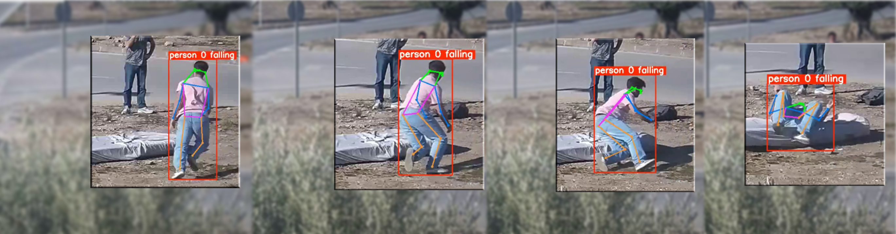
Output of the proposed HAR pipeline in a CCTV scenario, showing selected frames from a clip where detection, pose estimation, tracking, and classification identify a subject (the author) performing a falling action.
Objectives and contributions
The dissertation set out six main objectives, all of which were successfully achieved:- State of the art. Review of the relevant literature and theoretical foundations to contextualize and explain the deep learning architectures employed.
- Comparison and selection. Analysis of different deep learning approaches, identifying those most suitable under the constraints of real-time CCTV processing.
- Curated datasets. Construction of datasets tailored to CCTV and critical events (notably falls), by merging and adapting information from diverse sources.
- Model adaptation. Training, fine-tuning and adjustment of state-of-the-art architectures while explicitly addressing the problem of domain shift to ensure generalization in real CCTV environments.
- Evaluation. Definition of evaluation criteria and validation of the system under industrially realistic conditions.
- Explainability. Application of xAI techniques to interpret the model’s behavior and support the validation of its predictions.
Beyond these objectives, the dissertation also included the following contributions:
- Datasets as a cornerstone. Development of two complementary datasets, Le2iActions and CCTVActions, which provided a solid foundation for training and evaluation, and addressed key limitations of existing public resources.
- Representation advances. Introduction of the geometric bone skeletal representation and Structured Joint Dropout, both of which proved effective for improving robustness, emphasizing relevant kinematic features, and mitigating data scarcity.
- Insights on design choices. Systematic experimentation provided valuable insights into training schemes, data architectures, and representation strategies, clarifying the trade-offs that arise between accuracy, generalization, and efficiency under real-time CCTV constraints.
- Real-time deployment. Specification and integration of the complete pipeline into NVIDIA DeepStream, ensuring seamless execution of all modules (detection, pose estimation, tracking, classification, and post-processing) in a unified workflow. The system provides per-subject spatio–temporal localization together with action predictions, and includes features such as configurable persistence criteria to trigger alarms reliably. Finally, the pipeline was subjected to an extensive operational evaluation, demonstrating its robustness and viability within industrial deployment settings.
Document structure
Chapter 1 introduces the fundamentals of neural networks, Convolutional Neural Networks (CNNs) and Graph Neural Networks (GNNs), reviews the state of the art in HAR, and outlines the xAI tools used later. Chapter 2 formalizes the task and scope: target actions, data representation, curated datasets (Le2iActions, CCTVActions), transformations/augmentations, and the complete pipeline design (see Figure 1). Chapter 3 presents classifier development, ablation studies, training schemes, and the explainability analysis. Chapter 4 details the DeepStream implementation and real-time validation with per-subject localization. Chapter 5 summarizes main findings, response to objectives, limitations, and future directions.Background
This chapter outlines the fundamental concepts and techniques that form the basis of the work presented in this thesis. The first three sections follow the structure of the recent book by C. M. Bishop [1], which is used as a primary reference. We then turn to the state of the art in human action recognition, before concluding with key principles and mechanisms related to explainable AI. To set the stage, we begin with a brief introduction to neural networks, tracing their historical development and core principles.
1.1 Introduction to Neural Networks
Throughout history, humans have always sought to extract regularities from data and exploit those patterns for prediction and decision-making. What once relied on expert-crafted rules or hand-derived formulas has progressively evolved through statistics and algorithmic models. Neural networks embody a different promise: to learn the rules directly from data by composing simple, trainable building blocks into powerful, non-linear function approximators.
At a high level, a neuron computes an affine transformation followed by a non-linearity:
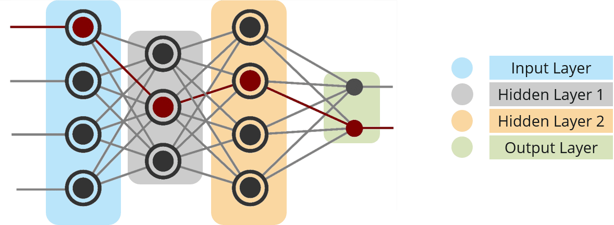
Simple sketch of a multilayer perceptron (MLP) architecture, showing input nodes, two hidden layers, and output nodes. Obtained from [5].
For such networks, learning proceeds by minimizing a loss (or error) function, such as mean-squared error or the cross-entropy for $K$-class classification,
The historical development of neural networks is often framed around three major waves: the initial perceptron, the introduction of backpropagation, and the advent of deep learning.
1.1.1 The Perceptron
The first wave of neural network research was pioneered through the perceptron, originally inspired by the human brain. This single-layer classifier applies a step activation $f(a)=\mathbb{I}[a>0]$ to separate classes with a hyperplane. Its learning rule provably converges in finitely many steps when the data are linearly separable, as shown in the original paper from Rosenblatt in 1958 [6]. Early hardware prototypes showcased automatic weight adjustment.
However, the model's linear separability limitation (e.g., failure on XOR) was rigorously analyzed by Minsky and Papert in [7]. The perception that such limits extended to multi-layer networks, together with the absence of a practical training method for them, fueled a decline in funding and interest, leading to the first AI winter. The core lesson endures: linear models are fast and interpretable, but non-linearity and depth are needed for producing complex decision boundaries.
1.1.2 Backpropagation
The renaissance arrived with the standardization of error backpropagation in 1986 [8], which provided an efficient way to compute gradients of the loss $\mathcal{L}$ via the chain rule and to update parameters using (stochastic) gradient descent. In its simplest form, the gradient with respect to the weights of layer $\ell$ can be written asChoosing differentiable activations (sigmoid, $\tanh$, later ReLU) and losses (such as cross entropy) made multi-layer training practical. In parallel, a probabilistic perspective clarified that, with a softmax output and cross-entropy loss, the network learns to approximate posterior class probabilities, thus connecting neural networks with statistical inference [9]. Despite these advances, deeper MLPs remained difficult to optimize and often relied on engineered features, a sign of an impending bottleneck and, for a time, waning enthusiasm relative to kernel methods and SVMs.
1.1.3 Deep learning
What changed in the 2010s was scale (data, models, compute) and architecture. Large labeled datasets, GPU acceleration, and novel architectural design choices (e.g., convolutions for images, later residual connections to ease optimization) enabled training of deep networks with dozens or hundreds of layers. Depth brings powerful representation learning: each layer transforms raw inputs into more abstract features, letting the final classifier operate in a linearly more separable space. Empirically, deeper non-linear compositions often generalize better when trained with appropriate regularization and data augmentation. This deep learning phase overcame earlier stagnation, delivered breakthroughs across perception and language, and reframed generalization as the interplay of optimization dynamics and data scale. Importantly, the universal approximation insight was not the end but the beginning: depth governs how efficiently functions are approximated, making non-linear deep architectures central to modern machine learning.
At this stage, with deep learning widely adopted, several natural questions arise: to what extent can complex phenomena be captured from data alone, and when is the incorporation of explicit structure (such as symmetries, dynamics, or causality) beneficial? The "Bitter Lesson" [10] suggests that, historically, general methods that exploit computation and data have consistently prevailed over approaches relying heavily on human-specified structure. Even so, the answers are likely problem-dependent, and ongoing research continues to elucidate how data, objectives, and inductive biases interact, leaving open the possibility of further principled advances.
1.2 Convolutional Neural Networks
Having introduced neural networks in general, we now turn to a design that aligns the model with the geometry of images and other grid-structured signals. Fully connected layers treat inputs as unordered vectors, but pixels are arranged on a lattice with strong local correlations. Convolutional Neural Networks (CNNs) build this structure into the architecture: small filters are reused across the image to capture recurring local patterns while keeping the number of parameters manageable. Together with non-linearities and spatial downsampling, this makes learning directly from raw pixels practical and stable.1.2.1 Convolution Operation
The core operation is a discrete convolution between a small learnable kernel $W \in \mathbb{R}^{m \times n}$ (a tiny matrix of weights) and an input image $X$ (a 2D array of pixels). At each spatial location $(i,j)$ the computation is
In practice, each layer learns a bank of filters (several kernels), yielding multiple feature maps that are stacked into channels. If the input has multiple channels (e.g., RGB), each kernel extends across them and the sum in (Equation 4) also aggregates over channels. Two hyperparameters control the geometry: the stride $s$ (how many pixels the kernel moves at each step) and the padding $p$ (zeros added around the border to control output size and avoid shrinking). Spatial resolution can be reduced either by using stride $s$ or by pooling (e.g., max/average over a small window), which makes the representation less sensitive to small shifts and enlarges the receptive field (the region of the input that influences a given activation).
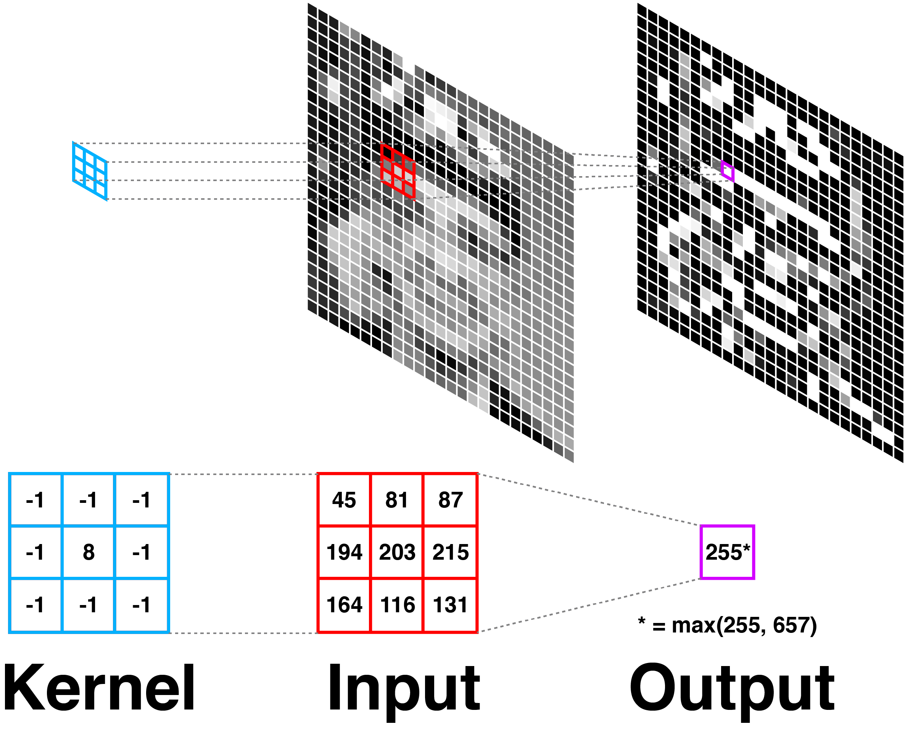
Illustration of the 2D convolution operator. The blue $3\times 3$ kernel is placed on the image; the red patch indicates the current input window; their elementwise product-and-sum plus bias produces one purple activation in the output feature map. Repeating this with a sliding window (controlled by stride and padding) fills the entire output. Sourced from [11].
1.2.2 Features and inductive bias
Two architectural choices give CNNs their advantage on images. First, local connectivity: filters look at small neighborhoods, reflecting the fact that nearby pixels are more related than distant ones. Second, weight sharing: the same filter is applied at every location, drastically reducing parameters and yielding approximate translation equivariance (a shifted input produces a shifted response).
When combined with pooling or striding, deeper layers develop a degree of translation invariance. Stacking these operations across layers produces hierarchical features: early filters resemble edge or texture detectors, intermediate layers respond to parts and motifs, and deeper layers capture object-level patterns. The result is a representation in which a simple linear head can often separate classes effectively.
1.2.3 Impact and limitations
Historically, LeNet-5 demonstrated end-to-end learning from pixels for handwritten digits [12], and the ImageNet breakthrough of AlexNet established deep CNNs as standard backbones in modern vision [13]. Today, such backbones underpin practical pipelines central to this work: person detection (e.g., region-based detectors that localize humans in the scene) and human pose estimation (predicting joint heatmaps or keypoints) [14] [15] [16]. We will discuss some of these architectures in Section 2.5.
Despite their strengths, CNNs assume a regular grid and fixed spatial locality; they are not inherently invariant to rotation or scale and typically rely on data augmentation or specialized modules to gain robustness. Capturing very long-range dependencies may also be challenging with purely local filters. These considerations motivate complementary mechanisms, such as attention [17], and models that operate beyond regular grids, such as Graph Neural Networks for skeletons and other relational structures (see Section 1.3).
1.2.4 Spatio-Temporal Convolutions
While 2D CNNs operate on individual frames, many visual tasks involve temporal dynamics across consecutive frames. 3D Convolutional Neural Networks (3D-CNNs) extend the convolution operator by adding a time dimension, with kernels $W \in \mathbb{R}^{t \times m \times n}$ spanning multiple frames to jointly capture appearance and motion. This enables recognition not only of what appears in the image, but also how it evolves over time.The key advantage of 3D-CNNs is their end-to-end ability to learn motion cues directly, without relying on external features such as optical flow. Their main limitation is the high computational cost and the need for large-scale datasets to avoid overfitting, yet they remain central to modern video understanding [18] [19].
1.3 Graph Neural Networks
Many data domains are naturally graph-structured rather than grid-like. Social networks, molecules, knowledge graphs, point clouds, and articulated human poses can all be represented as graphs. Graph Neural Networks (GNNs) extend neural modeling to these cases by replacing convolutions on regular grids with message passing along graph edges. Each node updates its representation by aggregating information from its neighbors, providing an inductive bias to locality now defined by the graph connectivity [20].
1.3.1 From convolution to message passing
In a 2D grid, convolution mixes information from a fixed local patch. In a graph, neighborhoods are irregular: each node may have a variable degree and no natural ordering. The core operation in modern GNNs is the graph convolution, often written asConvolution on a grid (left) versus convolution on a graph (right). In the latter, neighbors are defined by the graph’s connectivity. Image taken from [20].
1.3.2 Perspectives and design choices
Two main perspectives coexist. Spectral methods define filters in the Laplacian eigenbasis, which is mathematically elegant but computationally demanding and graph-specific [21] [22]. Spatial methods, in contrast, perform local neighbor aggregation directly as in Eq. (Equation 5), scaling linearly with the number of edges and adapting easily to unseen graphs. Most practical models adopt the spatial view.Typical design choices include the type of aggregation (sum, mean, max, or attention), the definition of the adjacency (fixed, partitioned, or partially learned), and the network depth. Deeper models enlarge the receptive field but suffer from over-smoothing, where node features become indistinguishable; thus, most effective GNNs employ only a few layers and rely on residual connections or normalization to preserve expressiveness. For graph-level tasks, a readout operation aggregates node embeddings into a single representation for classification, as illustrated in Figure 5.
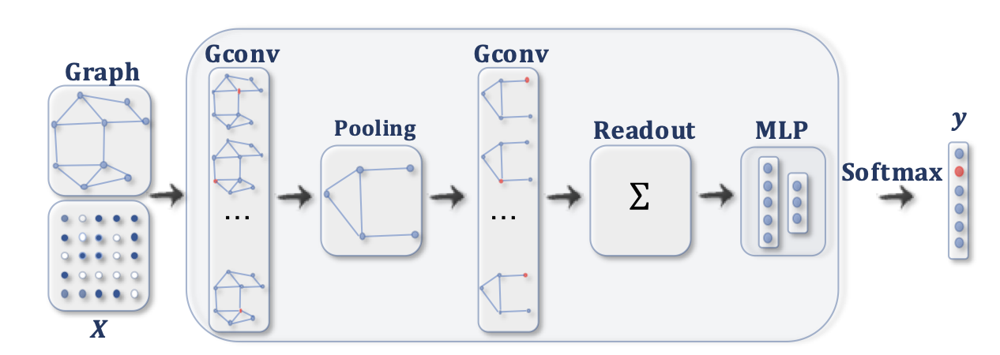
Typical pipeline for graph classification: stacked graph convolutions, optional pooling, permutation-invariant readout, and a final MLP classifier. Obtained from [20].
1.3.3 Strengths and challenges
GNNs combine node attributes with structural information, handle graphs of varying size and topology, and generalize inductively to unseen subgraphs. Their computational cost is roughly linear in the number of edges, making them efficient for sparse, real-world graphs.However, several challenges remain: deep GNNs are prone to over-smoothing, scaling to very large or dense graphs often requires sampling or clustering, and modeling heterogeneous or dynamic graphs demands specialized extensions.
1.3.4 Temporal extensions
When node features evolve over time, the graph becomes dynamic. Spatio-temporal GNNs (ST-GNNs) extend the framework by combining spatial graph convolutions with temporal models such as 1D convolutions, recurrent networks, or attention [23] [24]. Conceptually, this is equivalent to adding temporal edges that connect each node to itself across consecutive frames. Such architectures have proven effective in diverse tasks, from traffic forecasting to human action recognition, where a skeleton sequence is represented as a series of graphs of joints connected by anatomical edges. Some of these models are examined in Subsection 2.5.5.1.4 State of the Art in Human Action Recognition
In this section, we review the state of the art in video-based human action recognition (HAR), focusing on approaches relevant to real-world (“in the wild”) settings and applications such as fall detection. Our discussion builds upon prior surveys [25] [26] [27] [28], which primarily focus on neural network–based methods, underscoring their dominance over handcrafted features and classical machine learning approaches. Modern HAR methods can be grouped into four broad categories:
- 2D CNN-based methods operating on RGB frames (often with optical flow in a two-stream architecture),
- 3D CNN-based and hybrid architectures that learn spatio-temporal features directly or via recurrent networks,
- Transformer-based video models leveraging self-attention mechanisms, and
- Skeleton-based methods that use human pose sequences (with graph or recurrent models).
We outline each category below, highlighting how they handle spatial and temporal information, key contributions, and typical trade-offs in complexity and data requirements.
In Section 2.2 and Section 2.5, we provide perspectives and motivations for adopting skeleton-based representations as the foundation of our real-time CCTV HAR approach, while the specific design decisions for classifier development are presented in Chapter 3. An overview of existing datasets for our task, along with their limitations, is provided in Subsection 2.3.2.
1.4.1 2D CNN-Based Methods
1.4.1.1 Spatial CNNs with Optical Flow
Early deep learning approaches to HAR applied 2D convolutional neural networks to video frames, treating action recognition as an extension of image classification. A prime example is the two-stream CNN architecture introduced by Simonyan and Zisserman [29]. Their model consists of a spatial stream (a CNN processing individual RGB frames to capture appearance information) and a temporal stream (a CNN processing stacked optical flow fields to capture motion between frames). The two streams' outputs are fused (e.g., via score averaging or SVM-based fusion) to produce the final action prediction.
This design explicitly separates spatial features (objects, scenes in each frame) from temporal motion cues (frame-to-frame movement), leveraging the strength of pre-trained 2D CNNs for the spatial part. The temporal stream, fed with dense optical flow, learns to recognize patterns of motion; notably, [29] showed that a ConvNet trained on multi-frame optical flow can yield competitive accuracy even with limited video training data.
Two-stream models achieved strong results on video benchmarks like UCF-101 [30] and HMDB-51 [31], in part because the optical flow input helps focus on human motion while being invariant to background appearance.
1.4.1.2 Extensions and Trade-offs
Subsequent works built on the two-stream idea to better capture longer temporal structure. For instance, the Temporal Segment Network (TSN) framework [32] samples frames from multiple temporal segments of a video, processes each with a 2D CNN (spatial and motion streams), and then aggregates the predictions.Generally, 2D CNN-based methods are computationally efficient during training since they can use ImageNet -pretrained models for the spatial stream and treat each frame (or short snippet) independently. However, a key limitation for real-time usage is the reliance on external optical flow computation and relatively simple temporal fusion. Computing dense optical flow for every video is costly, and the model only captures short-term motion unless additional temporal modeling (like segment sampling or an RNN) is added.
In unconstrained scenarios, 2D CNN with optical flow approaches remain competitive due to their robustness to background clutter (the motion stream ignores static backgrounds) and modest data requirements. Yet, their limited temporal modeling capacity means they might miss complex or long-duration actions. For specific applications like fall detection, two-stream CNNs can be effective if the fall exhibits distinctive motion patterns, but they may need careful tuning, for instance, ensuring that optical flow emphasizes rapid posture changes while suppressing camera-induced motion.
1.4.2 3D CNN-Based and Hybrid Architectures
1.4.2.1 3D Convolutional Networks
As already described in Section 1.2, 3D-CNNs learn spatio-temporal features by convolving across both spatial dimensions and time, enabling motion to be captured directly as part of the representation rather than relying on optical flow. Tran et al. introduced this idea with the C3D network, showing that 3D ConvNets can simultaneously model appearance and short-term motion, outperforming 2D ConvNets on action recognition tasks [18].
Carreira and Zisserman later proposed the I3D architecture, which “inflates” 2D Inception filters into 3D and leverages ImageNet -pretrained weights to initialize the spatial filters [19]. Combined with large-scale training on Kinetics [33], I3D achieved then state-of-the-art performance by jointly learning from RGB and optical flow streams. More recently, SlowFast networks improved efficiency and temporal modeling by combining a slow pathway (low frame rate, detailed semantics) with a fast pathway (high frame rate, rapid motion), fused through lateral connections [34].
1.4.2.2 Hybrid CNN-RNN Models
Another way to handle temporal data is to combine 2D CNNs for spatial feature extraction with recurrent neural networks for temporal modeling. In these hybrid architectures, a CNN (often pretrained) processes each frame or short clip to produce a feature vector, and then a sequence model (like an LSTM or GRU) processes the feature sequence to recognize the action. For example, the LRCN model by Donahue et al. [35] used a CNN (for each frame) whose output features are fed into an LSTM that learns the temporal dynamics of the action.The trade-offs between 3D CNNs and CNN+RNN hybrids include:
- 3D CNNs tend to have a large number of parameters and require substantial training data (e.g., Kinetics [33]) to learn effective spatio-temporal kernels, but once trained or pre-trained they offer an end-to-end solution.
- CNN-RNN hybrids can be easier to train on smaller datasets by splitting the problem (pretrain CNN on images, then train RNN on video sequences). They are better suited for modeling variable-length actions, but their two-stage nature may not capture fine-grained motion as effectively as 3D convolutions.
In practice, 3D CNNs have emerged as the flagship models for video recognition on large-scale benchmarks, whereas hybrid approaches have proved effective in data-limited scenarios or when leveraging pretrained image models through transfer learning.
1.4.3 Transformer-Based Video Models
1.4.3.1 Self-Attention for Space-Time
Inspired by the success of Transformers in NLP and image recognition, recent HAR models apply self-attention mechanisms to video. A representative model is TimeSformer by Bertasius et al. [36], which factorizes the attention along spatial and temporal dimensions. Another is ViViT (Video Vision Transformer) by Arnab et al. [37], which explores different architectures for applying a pure Transformer to video clips.
These transformer models have achieved state-of-the-art results on large video benchmarks. They excel at capturing global context, relating the beginning of an action to its end even if many frames apart.
1.4.3.2 Capabilities and Trade-offs
The strength of transformers in HAR comes at a cost:
- Pure self-attention models typically require extensive training data and compute.
- Without the inductive bias of convolution, transformers can overfit smaller datasets.
- Computational complexity grows quadratically with the number of patches/frames.
Efficient attention variants and hybrid models (e.g., Video Swin Transformer [38]) address this, striking a balance between scalability and accuracy and making transformer-based HAR more practical in real-world settings.
1.4.4 Skeleton-Based Methods
This approach focuses on the skeleton representation of the human body, obtained by estimating the 2D or 3D positions of key joints. The video is thus converted into a sequence of pose vectors or graphs, removing background information and highlighting human motion explicitly.
1.4.4.1 RNN/GCN Models
Early deep learning works on skeleton-based action recognition employed recurrent neural networks: for instance, Du et al. used a hierarchical RNN to model human joint coordinates over time [39].
On the other hand, Yan et al. introduced the Spatial-Temporal Graph Convolutional Network (ST-GCN) [24], which constructs a graph where nodes are fixed body joints and edges represent both anatomical and temporal links.
A notable refinement of this approach is the Two-Stream Adaptive GCN (2s-AGCN) by Shi et al. [40], which learns adaptive adjacency and adds an edge stream. More recently, Liu et al. proposed ProtoGCN [41], which leverages prototype learning to enhance fine-grained motion patterns and better distinguish similar actions.
1.4.4.2 Fall Detection and HAR in the Wild
Skeleton-based methods are particularly promising for fall detection (and HAR), since they are invariant to background clutter and focus directly on human kinematics. Chen et al. [42] demonstrate this by leveraging pose sequences and temporal convolutions, achieving $99.8$% accuracy on the fall class of NTU RGB+D [43] in real time. Similarly, other approaches confirm that relying on skeletons alleviates sensitivity to lighting or scene appearance, which is a common limitation in RGB-based methods [44]. Additional advantages of this approach are presented in Section 2.2.Recent advances in pose estimation further reinforce this trend. For instance, lightweight real-time frameworks based on modified YOLO [14] enhance the robustness of multi-person pose extraction under occlusions and scale variations [45], which directly benefits downstream HAR tasks such as fall detection. These results highlight how pose-driven representations provide a robust foundation for recognizing human actions in unconstrained environments.
1.5 Explainable AI
The use of artificial intelligence in increasingly critical contexts requires the integration of explainable AI (xAI) techniques that can unravel the functioning of models as robustly as possible. Such methods should enable us to understand which aspects of the input led the model to a specific prediction, thereby supporting methodological decision-making regarding both models and datasets, while also satisfying reliability and safety standards that are essential in high-responsibility settings and are now a growing priority for institutions [46]. In particular, Innovasur was recently certified under the ISO/IEC 42001:2023 standard [47].To interpret the complex deep models employed in this work, we rely on post-hoc explainability methods [48] [49] rather than intrinsically interpretable models. Such models (e.g., small decision trees or linear models) are transparent by design but often sacrifice accuracy in complex tasks such as human activity recognition (HAR). In contrast, post-hoc methods allow us to use high-performing models (e.g., deep neural networks) and then analyze their decisions after training. This approach preserves predictive power while still yielding human-understandable explanations of model behavior.
We specifically focus on feature attribution [50] [51] techniques that explain individual predictions by attributing credit or blame to input features. Other strategies (such as approximating the model with a simpler surrogate model [52] or identifying influential training examples [53]) exist, but feature attributions provide a direct way to ask why a particular prediction was made for a given input.
1.5.1 Integrated Gradients
The Integrated Gradients (IG) [50] post-hoc technique attributes a model output $F(x)$ to each input feature by integrating the gradient of $F$ along a straight path from a baseline $x'$ to the input $x$. For feature $i$,
This approximation amounts to computing gradients in a simple loop, an efficient operation that is readily supported by modern deep learning frameworks.
On the baseline $x'$
The baseline represents a reference input against which attributions are measured (a proxy for absence of signal). Typical choices include a zero/neutral input, a blurred or averaged sample, or a class-conditional reference; the choice should be meaningful for the modality and task so that the straight path $x'\!\to\!x$ traverses semantically plausible states. Different baselines emphasize distinct counterfactual questions (e.g., "what changes relative to no signal?" vs. "what distinguishes this class from a typical other class?").
Axioms and properties
IG was designed to satisfy key desirable axioms ensuring faithful, implementation-agnostic attributions:- Completeness. The attributions account for the model output difference between input and baseline
(up to the integration step approximation):
$$ \sum_{i=1}^{n} \mathrm{IG}_i(x;x') \;=\; F(x) - F(x')~. $$
- Sensitivity. If $x$ and $x'$ differ only in feature $i$ and $F(x)\neq F(x')$,
then that feature must receive non-zero attribution, as it is solely responsible for the change:
$$ \big(\forall j\!\neq\! i:\; x_j=x'_j\big)\ \wedge\ \big(F(x)\neq F(x')\big) \;\Longrightarrow\; \mathrm{IG}_i(x;x') \neq 0~. $$
- Implementation Invariance. If two networks $F$ and $G$ are functionally equivalent ($F(z)=G(z)$ for all $z$),
then their IG attributions coincide for any $(x,x')$:
$$ F\equiv G \;\Longrightarrow\; \mathrm{IG}^{F}(x;x') \;=\; \mathrm{IG}^{G}(x;x')~. $$
These guarantees, together with the simple path-integration formulation, make IG broadly applicable to any differentiable model without architectural changes. More generally, it has been shown that path-based attribution methods are the only ones that can simultaneously satisfy these axioms. This axiomatic grounding is crucial: it ensures that attribution maps reflect the true behavior of the model, so that any unexpected or undesirable pattern can be safely attributed to the model itself, rather than to limitations of the explanation method.
Many attribution methods violate these principles. For example, classical saliency maps [54] rely on local gradients and often suffer from gradient saturation, producing near-zero attributions even when the model output changes significantly. Similarly, Guided Backpropagation [55] violates Sensitivity by propagating gradients only through active ReLUs, while DeepLIFT [56] breaks Implementation Invariance by relying on discrete gradient approximations. IG overcomes these limitations by integrating gradients along the baseline-to-input path, resulting in more faithful and class-discriminative attributions, as illustrated in Figure 6.
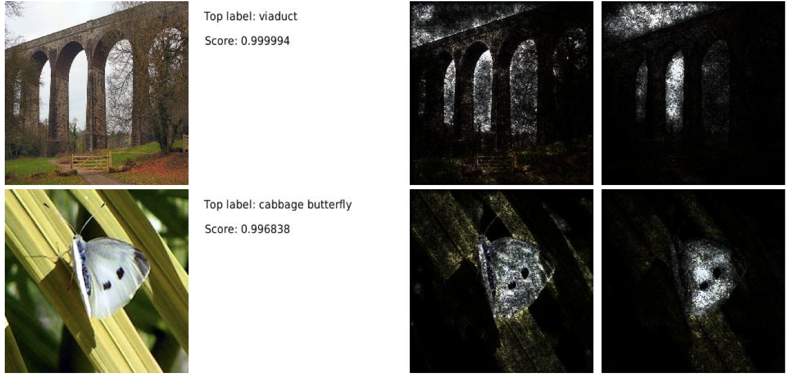
Visualization of attribution maps for two ImageNet samples (viaduct and cabbage butterfly). The figure shows the original images (left), the attributions obtained with Integrated Gradients (middle), and those computed using raw saliency maps based on local gradients [54] (right). Adapted from Fig. 2 of [50].
1.5.2 Expected Gradients
A main limitation of the Integrated Gradients method is its reliance on a single baseline $x'$ and a single straight integration path $\gamma(\alpha) = x' + \alpha(x-x')$. This makes IG highly sensitive to the specific choice of $x'$ and less robust when there is no clear or semantically meaningful reference input.
The Expected Gradients (EG) technique [57] addresses this issue by averaging Integrated Gradients over a distribution of baselines $\mathcal{D}$ and random interpolation factors $\alpha \sim \mathcal{U}(0,1)$:
Note that this approach is not equivalent to computing IG from a mean baseline $\bar{x'}=\mathbb{E}[x']$; EG averages IG over many baselines and interpolation points, and these operations do not commute because IG depends on $F$ along the baseline–input path. Unless $F$ is affine, which is not the case for deep neural networks,
In practice, EG is applied following existing implementations [58] that approximate this expectation via Monte Carlo for computational efficiency: draw multiple baselines $x' \!\sim\! \mathcal{D}$ from a background set (e.g., a representative subset of the training set), sample interpolation factors $\alpha \!\sim\! \mathcal{U}(0,1)$ along each baseline–input path, evaluate the gradients, and average the resulting attributions. Moreover, EG can be viewed as a gradient-based approximation of SHAP values [59], which are the unique additive feature attributions that satisfy properties of local accuracy, missingness, and consistency.
1.5.3 CAM, SHAP and Beyond
Beyond feature-attribution techniques such as IG and EG, two post-hoc families are widely used in vision-based HAR (video or pose/skeleton pipelines): Class Activation Mapping (CAM/Grad-CAM) and SHAP-based methods.
- CAM [60] and Grad-CAM [61] generate coarse, spatially oriented maps over pixels or regions. When applied to temporal data such as joints or frame sequences, they remain computationally efficient. In HAR settings, both methods often produce almost identical rankings and exhibit high stability under small, kinematically plausible perturbations, although faithfulness may vary across classes [62].
- In practice, Kernel SHAP and Deep SHAP are employed within the SHAP framework [59] to generate instance-level and feature-level attributions. A direct comparison in HAR with GCN backbones shows that SHAP-based methods capture fine-grained feature contributions, whereas Grad-CAM provides faster and more region-focused explanations. These approaches are best regarded as complementary, depending on whether precise feature attribution or spatial saliency is required, with additional trade-offs related to reference set choice and computational cost [63].
- For models operating on graph-structured data such as pose graphs, the xAI toolbox includes perturbation explainers (e.g., GNNExplainer [64], PGExplainer [65]), which highlight subgraphs or masks, and surrogate explainers (e.g., GraphLIME [66], GraphSVX [67]), which fit local interpretable models. These methods provide substructure or feature-level rationales when CAM/Grad-CAM or SHAP-based approaches prove insufficient [68].
CAM/Grad-CAM
SHAP-based methods
Additional Methods
Methodology
To build a curated deep learning–based system capable of reporting human actions in a CCTV scene in real time, we should follow a series of well-defined steps. First, we must precisely define the actions to be modelled. Next, we determine how the data representing these actions will be encoded, and collect high-quality datasets tailored to that purpose. Finally, we carefully design the pipeline architecture to meet the desired objective, outlining the data preprocessing and transformation steps under consideration.2.1 Target Actions
We first generated a very detailed report defining the seven actions of interest for this use case, including a range of examples for each one. Below is a condensed summary of that report, outlining the main criteria defined for each action:- Standing: Person remains upright within a very limited area, without walking or changing location. Minimal movements are allowed, such as shifting weight, rotating slightly, or leaning against a wall.
- Walking: Person moves steadily on foot, regardless of pace or direction, including walking in corridors or across open spaces. Excludes very short or ambiguous steps (to avoid confusion with standing) and movements resembling a run.
- Sitting: Person remains seated on a stable surface (chair, bench, step, or floor) or in a clearly low position such as crouching or kneeling. Light posture changes are allowed.
- Falling: Uncontrolled loss of balance resulting in contact with the ground or another surface, ending in a sitting or lying position. Includes forward, backward, or lateral falls, as well as slow collapses due to dizziness. Excludes voluntary descents or destabilisations without ground contact.
- Getting up: Transition from a low position (sitting, lying, crouching) to a more upright one, typically standing. The label covers only the upward motion.
- Bending down: Controlled downward movement toward the ground, such as starting to sit, lie down, crouch, or kneel. Must be intentional and progressive.
- Lying down: Person is horizontally positioned and stable (on the ground or a surface), face up, face down, or on the side. Small movements or posture adjustments are allowed.
These actions can be grouped into static and non-static classes, depending on whether they involve significant movement of body parts (walking, falling, getting up, and bending down) or not (standing, sitting, and lying down). It is worth noting that walking is the only class that may entail significant displacement from an initial position. Aside from that, we distinguish two types of actions according to their temporal nature:
- Continuous actions: Those actions that can be sustained over a relatively long and stable period of time, including standing, walking, sitting and lying down.
- Transitional actions: Short movements that serve as transitions between two continuous actions, including falling, getting up, and bending down. Their duration is typically less than 5 seconds.
Among the defined classes, falling is the primary target, as it represents the most critical action to detect in a surveillance context. The class lying down may sometimes serve as confirmation of a falling event, and is therefore also worth considering. Moreover, standing, walking, and sitting are typical situations in transit areas and public spaces, which are among the most common deployment scenarios. Automatically detecting these can enable periodic reporting or trigger alarms in cases of loitering or inappropriate use of a given space. While bending down and getting up may appear less relevant, their inclusion serves three main purposes:
- Including these two transitional actions creates a closed set of classes, leaving little room for ambiguity in the scenarios of interest. In practice, most activity between any two timestamps can be segmented into actions corresponding to these categories. Some edge cases remain, as discussed in Section 5.3, with the absence of a running class being the most notable; however, this set is adequate for a first version of a production-oriented system.
- Omitting these classes, particularly bending down, could cause the model to confuse them with falling, leading to false alarms in common situations. Their inclusion allows a model to learn more accurate decision boundaries, and expanding from five to seven classes does not significantly increase complexity.
- Although these distinctions could be incorporated into other classes (e.g., grouping bending down and getting up with sitting and ensuring balanced instances), defining them separately provides greater flexibility in post-processing predictions. Given their transitional nature, they are likely to connect only limited sets of actions. For example, following a persistent and confident bending down prediction, only sitting, lying down, or getting up should follow in most cases, whereas a direct transition to standing is not possible. Such constraints reduce the space of possible predictions, occasionally forcing the model to override its initial (and possibly incorrect) choice. This enables the application of purely logical rules, or monotonic constraints, that are always satisfied in practice.
Thus, our collection of actions is clearly specified, allowing us to establish precise guidelines for the subsequent data acquisition process.
2.2 Data Representation
In the context of action classification, the data can be formalized as pairs $(x,y)$ where $x$ is an instance and $y$ is one of the predefined action classes. The first design choice is how instances $x$ are represented.
Human actions are to be classified from RGB video streams. However, a single frame is insufficient to reliably determine the ongoing activity, so multiple time-ordered frames must be considered.
In other words, the instances need to be spatio-temporal, effectively represented in the form of video clips. Ideally, a certain clip should capture only a single action of interest throughout its duration, ensuring that no other actions occur and avoiding label ambiguity within the sample.
The objective is to identify actions at the level of individual people rather than at the scene level. Consequently, predictions should be associated with specific tracked identities. Assuming a person detector, a tracker, and a classifier capable of per-identity predictions, we could model each instance as a sequence of RGB crops centered on a single person.
However, this crop-based representation has some limitations:
- Appearance cues are often unnecessary, and while background context may sometimes assist recognition, it is not strictly required to determine the action.
- RGB inputs exhibit high intra-class variability, along with the inherent noise of image data, which increases the burden on lightweight models intended for real-time use.
- Appearance-centric approaches typically demand larger and more diverse datasets to generalize, thereby raising the risk of overfitting under limited data, increasing susceptibility to edge cases, and complicating error debugging.
- Moreover, simple cropping around the subject removes global information about the person's position within the scene, which makes it harder to capture actions strongly tied to absolute motion patterns, such as walking.
We therefore adopt a simplified and more structured representation of action instances based on human skeletons (also referred to as human poses, landmarks, body joints, or keypoints) extracted from RGB frames, as supported in prior works [69] [70] [71] [24]. A human skeleton corresponding to a single subject in a certain frame can be encoded as an undirected graph, where each node corresponds to a body joint, and spatial edges connect these joints according to natural connectivity maps of the human body structure. Typically, nodes contain three or four values representing the 2D or 3D coordinates of each joint in a given frame, together with a confidence score that indicates the reliability of the body part being located at that position.
Different keypoint topologies can be employed to represent the human skeleton. In our case, we adopt a whole-body topology that includes all body parts required for the actions of interest. Specifically, we rely on the standard format of the COCO Keypoints dataset [72] [73], which defines 17 two-dimensional keypoints: the nose, the left and right eyes, ears, shoulders, elbows, wrists, hips, knees, and ankles. In Figure 7, we illustrate some of the most common skeleton configurations defined in different datasets, showing the connections between keypoints. Two notes should be made regarding this choice:
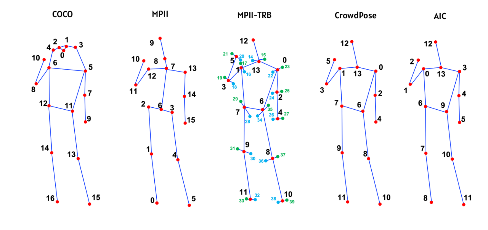
Examples of skeleton keypoint layouts across datasets. From left to right: COCO [72] (17 keypoints), MPII [74] (16 keypoints), MPII-TRB [75] (40 keypoints), CrowdPose [76] (14 keypoints), and AI Challenger [77] (14 keypoints).
- We retain 17 keypoints since this provides a balanced set of joints, and most state-of-the-art methods readily support this format [78] [79] [80]. We acknowledge that some joints, such as facial landmarks, may be superfluous for recognizing the actions of interest, and there is evidence suggesting that fewer keypoints may suffice for certain tasks [81]. Here, however, we prioritize pipeline integration and scalability by adopting a widely used configuration.
- We restrict ourselves to 2D coordinates, as they are generally more reliable [82]. Estimating 3D coordinates typically requires motion sensors [83], multi-view camera setups [84], or more complex pipelines that often build upon 2D keypoints [85]. Nevertheless, 3D information remains beneficial for specific applications, as it can effectively mitigate the uncertainty arising from variations in camera viewpoints and angles.
Ultimately, sequences of skeletons of different identities tracked over time constitute our data instances. These sequences can themselves be interpreted as graphs, where the temporal edges connect the same joints across time. In essence, this approach provides six main advantages:
- Structured nature. This representation captures correlations both spatially, by emphasizing relevant interactions among well-defined body parts, and temporally, by modeling dependencies across time steps. Exploiting these spatio-temporal relations is crucial to accurately characterize human actions.
- Noise reduction. Focusing on kinematic structure reduces irrelevant visual variability such as clothing, background, and lighting, partially mitigating domain shift issues and providing cleaner inputs.
- Privacy. Indeed, skeletons inherently anonymize individuals by discarding identifiable visual features, addressing privacy concerns in surveillance since no critical RGB data is required for training a classifier.
- Sample efficiency. By providing a compact, task-relevant, spatio-temporal structure, this representation lowers the data needed to learn discriminative boundaries compared to raw RGB inputs.
- Storage and compute. Skeleton annotations are lighter to store and process than RGB crops, which facilitates training and real-time inference.
- Global context. Skeletons are able to preserve the absolute position of each body joint within the scene while suppressing background clutter, providing spatial information that a classifier can exploit.
Although skeleton-based approaches to action recognition are still relatively new and remain underdeveloped, with several issues that need to be addressed (e.g., variance of instances due to translations within the scene, occlusion sensitivity, subsequent pipeline intricacy, annotation ambiguity and effort, etc), we believe they nonetheless provide a powerful representation of data.
The next step is to define a data acquisition procedure that produces samples with these properties so that a classifier can be trained effectively.
2.3 Datasets
Data is the fuel that powers all machine learning solutions. Since the emergence of deep learning, progress in this field has been driven by the availability of large-scale datasets. Both architectures and hardware have evolved to handle this ever-increasing volume of data. However, collecting high-quality data, especially video or image-based, is an extremely time-consuming process. When aiming to build state-of-the-art, real-world solutions with limited resources, it becomes essential to define strategies that make this task more manageable. This section formalizes these strategies, balancing available resources against project needs, and summarizes the key characteristics of the datasets we curated to train and tune our system.2.3.1 Data Acquisition Strategy
To train a system with the requirements outlined in the Introduction, we need an adequate number of video sequences depicting instances of the predefined set of actions described in Section 2.1. Since our objective is to recognize actions at the level of individual people, we require these sequences to be annotated with the spatial positions of the actors over time, which is typically done in the form of bounding boxes. Moreover, as previously discussed, using skeleton-based data for both training and inference allows us to afford a reduction in the number of required samples, as it eliminates the noise inherent in RGB data and provides cleaner, more structured inputs for the model. This balance between sample size and informational value lies at the core of our methodology.
Our approach to data acquisition focuses on diversity and precision over large-scale quantity, in line with findings from works such as [86] or [87]. We confidently adopt this procedure, grounded in the premise that pretrained models on larger datasets already provide a solid knowledge base. Thus, our goal is to tailor these models to the nuances of our action categories and ensure effective domain adaptation to CCTV scenarios, by using a sufficient amount of high-quality, diverse, and representative data gathered within reasonable time constraints.
However, this approach still requires accurate keypoint annotations for every frame in each sequence, which constitute the essential information that the classifier will ultimately exploit to learn the spatio-temporal patterns of human actions. Consequently, when a dataset provides skeleton data, bounding boxes are not strictly necessary. Nevertheless, in cases where bounding boxes are available but skeletons are absent, state-of-the-art top-down pose estimators can be applied to extract skeletons from the cropped regions, typically with high accuracy provided that the RGB crops are not excessively noisy. The estimators output each keypoint with an associated confidence score, upon which a visibility threshold can be applied to discard low-confidence predictions, thereby ensuring the quality of the extracted skeletons. Furthermore, when scenes are clear and involve a single subject, detectors can be leveraged to generate bounding boxes if not originally available. In multi-person scenarios, trackers may also be required to obtain the trajectories of each individual in the scene.
In summary, when RGB video sequences are available in an acceptable resolution and recorded under favorable conditions, only limited supervision is needed to derive skeleton annotations. A semi-automatic pose annotation pipeline is described in Appendix A, designed for use when the required resources are not directly provided, and thus build high-quality skeleton datasets from unannotated video data. In addition, we discuss further adjustments required to improve the integrity of the data.
2.3.2 Overview of Existing Datasets
We now review the publicly available datasets for human action recognition reported in the literature, to determine whether relevant data could be gathered from them. In Table 1, we summarize key details of the most widely used general-purpose datasets, all of which provide RGB frames for each sequence. These datasets include a wide variety of highly specific actions, some of which overlap with our actions of interest. For instance, NTU RGB+D contains clips labeled as sit down, stand up, walking towards/apart, and falling down, while HMDB51 also features classes such as sit down, sit up, fall on the floor, and stand up. In addition, we provide a summary of datasets specifically focused on fall detection in Table 2, as falling is arguably the most relevant action for our study and a well-established problem in the literature. Figure 8 illustrates representative frames from all of the presented datasets.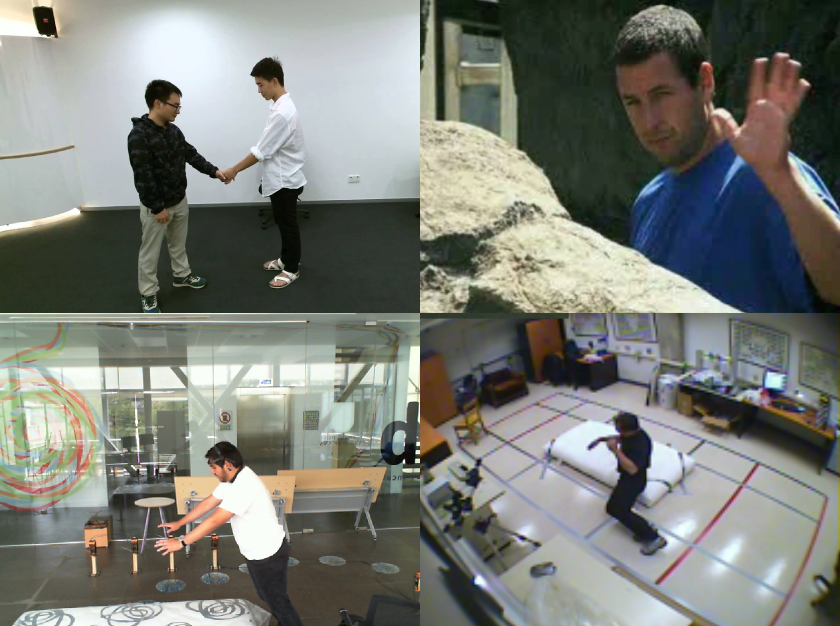
Example frames from some of the reviewed datasets, illustrating contextual and visual differences. Top row (left to right): shaking hands from NTU RGB+D and hand-waving from HMDB51. Bottom row (left to right): UP-Fall and MCFD falls.
| Dataset | # Classes | # Clips | Annotations | Sample Classes | Notes |
|---|---|---|---|---|---|
| Kinetics [33] [88] [89] |
400 /
600 / 700 |
$\sim$306k /
$\sim$495k / $\sim$650k |
Clip-level labels |
Shaking hands;
playing guitar; wrestling |
YouTube-sourced. Trimmed clips ($\sim$10 s).
No skeletons included (some of them are available via Kinetics-Skeleton [90]). Focused on continuous actions spanning each clip. |
| NTU RGB+D [43] [91] |
60 /
120 |
56,880 /
114,480 |
Clip-level labels;
3D skeleton (25 joints); depth; IR |
Drink water;
cough; taking a selfie |
Captured with Kinect v2 (3 cams).
40/106 subjects. Provides multi-view and cross-subject splits. No 2D boxes. |
| UCF101 [30] | 101 | 13,320 | Clip-level labels |
Shaving beard;
sky diving; baby crawling |
Collected from YouTube.
25 groups per class, 4–7 clips per group. Unconstrained, with camera motion, clutter, occlusion. Low resolution, 25fps. Provides 25-fold cross-validation splits. Audio available for a subset of 51 classes. |
| HMDB51 [31] /
J-HMDB [92] |
51 /
21 |
6,766 /
928 |
Clip-level labels /
additional 2D skeleton (14/15 joints) |
jump;
kick ball; climb stairs |
HMDB51 uses clips from movies,
YouTube, and archives; includes $\geq$101 clips per class; provides rich meta-tags (viewpoint, camera motion, occlusion, quality); and is normalized to 240p/30fps. J-HMDB is a smaller subset with detailed joint annotations. |
| STAIR Actions [93] |
100 | 102,462 | Clip-level labels |
Washing dishes;
ironing; entering room |
3–10 s (mostly 5–6 s).
100 everyday home actions; balanced ($\sim$1000/class); half YouTube, half crowdsourced (with on-scene verification). |
| Charades [94] | 157 | 9,848 |
Temporal action intervals;
object classes; scene types; textual descriptions |
Folding towel;
watching TV; closing a laptop |
$\sim$30 s per video ($\sim$82 h total).
Recorded in homes by 267 people; 15% multi-person; 46 object classes; 15 scene types; 27.8k descriptions. |
Overview of reviewed human-action datasets, including number of classes and clips, types of annotations, example classes, and additional notes.
| Dataset | # Clips | Annotations | Classes | Notes |
|---|---|---|---|---|
| UR Fall Detection [95] |
70 |
Clip-level labels;
depth; accelerometer data |
Falling; non-fall activities |
30 fall sequences
+ 40 clips of activities of daily living; recorded with 2 Kinect cameras (floor and ceiling) and wearable sensors. |
| Le2i FDD [96] | 191 |
Fall labels
per interval; frame-wise person bounding boxes |
Fall; non-fall |
Recordings across 5 locations
(lecture room, coffee room, two home settings, and office), performed by different subjects. Several actions occur per sequence; only falling is specifically annotated. |
| UP-Fall [97] | $\sim$1,118 |
Clip-level labels;
wearable and ambient sensor data |
11 classes:
six ADLs; five fall types |
17 subjects; 3 trials per activity;
including RGB and optical flow. 2 cameras are leveraged, some trial clips are missing. |
| FallVision [98] | 11,732 |
Clip-level labels;
2D keypoints (17 per frame) |
Fall; non-fall |
58 volunteers;
falls from bed/chair/standing; high resolution, high frame rate. |
| MCFD [99] | 192 | Temporal action intervals (start–end) | Fall; non-fall (confounders) |
Captured with 8 IP cameras from multiple angles.
Totals: 264 fall segments and 288 non-fall segments in 24 different scenarios. |
Fall-focused datasets with number of clips, annotation types, available classes, and short notes. RGB frame sequences are always included.
Unfortunately, several challenges arise when directly working with these datasets:
- Skeletal data issues: Although some datasets provide skeleton representations (e.g., J-HMDB, FallVision), these are offered in heterogeneous formats and often lack accuracy, as they have not been consistently subject to manual verification.
- Camera angles and movements: Datasets such as Kinetics contain action clips captured from highly diverse, and frequently moving, viewpoints. This contrasts with CCTV scenarios, where cameras are generally fixed, with a restricted field of view and an overhead perspective.
- Action dynamics: Many datasets, including all those listed in Table 2, feature simulated actions. When not carefully designed, these simulations tend to appear scripted, resulting in movements that lack naturalness and real-world variability.
- Action ambiguity: Inconsistencies in the definition of actions are also common. For example, some datasets may not classify minor rotations without displacement as standing, or may exclude crouching from the sitting class, either separating it as an independent action or disregarding it entirely. Such inconsistencies can generate confusion and limit the diversity required for robust modeling.
- Label granularity: Most datasets provide only clip-level labels, which often, whether intentionally or not, encompass multiple actions in addition to the one being annotated. For instance, some datasets label clips as falling while including numerous frames of preceding actions such as walking or sitting, as well as subsequent lying down.
- Class imbalance: Many datasets present significant class imbalance. While combining datasets to mitigate this issue might be feasible, the heterogeneity in their characteristics and formats complicates the establishment of balanced class representations across multiple dimensions.
It is also worth mentioning more CCTV-oriented action datasets such as KISA [100], IKEA ASM [101], and HiEve [102], which are not considered in this work mainly due to limitations related to the specific actions of interest, licensing restrictions, or the practical impossibility of obtaining the data.
In practice, large-scale datasets such as Kinetics and NTU RGB+D serve as robust foundations for pretraining, and pretrained checkpoints for these are already accessible. For the specialization stage, however, attempting to combine any of the previous datasets while addressing their flaws and inconsistencies in order to obtain a balanced collection of samples that accurately captures the actions of interest, with sufficient intra-class variability and high-quality annotations, would be an exceedingly complex and resource-intensive undertaking. Although synthetic approaches [103] [104] have also recently been proposed to mitigate these limitations by generating balanced and diverse skeleton data, we instead opted to curate two dedicated datasets in our work: Le2iActions and CCTVActions , which are described in the following sections.
2.3.3 Le2iActions: An action-focused dataset
To begin with, our aim was to construct a dataset that captured precisely the set of actions defined in Section 2.1, while meeting as many of the quality requirements outlined above as possible. This can be regarded as a first level of data refinement. Figure 9 shows examples of some Le2iActions dataset instances.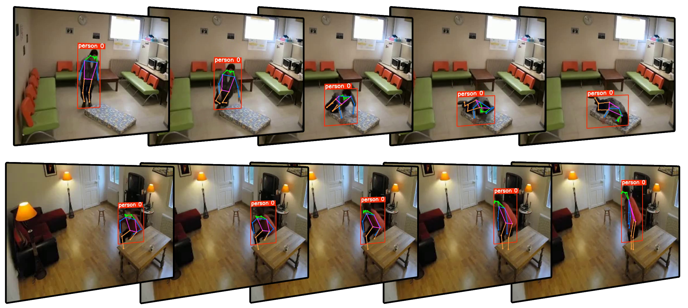
Visualization of temporally ordered RGB frames sampled from a falling sequence (top) and a getting up sequence (bottom) from Le2iActions, together with their bounding boxes and extracted skeletons.
2.3.3.1 Construction Process
For this purpose, we sought to use an existing dataset as a basis. The Le2i FDD dataset [96] proved to be a suitable choice because: (a) although (frame-level) labels are only provided for falls, the RGB clips also contain all of the other actions of interest, from which segments can be cropped, exhibiting reasonable variability in action dynamics, viewpoints (with static overhead cameras), and subjects; and (b) the resolution is adequate ($\sim320\times240$px) given the average distance to the performing subjects, while the recording conditions are relatively clean, thereby enabling the extraction of consistent keypoints with sufficient detail at a stable frame rate (24–25fps).Our task here is to obtain fine-grained sub-clips that capture the actions of interest, while preserving label granularity, avoiding ambiguity, and ensuring high-quality skeleton annotations. Nevertheless, some of the previously identified issues remain: motion patterns are not always realistic, as the basis dataset was created in a staged environment; certain contemplated cases may not be present in the segments to be extracted; and some sources of variability inherent to the final deployment scenario are also missing. Moreover, since we aim to classify as many segments as possible from the $191$ clips available for Le2i FDD, some degree of class imbalance is likely to occur.
We followed the full processing pipeline described in Appendix A to extract the skeletons, including semi-automated person detection. Although the original dataset provides manual bounding box annotations, their quality is poor, and we anticipated that this would also compromise the reliability of the extracted keypoints. Only a few segments were discarded from the original clips, mostly due to excessive ambiguity or insufficient length.
Therefore, we named the new dataset Le2iActions, as it is effectively an extension of the original Le2i FDD dataset.
2.3.3.2 Dataset Characteristics
We report in Table 3 the class distribution of the dataset, which comprises 714 instances, following an 85:15 train/test split. Although we cannot guarantee that all sources of diversity are equally represented in each set, we ensured stratification by class, with the remaining assignment performed randomly. Our train set is also prepared for 5-fold stratified cross-validation, which offers the best balance between validation size and training data.| standing | walking | sitting | falling | getting up | bending down | lying down | Total | |
|---|---|---|---|---|---|---|---|---|
| Train Count | 65 | 162 | 91 | 94 | 75 | 41 | 81 | 609 |
| Test Count | 11 | 28 | 16 | 16 | 13 | 7 | 14 | 105 |
| Overall Count | 76 | 190 | 107 | 110 | 88 | 48 | 95 | 714 |
| Overall Distribution | 10.6% | 26.6% | 15.0% | 15.4% | 12.3% | 6.7% | 13.3% | 100% |
Class distribution across train and test sets of Le2iActions dataset, with percentages reflecting the overall balance of the complete dataset.
As noted earlier, imbalance arises from our attempt to exhaustively extract all possible segments from the original set of clips. For example, the class walking is overrepresented, whereas bending down is underrepresented.
In the left panel of Figure 10, we show the distribution of video clip durations per class for this dataset. These durations, expressed in seconds, reflect both the number of frames collected for each sequence and the original frame rate, which in this case remains fairly stable. Cropped clips of continuous actions (standing, walking, sitting, and lying down) typically last longer than those of transitional actions (falling, getting up, and bending down), which in most cases remain under 2–3 seconds.
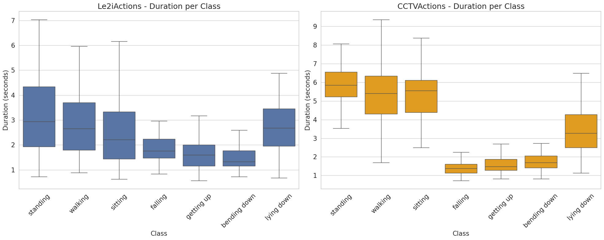
Distribution of the duration of the video clips captured for the Le2iActions dataset (left) and the CCTVActions dataset (right). Outliers are omitted for clarity.
As the original dataset was recorded in only five locations, each with a fixed camera, we do not expect our extension to capture substantial variability in action occurrences within the scene (translations) or in walking trajectories.
Although only one subject appears at a time in the original clips, occlusions still occur when elements such as sofas, chairs, tables, walls, or even frame borders partially block body parts from the camera’s view, resulting in missing keypoints across consecutive frames. These occlusions are sometimes associated with specific classes more than others, due to the characteristics of the areas where certain actions typically take place. For instance, sitting and getting up often involve furniture (mainly tables) that can occlude joints, particularly in the legs. Similarly, classes such as falling may be affected by RGB motion blur caused by abrupt movements, which hinders pose estimation and leads to missing keypoints. In addition, self-occlusion may occur when the subject is not fully facing the camera, as in actions such as lying down. This effect is illustrated on the left side of Figure 11, which shows the distribution of the average number of visible keypoints per sequence, grouped by class. Overall, $747{,}909$ out of $766{,}071$ annotatable joints are visible ($97.6\%$).
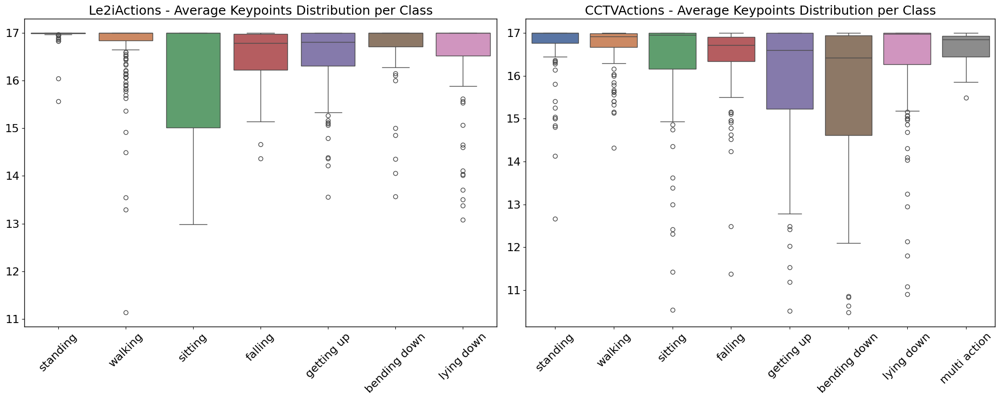
Boxplots of the average number of visible keypoints per sequence, grouped by class, for the Le2iActions dataset (left) and the CCTVActions dataset (right). Outliers are shown.
In terms of motion patterns, these issues inevitably degrade the quality of the dataset and affect the learning process, as some classes may be confounded with others simply due to missing joints. This point will be further discussed in Section 2.4. Nevertheless, it is worth noting that most sequences retain a substantial number of visible keypoints, with mean and median values equal or very close to the maximum of 17.
2.3.3.3 Window Size Selection
For training a classifier with sequences of skeletons, fixed-sized inputs will be required. In practice, we represent them as tensors of size $[W, K, C]$, where $C$ is the number of channels per keypoint (in principle $3$, encoding the 2D coordinates and a visibility mask), $K$ is the number of keypoints (already set to $17$), and $W$ is the number of frames, i.e., the window size. While some models can handle variable-length inputs at evaluation time, training is typically restricted to fixed dimensions. Since our system is designed for real-time processing, it is more consistent to adopt a fixed window size for both training and evaluation.
We argue that the most appropriate window size should be defined by the minimum number of frames required to reliably discern an action within our set of actions. While it could be determined experimentally, we instead base our choice on the characteristics of each dataset, assuming they approximate the temporal dynamics of the target actions in a general sense. Under this assumption, evaluating in real time with the selected window size is expected to be effective.
We select a single temporal window $W$ (in frames) by focusing on the transitional classes (falling, bending down, and getting up), since these events are time-critical and typically shorter, whereas continuous actions can be substantially truncated and still be recognized, as they provide sufficient discriminative evidence within many sub-segments.
Let $\{f_i\}_{i=1}^n$ be the frame counts of the $n$ transitional clips. For any candidate $W \in [\min_i f_i,\max_i f_i]$, define the coverage as
We set the tolerance multipliers to $\lambda=0.5$ and $\mu=2.0$, which define the admissible duration band: a clip is considered covered if its length lies between $50\%$ shorter and $100\%$ longer than $W$. This assumes that actions can still be recognized with as little as half their frames, or with up to an equal amount of additional padding. In this way, we avoid windows that are too short to capture the transitional (or continuous) events, while also preventing excessively long windows that would dilute the corresponding action signal.
Figure 12 illustrates the coverage curve based on the number of frames of transitional actions in the Le2iActions dataset. The optimal choice is $W^*=41$, which covers $97.6\%$ of clips and corresponds to approximately $1.64$ seconds at a frame rate of $25$ fps. For the sake of simplicity and clarity, we round this to $\mathbf{W=40}$ , which still covers $96.2\%$ of the clips.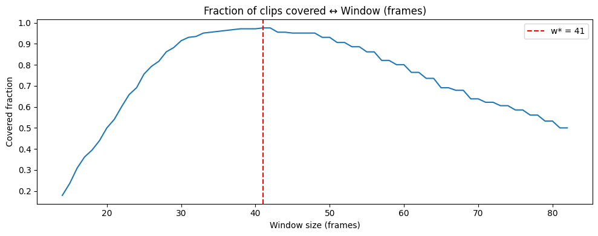
Coverage curve for the Le2iActions dataset, computed over all window sizes between the minimum and maximum lengths of the transitional clips. Coverage margins are defined by $\lambda=0.5$ and $\mu=2.0$.
If, for any reason (most likely efficiency), skeletons are not processed at the original frame rate, the input sequences are effectively subsampled. This must be taken into account when selecting the window size and applied consistently during training. For example, if every second frame is processed in production, this same subsampling should be reflected during training: instances may then have size $[W/2, K, C]$, with skeletons sampled every two frames. Optional temporal jitter may also be introduced, as noted in Section 2.4.
2.3.4 CCTVActions: A context-focused dataset
Initially, we projected this second dataset as a validation set to assess model performance under domain shift, from Le2iActions to real-world CCTV scenarios. We later decided to extend its role and also include it in training, since it provides additional valuable features that help compensate for the limitations of the first dataset, which could not be easily addressed through data augmentation alone. This stage can therefore be considered the second level of data refinement. Figure 13 provides examples of instances from the CCTVActions dataset.
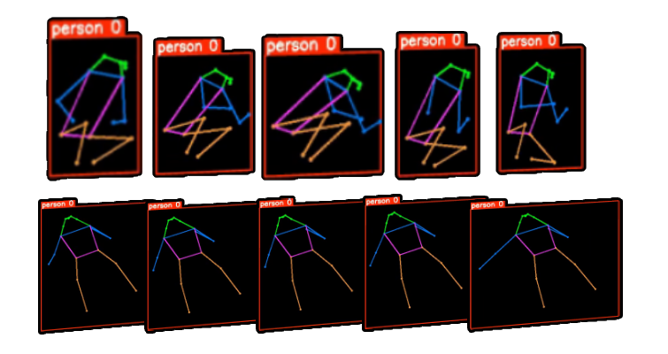
Visualization of temporally ordered bounding boxes and skeletons sampled from a sitting (crouched posture) sequence (top) and a lying down sequence (bottom) from CCTVActions. Absolute positions within the frame are not depicted due to the small scale, and corresponding RGB crops are omitted for privacy reasons.
2.3.4.1 Construction Process
As there was no suitable dataset in the literature that matched our needs in terms of adaptability to CCTV scenarios, we created an entirely new dataset from scratch, leveraging the CCTV infrastructure owned by Innovasur. This infrastructure can be accessed in both real time and playback mode through the Avigilon Control Center Client software [105]. It comprises a network of CCTV cameras deployed across several areas in Spain, covering a variety of public spaces such as streets, parking lots, squares, roads, sidewalks, and indoor areas mainly within government buildings. The cameras operate at different heights, angles, formats, resolutions, and frame rates. Diversifying data collection across such heterogeneous sources enables the development of a system that can be deployed in a wide range of scenarios within this infrastructure or in similar ones.
Available CCTV footage
Given the time-consuming nature of the process, the involvement of the whole team was essential. Accordingly, a set of guidelines was established for data collection:
- Each team member was responsible for gathering data from one or more specific areas (cities, towns, or industrial zones); in total, 8 areas were covered.
- Within their assigned areas, members identified scenarios suitable for recording the target actions. For example, hallways or streets were appropriate for capturing walking, while waiting rooms or squares with benches were suitable for collecting sitting, bending down, or getting up sequences. No restrictions were imposed regarding camera characteristics or conditions, although preference was given to those providing relatively fluent video. In total, more than 100 distinct locations were selected.
- Members then extracted clips from these scenarios, aiming to balance class representation, in line with the strict definitions provided in a detailed report which is summarized in Section 2.1.
- They were instructed to capture actions from different subjects, under varying scales and occlusion levels, and at different times of day to reduce repetition. Extremely distant, poor-quality, or heavily occluded instances were discouraged.
- Very crowded scenes were discouraged as well, since the presence of multiple people complicates post-processing for extracting skeleton data of a single individual. Classifier training is performed per identity, so additional subjects provide no extra benefit. Nonetheless, some crowded scenes were recorded for subsequent testing of the full pipeline.
- Clip duration was required to span the entire action in the case of transitional actions, and to be at most 10 seconds for continuous actions, in order to facilitate semi-automatic pose annotation.
This process yielded a large number of clips across the target classes, capturing a wide range of scenarios, camera conditions, and subjects performing actions at a realistic pace (not staged), from different positions, trajectories, scales, and with varying levels of occlusion within the scene. Moreover, since instances were extracted on demand, we were able to achieve a perfectly balanced class distribution.
Staged Actions
However, another challenge had to be addressed. Actions such as falling or lying down are relatively uncommon, and we were unable to collect enough samples of these classes by reviewing existing CCTV footage. To overcome this limitation, we designed a plan to stage these actions. Specifically, additional clips were recorded in various accessible CCTV locations and then captured through the surveillance software. All actions were carried out safely and in a controlled environment, with protective measures such as the use of a mattress. The plan followed these guidelines:
- We defined 20 subtypes of the falling action, including, for instance: frontal trip, falling face down (F-1), backward collapse due to dizziness (F-4), slipping on a wet floor (F-9), or falling after being hit (F-13). We also defined 8 subtypes of the lying down action, such as supine position (L-1) or side position, fetal-like (L-3). Additionally, we considered 4 extra subtypes of sitting that we found underrepresented after the main data collection, such as sitting on the floor (S-1) or kneeling (S-2). Finally, we also accounted for actions like getting up from the ground and bending down onto the ground.
- Three volunteers performed the actions within a single day, across 10 different locations of a particular city.
- Each volunteer wore different outfits, some chosen specifically to reduce visibility and create occlusion scenarios. Additional elements, such as people passing by or objects in the scene, were also introduced to enhance these effects.
- Whenever possible, we adopted different positions and trajectories within the same scene to diversify the recordings.
We sought to balance all these aspects (subtype, subject, location, attire, and visibility), as well as some of their possible combinations, by logging each staged action in an Excel file that included graphs to illustrate real-time progress. This allowed the next simulation to be chosen strategically, ensuring that coverage goals were met. For example, the resulting balance across action subtypes for the targeted classes can be seen in Figure 14. The balancing process may loosely reflect the logical prevalence of each factor in real-world scenarios.
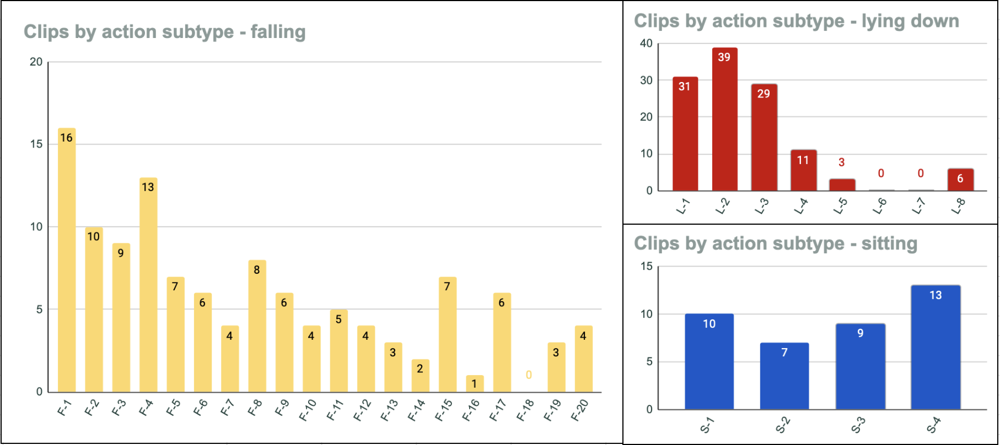
Distribution of staged instances across the defined action subtypes for the targeted classes (falling, lying down and sitting).
The actions were usually staged consecutively to save time and later trimmed to the exact start and end frames of each action. We also staged a few multi action instances, where one or more subjects performed several actions in sequence, specifically designed to test the final pipeline and the prediction post-processing (see Chapter 4).
Finally, bounding boxes and skeletons were extracted following the procedure described in Appendix A, for both real and staged clips, with a few instances discarded due to to excessive vagueness, inadequate length, or low quality.
2.3.4.2 Dataset Characteristics
Our CCTVActions dataset comprises 860 instances in total, of which 20 correspond to multi action sequences that are excluded from training. The remaining 840 instances are evenly distributed across the 7 classes, with exactly 120 instances per class, resulting in a perfectly balanced dataset. Details on the origin of these instances are provided in Table 4. Subsequently, the data are split into an 85:15 stratified train/test split, with the training portion further divided into 5 stratified folds.
| standing | walking | sitting | falling | getting up | bending down | lying down | multi action | |
|---|---|---|---|---|---|---|---|---|
| Real clips | 120 | 120 | 81 | 2 | 108 | 115 | 1 | 0 |
| Simulated clips | 0 | 0 | 39 | 118 | 12 | 5 | 119 | 20 |
| Total clips | 120 | 120 | 120 | 120 | 120 | 120 | 120 | 20 |
Distribution of real and simulated clips per class in the CCTVActions dataset.
The right panel of Figure 10 shows a similar distribution of video clip durations per class compared to Le2iActions, although walking, standing, and sitting clips tend to be longer in this dataset. Figure 11 (right) also shows that its instances contain even fewer visible keypoints on average (in total, $1{,}002{,}845$ out of $1{,}038{,}700$ possible joints are visible, about $96.5\%$), especially for getting up and bending down, mainly due to lower scene clarity and other factors discussed in Subsection 2.3.3.2. These circumstances need to be carefully managed to avoid biases during training.
This dataset also captures variability in translations, scales and walking trajectories, as depicted in Figure 15. Such variability is somewhat reduced for actions that were mostly simulated, since they were recorded in fewer locations.
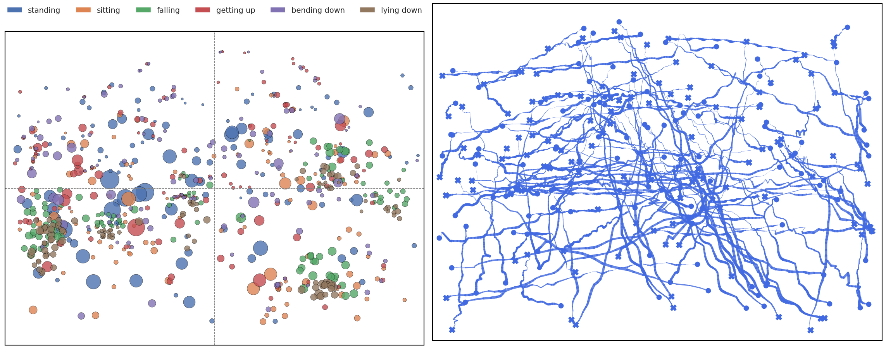
Left: average subject positions for each CCTVActions instance in frame-normalized coordinates (per clip aspect ratio), colored by action class, and with point size proportional to bounding-box scale. Right: for walking, full trajectories are shown since a mean position is not informative, with marker size again reflecting scale.
2.3.4.3 Window Size Selection
Another notable property of this dataset lies in its temporal dynamics. These dynamics are determined not only by how actions unfold in real life, but also by the number of frames recorded per second, which corresponds to the actual input information available to the system. In Le2iActions, clips had a stable frame rate of $24$–$25$ fps, whereas CCTVActions comprises clips captured by cameras operating at heterogeneous frame rates, ranging from $8$ to $30$ fps. Such variability is an important factor to consider when aiming to design a highly generalizable system. Figure 16 illustrates the distribution of frame rates across the dataset.
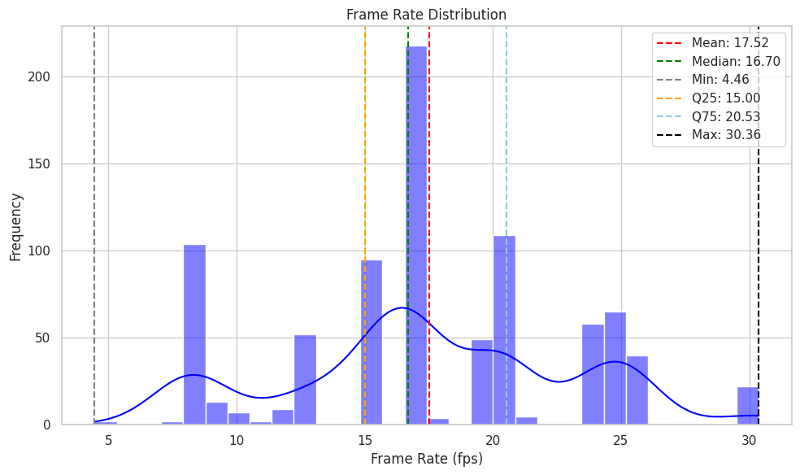
Distribution of frame rates in the CCTVActions dataset, showing the minimum, maximum, mean, median, and quartiles.
The methodology for selecting a window size described in Subsection 2.3.3.3, based on coverage of transitional actions, can also be applied here despite the variability in frame rates. A limitation of this approach is that the window does not encode any notion of “absolute time”, which may lead to issues under extreme frame rates. Rather, it provides maximum coverage regardless of whether the variability arises from the action dynamics themselves or from the recording frame rate, which is meant to enhance the overall robustness of the classifier without requiring complex adaptation mechanisms. Variability in frame rate is further discussed in Subsection 2.5.4.
When using the same tolerance multipliers $\lambda=0.5$ and $\mu=2.0$, the optimal window size is $W^*=28$, which covers $91.4\%$ of the clips in CCTVActions. For practicality, however, we round it to $\mathbf{W=30}$ , achieving coverage of $90.6\%$. If Le2iActions and CCTVActions are merged, the same analysis yields an optimal window size of $W^*=32$ ($91.3\%$ coverage), which we again restrict to $W=30$ ($90.9\%$ coverage) to ensure uniformity.
As expected, although actions are performed at a pace similar to Le2iActions, the lower frame rates in CCTVActions lead to a smaller window size. To maximize coverage, however, fast actions recorded at lower frame rates are not captured as effectively. Figure 17 shows the coverage curve and the coverage region of the selected window for CCTVActions.
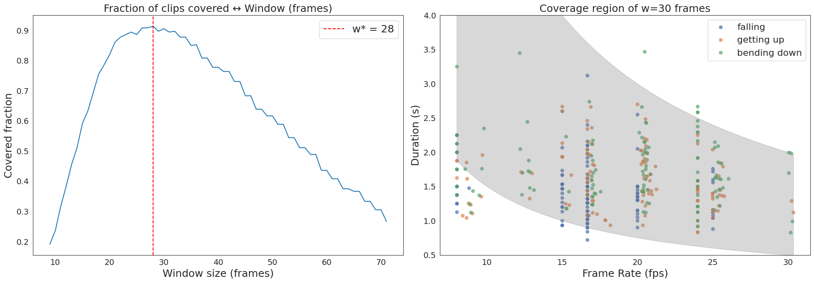
Coverage analysis for the CCTVActions dataset. Left: coverage curve with margins defined by $\lambda=0.5$ and $\mu=2.0$ across different candidate window sizes. Right: coverage region highlighting transitional instances enclosed within the selected window size ($W=30$), considering their frame rate and normalized duration in seconds.
2.4 Data Transformations and Augmentations
This section describes how skeleton sequences from the assembled datasets are presented to the classifier during both training and evaluation.
We define a set of deterministic transformations designed to standardize and normalize the inputs, ensuring consistency across samples at inference time while potentially restructuring the information in a way that could facilitate the formation of clearer decision boundaries during training.
In addition, the training stage incorporates a set of non-deterministic transformations, which essentially expand a single dataset instance into multiple samples, thereby performing online data augmentation. This set of data augmentations is designed to compensate for the scarcity of data, the intrinsic limitations of the datasets, and the expected conditions encountered in real-world scenarios, which may arise from the whole system's pipeline (Section 2.5). To ensure rigor and reproducibility in classifier evaluation, the stochastic components of these transformations are specifically controlled at this stage by fixing a random seed or specifying a particular configuration.
2.4.1 Spatial Normalization
A standard preprocessing step is to normalize 2D joint coordinates so as to reduce sensitivity to the original resolution and aspect ratio of the source frames from which skeleton annotations were derived. Given the frame height $H$ and width $W$, and raw keypoints $\{(x_i, y_i, s_i)\}_{i=1}^{K}$, where $(x_i, y_i)$ are the pixel coordinates of the $i$-th joint and $s_i \in \{0,1\}$ its associated visibility flag, we apply a fixed, frame-referenced mapping:
which maps the domain $[0,W]\times[0,H]$ to $[-1,1]^2$, centering the frame at $(0,0)$. Keypoints with a visibility flag set to zero (i.e., discarded due to low confidence) are masked by setting their coordinates to $(0,0)$, thereby preventing unreliable joints from introducing noise into downstream models.
Normalization improves numerical conditioning and training stability. By design, it does not remove variability due to subject scale or position within the scene; it simply establishes a consistent coordinate space that makes samples comparable across frames and datasets.
2.4.2 Sequence Sampling
As discussed in Subsection 2.3.3.3 and Subsection 2.3.4.3, a fixed window size $W$ is chosen depending on the dataset(s) used, both for training and evaluation. Although evaluation would not strictly require this restriction, we enforce it from the beginning as it is the most robust design choice for subsequent real-time deployment. Furthermore, if the system is intended to operate at a lower frame rate than that of the original sequences, this window size should be adjusted accordingly (e.g., halved if every second frame is processed). Since the collected skeleton sequences have variable lengths, we must adopt a strategy to crop or pad them to the required size. The following aspects should be taken into account:- Frame interval: If the model is designed to handle skeleton sequences downsampled by a factor of $\lambda$, then $\lambda \times W$ skeletons must be considered from each of the existing sequences in order to subsample a final clip of length $W$. In other words, $\lambda \times W$ corresponds to the effective window size in terms of original frames.
- Padding: If the effective window size exceeds the number of frames in a sequence,
padding is required. Several strategies are commonly used, for example:
- Zero-padding: Fill the sequence with empty skeletons (all keypoints set to zero) at the beginning or end.
- Loop-padding: Repeat the entire sequence as many times as needed, truncating the excess if necessary.
- Edge-padding: Extend the sequence by replicating the first or last skeleton until the desired length is reached.
To address this, we designed a centered edge-padding strategy, which repeats the first and last skeletons as many times as needed to fill the sequence. For evaluation, padding is applied symmetrically, whereas during training it can be randomly shifted toward the beginning or the end. This yields a simple form of data augmentation, generating multiple variants of the shorter sequences and allowing the model to observe the same action in different temporal contexts. For example, a short falling action may be extended to include some standing frames at the beginning and lying down frames at the end, which provides a more realistic setting and teaches the model to recognize falls even when they occur within very short intervals.
- Cropping: If the effective window size is smaller than the number of frames in a sequence, a crop of this length must be extracted. For evaluation, we always take the central crop, which should capture a complete action segment in continuous actions and at least the core part of the action in transitional ones, which are seldom much longer than the selected window size (as shown in the coverage analysis). For training, random crops are selected: in continuous actions they may correspond to different instances (e.g., a $300$-frame walking sequence may contain very different trajectories or paces across segments), while in transitional actions they expose the model to different temporal fragments, helping it learn to anticipate or delay predictions. In real-time operation, with continuous prediction over the last effective window, this should result in holding a transitional prediction for longer, which can aid action confirmation.
- Temporal jitter: To further improve robustness to temporal variations, we may introduce a small random jitter when sampling frames from the original sequence. For instance, instead of taking every $\lambda$-th frame when downsampling, we select within a local window around it. This mimics momentary changes in action speed and frame drops due to stream latency, thus enhancing generalization.
In Figure 18, we illustrate how an 8-frame sequence can be adapted to window sizes of $W=12$ and $W=5$, both without downsampling and with a downsampling factor of $\lambda=2$, using random cropping or padding.
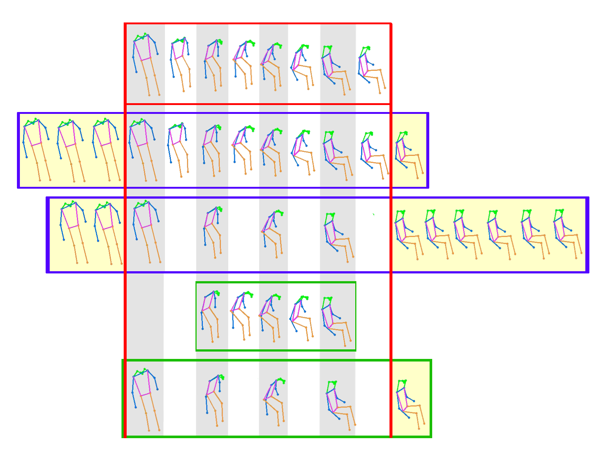
Bending down sequence sampled with different window sizes and downsampling factors. The red rectangle marks the original 8-frame sequence; gray boxes denote odd skeleton frames and white boxes even ones. Random crops and padding shifts are applied, with yellow boxes indicating padded frames. Blue rectangles correspond to $W=12$ and green ones to $W=5$, each shown for $\lambda \in \{1,2\}$. No temporal jitter is applied, so white frames are always discarded when $\lambda=2$.
2.4.3 Random Gaussian Noise
To improve robustness to small inaccuracies in joint localization, we inject random Gaussian noise into the normalized joint coordinates during training. For evaluation, we also add noise with a fixed random seed, specifically to make artificial padding frames less uniform and thus more natural, as they would otherwise remain identical across samples.
This Gaussian noise is added independently per frame and per keypoint, by sampling from a normal distribution $\mathcal{N}(0,\sigma^2)$, where $\sigma$ is a parameter that controls the noise level. The perturbation is scaled to the spatial range of the skeleton within each frame and applied only to visible joints, leaving discarded ones unchanged. This design follows the frame-by-frame nature of pose estimation, where each skeleton is localized independently in time, thus simulating the realistic jitter that arises in keypoint detections.
2.4.4 Affine Transformations
Affine transformations such as scales, translations, and rotations can also be applied as forms of data augmentation. However, the CCTVActions dataset already captures a wide range of such variations, as shown in Figure 15. In addition, rotations require particular caution, as body orientation can be a discriminative and sometimes decisive factor when distinguishing between actions such as standing and lying down. For these reasons, we do not rely on these transformations in our pipeline.2.4.5 Structured Joint Dropout
When building solutions based on skeletal data, we should consider that occlusions are common in real-world scenarios, especially in crowded scenes or when the subject interacts with objects. These occlusions can lead to missing keypoints, since it is difficult to determine the exact position of a joint that is not visible in the image. This is not only a possibility in practice, but also a limitation of the datasets we are using, as noted in Subsection 2.3.3.2.
We could argue that, for instance, a skeleton sequence missing both legs, when no displacement across the scene is observed, is more likely to correspond to a sitting action than to a standing one, as it is probably related to the presence of a table or similar furniture. However, such cases introduce bias into the model and may make the learning process easier, not because the network is truly learning the spatio-temporal nature of the actions, but because it is relying on shortcuts.
In addition, missing keypoints can also arise from inaccuracies in pose estimation, especially when lightweight models are used, and a classifier should exhibit robustness against these effects.
Numerous works in the literature [106] [107] [108] have proposed alternatives to address these issues. Some approaches even exploit the distribution of missing keypoints in the training set to guide the augmentation process [109]. In Algorithm 1, we define our own version of this strategy, which essentially drops joints out (i.e., sets their coordinates to zero) following a structured scheme.
Algorithm 1: Structured Joint Dropout
Input: Skeleton X ∈ ℝW×K×C; base map p ∈ ℝK; decay δ ∈ (0,1];
skip prob p_skip; per-frame prob p_frame; second-zone prob p_2nd;
graph Neigh(·) (COCO edges ∪ symmetry) Output: Masked skeleton X'
1: if Uniform(0,1) < p_skip then 2: return X // skip transform 3: end if 4: Z ← ∅ // set of joints to remove 5: n_zones ← 1 + 𝟙[Uniform(0,1) < p_2nd]
6: for z = 1 to n_zones do 7: Sample seed s ~ Categorical(p / Σp)
8: Q ← [(s, 1)]; Z ← Z ∪ {s}
9: while Q not empty do 10: (j, q) ← pop_front(Q); q' ← q · δ // hop-wise decay 11: C ← {n ∈ Neigh(j) | n ∉ Z}
12: if C ≠ ∅ then 13: π(n) ← p[n] / Σ_{c∈C} p[c] // normalize neighbor priorities 14: for all n ∈ C do 15: if Uniform(0,1) < q' · π(n) then 16: Z ← Z ∪ {n}; push_back(Q, (n, q'))
17: end if 18: end for 19: end if 20: end while 21: end for // Temporal mask with persistence 22: F[1] ← [Uniform(0,1) < p_frame]
23: for w = 2 to W do 24: p_w ← min(p_frame × (1.5 if F[w-1]=1 else 1), 1)
25: F[w] ← [Uniform(0,1) < p_w]
26: end for // Apply zeroing on selected frames and joints 27: for w = 1 to W do 28: if F[w] = 1 then 29: for all j ∈ Z do 30: X[w, j, :] ← 0
31: end for 32: end if 33: end for 34: return X
This data augmentation relies on the following principles:
- Seed sampling. The process begins by constructing a kill-set $Z$ of joints to be eliminated from the skeleton sequence. A seed joint $s$ is first drawn from a base probability map $p$ defined over all $K$ keypoints ($K=17$). Terminal joints (wrists and ankles) are given higher weights in this distribution than the rest; in particular, ankles are be more likely to be drawn than wrists. Probabilities are anatomically symmetric, so left and right counterparts share the same weight.
- Region-based propagation. From the seed, joint selection propagates
to other keypoints according to graph connectivity. The adjacency structure
combines two criteria: (i) anatomical neighbors defined by the COCO skeleton edges
(e.g., wrist–elbow–shoulder), and (ii) symmetric counterparts across the body
(e.g., left–right ankles, knees, or wrists). This dual design is motivated by two factors:
on the one hand, occlusions often affect spatially connected chains;
on the other hand, pose estimators seem to encode a notion of symmetry and frequently
fail simultaneously across symmetric parts, something we empirically noticed
during data annotation.
The propagation follows a breadth-first process in which, at each hop, the infection probability decays by a multiplicative factor $\delta \in (0,1]$. Smaller values restrict selection to local neighborhoods, whereas larger values allow entire limbs or mirrored regions to be eliminated.
The bias of the first sampled joint towards terminal points, and especially the ankles, makes selection more likely to propagate along extremities, which are indeed the most commonly occluded in real-world scenarios. As a result, legs become the body parts most susceptible to elimination. This behavior is motivated by two observations: (i) the higher frequency of missing keypoints in the lower body due to occlusions and truncations in our datasets, and (ii) the strong discriminative role of the legs in actions such as sitting, bending down, or getting up. By assigning them higher elimination probabilities, the model is explicitly trained to be robust against occlusions in these critical regions.
In contrast, a possible avenue for future work would be to assign higher elimination probabilities to head joints, not because such occlusions are common in deployment or in our datasets, but actually to reduce the model's reliance on these less informative joints (as discussed in Section 2.2), which might ultimately hinder classification.
- Multiple zones. With probability $p_{\text{2nd}}$, a second independent seed is drawn and propagated, allowing more complex occlusion patterns, such as simultaneous missing arms and legs.
- Skipping. With probability $p_{\text{skip}}$, the transformation is bypassed and the sample left unchanged. This ensures that a fraction of the data remains unaffected and prevents overexposure, since the augmentation is applied stochastically during training.
- Temporal masking. Once $Z$ is fixed, elimination is applied frame by frame with probability $p_{\text{frame}}$. To enforce temporal coherence, if a frame is masked, the probability for the next frame is increased by a factor of $1.5$ (capped at $1$). This models the fact that real occlusions typically persist across consecutive frames rather than appearing independently.
- Application. For the selected frames and joints, the corresponding coordinates and visibility masks are set to zero, simulating their complete absence in the skeleton sequence.
We define a suitable configuration for this data augmentation technique and empirically assess its impact on classifier performance in Subsection 3.3.4.
In Figure 19, we illustrate the potential effects of this technique on a walking sequence. Note how the same joints are consistently removed across the selected frames. Although more sophisticated strategies with varying elimination patterns could be applied, we adopt a simplified approach to avoid introducing excessive complexity that could lead to unrealistic samples.
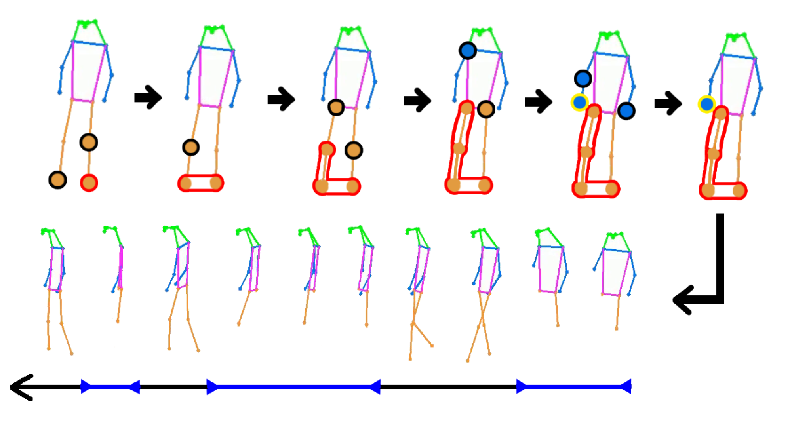
Visualization of the Structured Joint Dropout transformation on a walking sequence of $10$ frames. The top row illustrates the keypoint selection process, starting from the left ankle as the initial seed (highly probable). At each stage, candidate neighbors for propagation are highlighted with black-bordered circles, and at most one is subsequently infected, though multiple could be selected in general. The first affected region is delimited by red boundaries, while a second independent zone emerges in yellow, ultimately leading to the removal of a single keypoint. The bottom row shows the masked sequence, where blue segments indicate the regions subjected to temporal masking.
Strategies related to temporal masking or manipulation are not explored in this work but remain of interest for future research. Randomly dropping skeletons from a sequence can mimic frame drops in video streams or track losses, which may occur in our setting. While real-time continuity strategies in the tracker (see Subsection 2.5.3) may reduce track losses, occluded detections (either genuine or interpolation-induced) sometimes result in misassigned poses, for instance when two individuals cross paths. Injecting brief temporal skeleton crops from certain sequences into others during training could simulate these situations, and thereby improve classifier reliability.
2.4.6 Feature Representation
Up to this point, we have defined all transformations as operating directly on a skeleton sequence, assumed to be a spatio-temporal graph with three channels per node: the $x$ and $y$ pixel coordinates of a keypoint, and its visibility mask. However, representing skeleton data through the joint features is not the only possible three-channel formulation.
We now introduce four alternative representations, each of which encodes information differently, allowing the model to exploit different aspects of the underlying dynamics. All of them are derived from the original joint representation, and although certain details of the raw input may be discarded, they are specifically designed to highlight more learnable patterns, while inevitably imposing constraints in some cases. Their effectiveness has been studied in several prior works [110] [111] [40] [112] [113].
Let $\mathbf{p}_{t,v}=(x_{t,v},y_{t,v})$ denote the 2D coordinates of joint $v$ at time $t$.
- Bone (B). For this representation, we introduce the concept of a kinematic parent: each joint $v$ is associated with a parent joint $\pi(v)$,
according to a hierarchical definition of the skeleton.
This hierarchy reflects natural anatomical relations between body parts; for example,
in the COCO configuration we find child–parent pairs such as knee–hip, wrist–elbow, or even hip–nose,
which capture both symmetric limb relations and more global connections.
Within this structure, the nose often plays a central role, acting as a reference point
for balance and equilibrium.
Based on this hierarchy, the bone vector is defined as the displacement from a joint to its parent:
$$ \mathbf{b}_{t,v} = \mathbf{p}_{t,v} - \mathbf{p}_{t,\pi(v)}. $$Consequently, the feature channels are $(\mathbf{b}^x_{t,v},\, \mathbf{b}^y_{t,v},\, \mathbf{\bar{m}}_{t,v})$ for each joint $v$ and frame $t$, corresponding to the two vector components and the mean visibility of the joints that define the bone. This convention of averaging joint visibility will be consistently adopted in all subsequent representations. This representation encodes the second-order spatial structure of the body, implicitly capturing both the lengths and the orientations of its predefined kinematic segments. It introduces a natural invariance to any translations, including both absolute position within the scene and global motion of the subject over time, since features are defined as displacements relative to reference body parts within each frame. In other words, neither the location of the person in the image nor their overall movement across the scene can be recovered from this representation. As a consequence, it may lead to ambiguities between actions such as standing and walking, where relative leg or arm movements alone are not sufficient to reliably disambiguate the activity. - Joint Motion (JM). This representation encodes the temporal displacement of each joint between consecutive frames:
$$ \Delta \mathbf{p}_{t,v} = \mathbf{p}_{t+1,v} - \mathbf{p}_{t,v}. $$The feature channels are $(\Delta \mathbf{p}^x_{t,v},\, \Delta \mathbf{p}^y_{t,v},\, \mathbf{\bar{m}}_{t,v})$, corresponding to the horizontal displacement, the vertical displacement, and the mean visibility of the joint across the two frames.
In this way, JM captures the short-term velocity of individual joints, emphasizing how their positions evolve over time. This representation is naturally invariant to absolute positions within the frame, while still preserving information about whether the subject is moving or stationary throughout the sequence. As a result, actions such as walking and standing can be easily distinguished. On the other hand, information about relative joint configurations within a single frame is lost, making it often infeasible to discriminate between different static postures, such as standing, sitting, or lying down.
- Bone Motion (BM). This representation measures the temporal displacement of bone vectors:
$$ \Delta \mathbf{b}_{t,v} = \mathbf{b}_{t+1,v} - \mathbf{b}_{t,v}. $$The feature channels are then $(\Delta \mathbf{b}^x_{t,v},\, \Delta \mathbf{b}^y_{t,v},\, \mathbf{\bar{m}}_{t,v})$, corresponding to the horizontal displacement, the vertical displacement, and the mean visibility of the two joints that define the bone. BM captures dynamic variations in bone lengths and orientations, complementing JM by emphasizing structural rather than purely positional changes. Since it is derived from bones, this representation is also invariant to any kind of translations.
- Geometric Bone (GB). When determining the label of an action from a sequence of skeletons without RGB context,
factors such as size and absolute position of the subject are largely irrelevant.
All previous representations already provide invariance to absolute position in the frame,
but none of them achieve full invariance to scale, nor do they explicitly emphasize
relative orientations of joints within a frame.
Yet orientation is crucial for distinguishing
between actions such as standing and lying down (a matter of global orientation, which is particularly
discriminative under the consistent overhead, non-tilted view of most CCTV cameras),
or sitting and bending down (a matter of local rotation involving leg joints).
To address these issues jointly, we propose the GB representation, arising from the natural idea of expressing each bone vector in polar form. Similar ideas based on angular encodings have been explored in prior works [114] [115]. We compute it as
$$ |\tilde{\mathbf{b}}_{t,v}| \;=\; \frac{\lVert \mathbf{b}_{t,v} \rVert_2} {\frac{1}{K}\sum_{v' \in K} \lVert \mathbf{b}_{t,v'} \rVert_2}, \qquad \boldsymbol{\theta}_{t,v} = \operatorname{atan2}(\mathbf{b}^y_{t,v},\, \mathbf{b}^x_{t,v}). $$The feature channels are thus $(|\tilde{\mathbf{b}}_{t,v}|,\, \boldsymbol{\theta}_{t,v},\, \mathbf{\bar{m}}_{t,v})$, corresponding to the normalized bone length (with respect to the mean bone length across the subject in frame $t$), the orientation, and the mean visibility of the two joints. The per-frame, per-subject normalization ensures independence from scale changes over time while also making the approach suitable for real-time processing.
In light of the above, we argue that this representation theoretically provides the most compact encoding for our particular set of actions, although empirical testing is still required. Nevertheless, it remains invariant to global motion over time, which makes it difficult to separate activities such as standing and walking; this, however, can be partially mitigated by considering the relative motion of legs and arms, although it is not a conclusive criterion.
As discussed, each representation entails its own advantages and limitations, and ideally they could be integrated to exploit their complementary strengths [40] [113]. In practice, however, we will empirically determine the single representation that best fits our solution (see Subsection 3.3.3).
After applying all of the transformations, skeleton sequences are represented as tensors $X \in \mathbb{R}^{W \times K \times C}$, where $W$ denotes the window size, $K=17$ the number of keypoints, and $C=3$ the feature channels. These tensors are then stacked into batches and fed to the classifier during both training and evaluation, enabling efficient parallel computation on GPUs.
2.5 Pipeline Definition
Once the data perspective has been established in terms of representation and sources, we can proceed to design the complete end-to-end action recognition system, specifically tailored to real-time CCTV surveillance scenarios. The pipeline comprises six main components, as anticipated: (i) a detector, (ii) a pose estimator, (iii) a tracker, (iv) a skeleton preprocessing module, (v) a classifier, and (vi) a prediction post-processing module. Throughout this section, we explain key architectural decisions by comparing different alternatives. We will also specify how data flows downstream, linking the components together. As a reference, works such as [116] and [117] describe closely related pose-based action recognition pipelines.
For a complete picture of the implementation of this pipeline and its precise configurations, refer to Chapter 4.
2.5.1 Detector
The first component of the pipeline is the person detector, which localizes every individual present in each frame coming from a real-time video stream by means of multi-object detection. Before inference, each frame is preprocessed, typically resized and normalized. Then, one-stage convolutional neural network–based detectors are employed, as they offer a favorable trade-off between accuracy and computational efficiency. Representative architectures in this category include YOLO (You Only Look Once) [14] and SSD (Single Shot MultiBox Detector) [118], both of which achieve real-time operation at frame rates above 30 FPS on modern GPUs. Other alternatives include two-stage detectors such as Faster R-CNN [15], which often achieve higher accuracy by refining region proposals, or transformer-based models such as RT-DETR [119], which can better handle complex situations like occlusions. However, their higher computational cost generally makes them less suitable for real-time scenarios.
Essentially, one-stage detectors output bounding boxes around each detected person, usually defined by four parameters $(x, y, w, h)$ corresponding to the top-left corner coordinates and the width and height of the box, along with a confidence score indicating the likelihood that the enclosed region contains a person. These outputs are often presented as a tensor that also includes class probabilities for multi-class detection, with a size that depends on the specific architecture, as illustrated in Figure 20 for YOLO. In our design, however, the detector is constrained to the person class only, since additional object categories are irrelevant to human action recognition within the defined set of action categories.
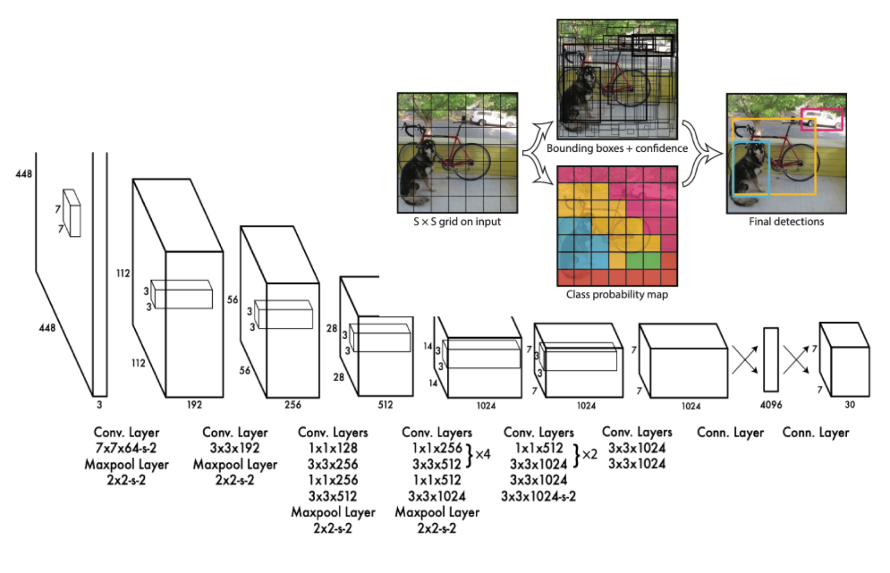
Architecture of the original YOLO detector [14]. The input image is divided into an $S \times S$ grid, and each cell predicts $B$ bounding boxes, confidence scores, and $C$ class probabilities. Thus, the network outputs a tensor of size $S \times S \times (B \cdot 5 + C)$. In the above illustration, $S=7$, $B=2$, and $C=20$, yielding a final tensor of $7 \times 7 \times 30$.
Since detection constitutes the entry point of the pipeline, it can be regarded as its most critical component, as errors at this stage propagate downstream: a missed detection prevents the analysis of subject’s action sequence, while spurious detections introduce noise into pose estimation and classification. For this reason, our detector must be robust to variations in size, position, and at least moderate occlusions, for which pretrained models are particularly well suited. In addition, it must cope with unusual body configurations of our interest in surveillance scenarios, which may deviate from regular orientations, such as individuals in the midst of a falling or lying down event. It might be necessary to fine-tune detectors to perform reliably in such domain-specific conditions.
In contrast to dataset annotation (cf. Appendix A), where recall is initially prioritized, the focus here is on achieving a balanced precision–recall trade-off. To this end, some operational parameters must be carefully tuned to the deployment scenario:
- Detection confidence: a minimum probability threshold ensures that only sufficiently reliable detections are propagated to the pose estimator.
- Non-maximum suppression (NMS) threshold: NMS uses an IoU threshold $\tau_{\text{nms}}$ to suppress overlapping boxes. Lower $\tau_{\text{nms}}$ removes more overlaps (fewer duplicates but higher miss risk), while higher $\tau_{\text{nms}}$ retains more candidates (more redundancy). Note that if transformer-based detectors such as RT-DETR are employed, NMS is not required since duplicate removal is handled inherently within the architecture.
- Maximum number of simultaneous people: this cap prevents the detector from flooding the system with detections in crowded scenes, where many individuals might be captured with varying levels of confidence.
- Minimum detection size: very small bounding boxes are typically associated with distant or spurious detections; filtering them reduces noise and computational overhead.
- Privatization layers (region masking): in fixed-camera environments, regions of the frame that are irrelevant or problematic for human action recognition can be excluded from processing at this step. Examples include crowded background areas, static posters containing human figures, or points of perspective convergence where false detections frequently arise.
From an efficiency standpoint, the system can be optimized by adjusting the frame interval, i.e., running the detector every $N$ frames instead of on each individual frame. Proper coordination with downstream components is essential to preserve both accuracy and real-time responsiveness when temporal context is deliberately subsampled.
2.5.2 Pose Estimator
Once a person has been localized in a particular frame, their pose is estimated using a top-down approach. This involves cropping the image to each Region of Interest (ROI) provided by the detector and applying a specialized algorithm that predicts the coordinates of the human skeleton keypoints (as defined in Section 2.2), along with a confidence score for each point. To generate the crop, the detection tensor must first be processed, optionally adding some padding to ensure a uniform input size for the pose estimator, which also provides additional context that may be valuable (e.g., the extended bounding box may include an arm partially outside the original bounding box). Regarding the output, it may be produced as heatmaps for each joint, matching the input resolution. These heatmaps can then be straightforwardly post-processed to extract the $(x,y)$ coordinates of each keypoint.
In contrast, bottom-up methods (e.g., OpenPose [16]) detect all keypoints across the entire image and then group them by individual. Although this removes the need for an explicit detection stage, it typically demands a far more precise initial understanding of the scene, which is difficult to guarantee in complex CCTV environments. In addition, adapting such methods to real-time pipelines is considerably more challenging. For these reasons, top-down approaches are generally preferred, as their stepwise design processes each individual separately, reducing ambiguities among nearby people and ultimately achieving higher accuracy.
As a top-down pose estimator, we can employ convolutional neural networks trained on large-scale human pose datasets such as COCO [72] or MPII [74]. These models typically rely on a convolutional backbone to extract features from the cropped ROI, followed by a prediction head that generates the joint heatmaps. Prominent examples include HRNet (High-Resolution Network) [80] and Simple Baseline [120], as well as the transformer-based ViT-Pose [78], built upon the ViT architecture [121]. The latter has proven highly effective during data annotation; although computationally more demanding than CNN-based alternatives, lighter variants have been developed that can be adapted for real-time operation while maintaining a favorable precision–throughput trade-off (see Figure 21). Nevertheless, it is important to note that employing such models, while providing a substantial performance gain, also makes the pose estimation module the heaviest component of the pipeline.
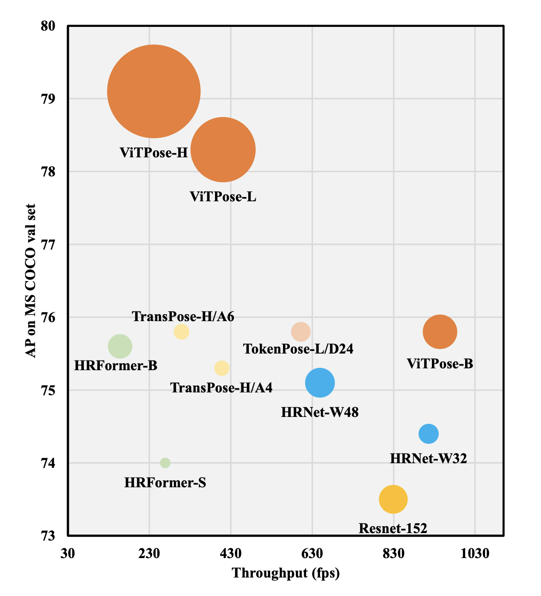
Visualization of ViTPose and other state-of-the-art methods on the COCO validation set, highlighting the trade-off between precision, throughput, and model complexity. Bubble size encodes the number of parameters. Image obtained from [78].
Note that it is also possible to fuse detection and pose estimation into a single stage, as done in models such as YOLO-Pose [79] or RTMO [122]. While these approaches are practical and computationally efficient, we argue that they generally yield less accurate pose estimations than top-down models operating directly on person crops, since the joint task of detection and pose regression is inherently more complex. Moreover, maintaining two separate modules provides greater flexibility and simplicity in optimizing or improving each component independently. For example, if the pipeline fails to detect persons unusual postures, it is easier to fine-tune or replace only the detector rather than retrain the entire one-stage architecture, which would additionally require keypoint annotations for such atypical postures.
After processing the heatmaps and extracting joint coordinates, it is necessary to re-project them onto the original image reference frame, since the estimator outputs positions relative to the cropped ROI. Confidence scores are then thresholded to discard unreliable keypoints, producing visibility masks. This procedure yields a single normalized skeleton associated with each detected individual.
2.5.3 Tracker
It is essential to preserve the identity of each individual over time, enabling their bounding boxes and corresponding poses to be associated across consecutive frames and assembled into consistent trajectories (tracks). The tracking module receives as input the detections from each frame, namely the coordinates and bounding box positions, and establishes correspondences across successive frames to maintain identity continuity over time. This task, commonly referred to as multi-object tracking, is typically addressed in two principal ways, or through a combination of both: by exploiting spatial and geometric proximity between detections in consecutive frames (e.g., IoU-based or motion-based trackers) or by leveraging re-identification (ReID) through appearance features.
- Motion-based trackers. Lightweight approaches such as SORT [123] rely on bounding box overlap (IoU) and Kalman filtering [124] to associate detections across frames under the assumption of limited displacement. They are computationally efficient but prone to identity switches when trajectories intersect or when detections are missing. More recent methods, such as ByteTrack [125], retain this efficiency while achieving state-of-the-art performance.
- Appearance-based trackers. These methods leverage visual features to preserve identity under pose or motion changes. Examples include DeepSORT [126], BoT-SORT [127], and correlation-filter families such as DCF/CSR-DCF [128]. They associate detections through embeddings or filter responses, often combined with motion cues. By exploiting appearance (e.g., clothing or color), these trackers are more robust to occlusion and trajectory overlap, albeit at a higher computational cost.
- Pose-based trackers: Trackers that exploit skeleton information to improve identity association can also be considered. Rather than relying exclusively on bounding boxes, these methods measure pose similarity, for instance by computing the distance between joint coordinates across consecutive frames. Representative examples include the LightTrack framework [129] and the KeyTrack method [81]. Although conceptually appealing, we discard this option since pose-based trackers are still less mature and would be difficult to integrate into our current system.
The tracker can also be placed before the pose estimator and synchronized with the detector, so that detections are not performed on every frame. Instead, the module would interpolate bounding boxes (or poses, when applicable) by leveraging identity information across subsampled frames, thereby enabling skeleton estimation to be carried out likewise on each frame while still improving overall efficiency. This strategy is natively supported by the implementation framework, as described in Chapter 4. However, when detections are skipped for efficiency, pose inference may also be omitted, as it typically constitutes the heavier component. In this case, interpolation becomes unnecessary, since bounding boxes are used primarily to generate crops for pose estimation (and, optionally, for real-time visualization).
2.5.4 Skeleton Preprocessing
This module aggregates the information and applies the necessary transformations required for classifier processing at a specified frequency. Specifically, at a given instant, it stacks the last $W$ skeletons associated with each tracked individual and stores them in a tensor $X \in \mathbb{R}^{W \times 17 \times 3}$, which encodes the temporal sequence of skeletal features, such as 2D joint coordinates and their corresponding visibility masks. $W$ corresponds to the selected window size for the classifier, in line with Subsection 2.3.3.3 and Subsection 2.3.4.3. A conceptual overview of how such sequences are constructed and fed to the subsequent classifier is illustrated in Figure 22.
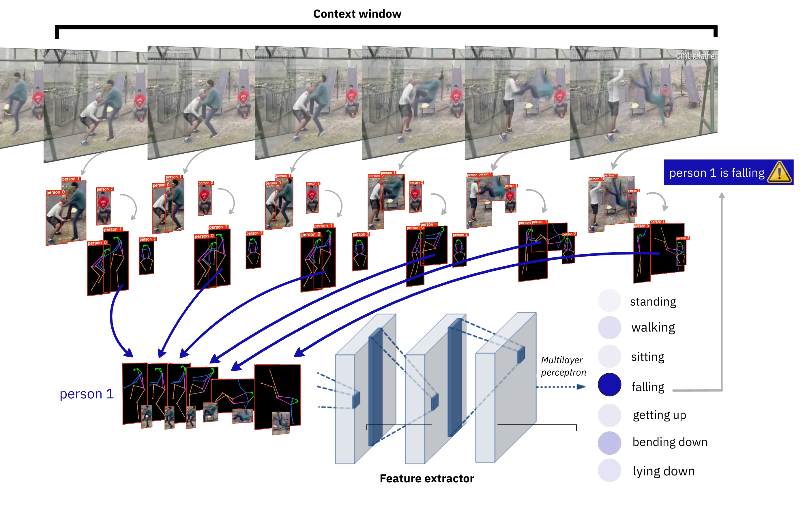
Illustration of multi-person detection and pose estimation, followed by the aggregation of the skeleton corresponding to one identity within the context window, which is then fed to the classifier to obtain action probabilities and derive a single label. The pose visualizations are provided, but are not used as RGB inputs; they simply illustrate the underlying structured tensors.
For the sequence to encode high-quality information that can be further processed, it is crucial that the three previous modules work and interact seamlessly. Additionally, we apply some of the transformations defined in Section 2.4, further enhancing the input data:
- Absolute skeleton coordinates are normalized to the $[-1,1]$ range.
- Each keypoint is converted into the selected representation format from Subsection 2.4.6.
- No explicit padding or truncation is required, as we always collect the last $W$ skeletons. If a subject has not yet accumulated enough skeletons, it will not be eligible for action classification. During evaluation, deterministic noise was added precisely to assess the performance of this operating mode while still allowing for sequences shorter than $W$ in the validation and test sets.
Other preprocessing strategies include the Optical Flow Pose Image (OFPI) [130], which incorporates optical flow as pseudo-images representing temporal joint trajectories to better capture motion dynamics, and the Encoded Human Pose Image (EHPI) [131], which encodes joint coordinates into an image-like format using color channels for different joints. However, although these approaches are interesting and enable further processing through CNNs, they forfeit the compactness and structure of skeleton representations and require generating RGB images in real time, which is neither trivial nor computationally affordable when taking into account the rest of the components.
It is important to note that the last $W$ poses for an individual may not correspond to the last $W$ frames, hence frame–pose consistency is not fully guaranteed. Tracks may be interrupted if a previously detected individual is temporarily lost or if the stream becomes unstable. This situation is inherently unpredictable, but can be exposed to the model through temporal augmentations. However, if frame loss is systematic (for instance, when pose inferences are intentionally skipped for efficiency), we should ensure that the subsequent classifier is trained on subsampled windows of smaller size, or that the original frame rate is sufficiently high so that the effective processing rate is still captured within the chosen window size (see Subsection 2.3.4.3). In general, when using the same classifier across cameras with different frame rates while skipping frames in all of them, it is advisable to train the model to encode this skipping strategy consistently across samples, thereby ensuring robustness.
Another possible option would be to interpolate missing skeletons, which, if done correctly, could establish a correspondence between wall-clock time and the number of poses in a sequence. A classifier could then be trained under the same strategy, so the system encodes a single notion of time, effectively eliminating one source of variability. Temporal differences would thus only arise from action speeds, which simplifies the recognition task. However, we choose to maintain the previous strategy to avoid the potential uncontrollability of skeletons, as skeleton interpolation can be noisier than bounding box interpolation and requires on-the-fly skeleton generation, which incurs an efficiency cost.
2.5.5 Classifier
The action classification module takes each skeleton sequence as input, produces class probability maps over the selected actions, and batches the predictions per identity. The earlier steps merely serve to prepare the data, whereas this stage performs the actual action recognition, and therefore requires more tuning and careful training.
As stated in Section 2.2, data are represented as graph-based pose sequences, including both anatomical and temporal connections, each associated with an action label. Graph Convolutional Networks (GCNs) are neural architectures designed to process graphs as input, learning compact representations from their structured connectivity, as described in Section 1.3. These models encode the relationships between joints either explicitly, using predefined anatomical and temporal adjacencies provided with the tensor built in the skeleton preprocessing module, or implicitly, by learning abstractions of joint correlations from the training set. The resulting representations are then passed to a multilayer perceptron to produce normalized class probabilities through a softmax activation function, as shown in Figure 22.
Many GCN variants have been proposed in the literature for skeleton-based action recognition, such as ST-GCN [24], CTR-GCN [132], and ProtoGCN [41], the latter introducing attention-based mechanisms. The most suitable model for our pipeline will be selected in Subsection 3.3.2. These models are typically lightweight, since they operate on relatively small inputs compared to RGB images, which allows real-time execution. Nevertheless, predictions are inherently delayed, as they require the analysis of the most recent $W$ skeletons. Our padding and truncation strategy during training (see Subsection 2.4.2), however, may help mitigate this delay by enabling earlier predictions.
Different paradigms for encoding spatio-temporal pose graphs include recurrent models such as RNNs (e.g., LSTMs and GRUs) [133] [134] [135], which model temporal dynamics via hidden state vectors. However, these approaches generally lack an explicit understanding of the skeleton's spatial structure, and joints are often concatenated as plain vectors. Yet these methods primarily focus on temporal continuity rather than preserving the anatomical graph topology. Moreover, RNN-based models are typically tailored to variable-length sequences, whereas our approach is adapted to rely on a predefined window of fixed length to capture each action.
Along with skeletal graphs, a second stream of RGB sequences can be constructed and fed to the classifier, as shown in [136] [137]. In some cases, optical flow is also considered, for example in [138] (though in that work skeletons are processed as images via 3D-CNNs). While such additional streams can increase discriminative power, we opt not to use them, as the actions described in Section 2.1 do not require such dense visual cues. Furthermore, they may introduce noise that would demand more training data and add complexity to an already challenging pipeline. A similar trade-off arises when attempting to ensemble different GCN architectures to obtain averaged predictions [40] [113]. Although this strategy could leverage complementary views of the same data, it also increases the computational and implementation burden.
2.5.6 Prediction Post-processing
The final component of the pipeline is responsible for refining the raw predictions of the classifier for each identity. To produce the final outputs of the action recognition system as robustly as possible, we can apply several techniques:
- Sliding window: The classifier generates predictions over windows of size $W$,
typically matching the length of the sequences produced in the skeleton preprocessing module,
advancing with a stride $s$ that is defined relative to the pose inference frequency
(i.e., the number of skeletons between two consecutive prediction windows).
For each skeleton-inference instant $t$, the final class score is obtained
by aggregating the predictions of all windows overlapping at that instant.
For this purpose, a small queue of window predictions is maintained.
To avoid unreliable contributions from border cases, we introduce a margin
$\mu$ (in skeletons, aligned with the frame rate), so that windows where $t$ lies too
close to the edges are excluded.
This scheme induces a theoretical bounded delay, since the prediction for $t$ is only fully available after the last relevant window is processed. The maximum latency can be expressed as $L_{max} = W - \mu + s - 1$. Although it may introduce some additional time overhead, the method smooths the prediction signal and ensures that each decision is supported by sufficient temporal context. This strategy has been proposed in works such as [139], whose method is illustrated in Figure 23, and is overall very similar to our approach. The only substantial difference is that we average the prediction scores instead of applying majority voting, thereby preserving the probability distribution rather than discarding it in favor of the highest class, which may be ambiguous.
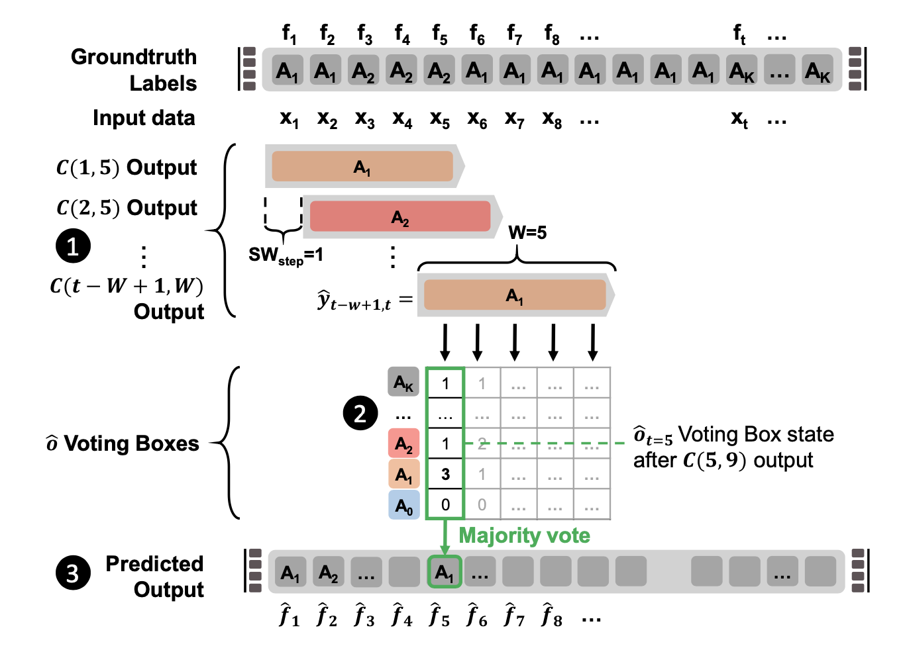
Sliding-window voting scheme from [139]. Each window of length $W$ (stride $SW_{\text{step}}$) yields a class prediction $A_k$. At each time $t$, overlapping windows vote in $\hat{o}_t$, and the final label $\hat{f}_t$ is given by majority vote.
However, we still face issues such as flickering (rapid label changes), fragmentation (split segments for the same action), and merging (different actions fused together) due to overlapping predictions. These artifacts are difficult to eliminate: post-processing with explicit smoothing requires future information (incurring additional delay), or it demands much more complex training schemas, like those defined in [140] or [141].
Following this post-processing technique, we can populate a confidence memory vector, i.e., a stabilized class-probability representation over a fixed long window, which may retain either the full distribution or only the most likely class at each prediction step. This memory vector can then be inspected periodically to log people counts and their corresponding performed actions, enabling the generation of statistical reports.
- Confidence filtering: Once the aggregated prediction at a given instant is obtained, we can apply confidence thresholds to determine whether a predicted action should be considered tentative, confirmed, or ignored.
- Logical constraints: Simple monotonic restrictions can be imposed on the sequence of actions. For example, if we know that a certain action (e.g., lying down) can only occur after others (e.g., bending down, falling), post-processing can be used to enforce such temporal consistency. To this end, the confidence memory vector is analyzed: if a given action remains within the confirmed range for a sufficient portion of recent frames (e.g., 90% of the last 30 frames), the sliding window output for the next instant can be restricted to the subset of actions that can logically follow it. This approach is feasible under the assumption of consistently high top-2/top-3 accuracy, which is indeed observed in our experiments.
- Generation of events: Similar to the previous point, the confidence memory vector can be monitored to detect chains of actions that may trigger an alarm. For instance, a partial persistence of one confirmed action (e.g., falling) followed by another (e.g., lying down) can provide sufficient evidence to raise an alert. Naturally, the number of frames required should be calibrated according to the camera's frame rate and any deliberately skipped frames (i.e., the effective frame rate), while the remaining parameters are best determined empirically during deployment.
Many additional techniques could be applied to support final predictions and event generation, but the trade-off between complexity, latency, and effectiveness must be carefully considered. For example, lying down predictions could be assisted by criteria involving the aspect ratio of bounding boxes under a fixed overhead camera. However, introducing such biases and handcrafted rules often bring additional intricacy and may degrade overall performance. Indeed, logical constraints are conceptually sound but difficult to implement efficiently, and are therefore left for future work, while the remaining techniques have been integrated into the final system described in Chapter 4.
Classifier Development and Evaluation
In this chapter, we conduct a series of experiments aimed at developing an accurate and interpretable classification model, specifically tailored for real-time action recognition in CCTV environments. To this end, we validate and test the final approaches using our CCTVActions dataset , as our goal is to assess the performance of the classifier in this specific context. The Le2iActions dataset is primarily used during the model construction phase (including training and any interim evaluations), as it provides a solid foundation for the actions of interest, although it is not as well adapted to our application scenarios. Nevertheless, we ensure the independence of its test set to provide complementary evidence, although it is not a primary evaluation objective.
Note that this chapter focuses on the development of the classifier itself, which operates on skeleton data as input. Evaluation is performed using the existing annotations provided by the corresponding datasets, without dynamically inferring them from the raw video sequences. Therefore, considerations regarding the entire processing pipeline are beyond the scope of this chapter and will be further discussed in Chapter 4.
The following sections provide a detailed description of each aspect considered in our experimental design.
3.1 Framework and Tools
The experiments described in this chapter have been implemented and executed
using the
MMCV [142] framework from OpenMMLab, a modular library built upon PyTorch [143] that facilitates the development of computer vision workflows.
Specifically, we rely on MMAction2 [144], a toolbox for video understanding,
and more precisely, on its derivative project
PYSKL [145],
which is specialized for skeleton-based action recognition.
This ecosystem provides a flexible yet robust infrastructure for defining
training and evaluation pipelines, allowing experiment configurations
to be specified declaratively via Python-based configuration files.
This design significantly reduces boilerplate code and improves reproducibility.
The experiments were conducted on an on-premise server owned by innovasur, running Ubuntu 22.04.3 LTS, and equipped with an NVIDIA GeForce RTX 3090 GPU (24GB VRAM), which provided substantial computational power and high parallelization capabilities for training and inference. The system also featured an Intel Core i5-13600K processor (14 cores, 20 threads), which was primarily responsible for data loading and preprocessing tasks.
Experiment tracking and results management were conducted using
MLflow [146],
deployed as a dedicated service for centralized monitoring.
It enabled live tracking of training runs, logging of configurations, training logs, and auxiliary visual outputs such as performance plots,
as well as interactive comparison of metrics through a web-based interface (see Figure 24 for an overview).
Some of the collected information was exported in .csv format for further analysis.
Version control for code was handled through GitLab, while model checkpoints and related artifacts were tracked with DVC [147].
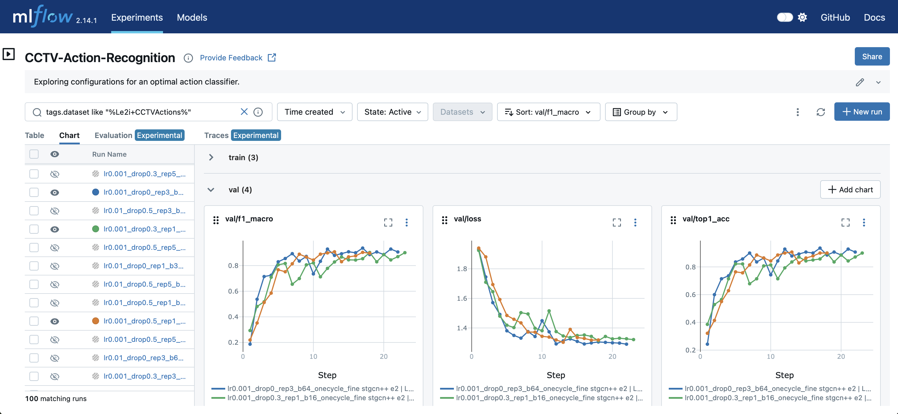
Overview of the MLflow interface for visual comparison of experiment runs.
Runs can be filtered and sorted by various criteria, and logged metrics can be visualized across training steps.
The software environment was carefully curated to ensure compatibility and reproducibility,
using Conda as the package and environment manager.
It includes key dependencies such as Python 3.10, PyTorch 1.12.1 (compiled for CUDA 11.3 and cuDNN 8.3.2),
and MMCV 1.7.0, along with auxiliary libraries like numpy, scipy, opencv-python and matplotlib. It also incorporates captum [148] for explainability assessments.
Some parts of the development and analysis workflow were carried out interactively using Jupyter Notebooks,
which provided a convenient interface for debugging, visualization, and exploratory experimentation.
3.2 Default Setup
Neural network training involves a multitude of hyperparameters and design choices. In order to maintain consistency across experiments and isolate the variables identified as critical to our analysis, we define a default setup that serves as baseline. Unless stated otherwise, the following configurations will be applied:
- Optimizer: Stochastic Gradient Descent (SGD) with Nesterov momentum of 0.9 and weight decay of $5 \times 10^{-4}$, following standard practices in the literature [13] [149] [150]. Gradient clipping is not applied.
- Early stopping: For experiments involving a single validation set,
early stopping is triggered when no improvement is observed
in the validation macro-F1 score over 5 consecutive epochs.
For experiments that use cross-validation, early stopping is deliberately omitted in both of its possible variants: stopping independently within each fold, which would introduce bias in the learning curves by terminating training at different epochs; and stopping based on a global validation criterion, which would break partition independence and introduce information leakage between folds.
- Data preparation: Skeleton keypoint coordinates are first normalized to the range $[-1, 1]$. Crops of 30 consecutive frames are then extracted from each sequence, extended to 40 when working exclusively with Le2iActions. These crops are sampled randomly during training, and deterministically during validation and testing. To enhance variability, Gaussian noise ($\sigma=0.001$) is injected into the keypoints during training. All these steps are described in detail in Section 2.4.
- Pretraining: The models are initialized with weights trained and evaluated on the NTU RGB+D 120 [91] Cross-Subject split (XSub), using HRNet 2D poses extracted directly from the RGB stream
(rather than the original Kinect 3D joints), providing a strong foundation for downstream development.
For each architecture and input feature configuration, a separate pretrained checkpoint is used.
Their performance is reported in Table 5.
Model j b jm bm ST-GCN++ [145] $84.4$ $84.8$ $76.4$ $81.1$ CTR-GCN [132] $82.2$ $84.6$ $82.3$ $82.1$ AAGCN [113] $80.2$ $84.2$ $80.9$ $81.1$ ProtoGCN [113] (\(\ast\)) $85.5$ $89.0$ $83.2$ $83.5$ Top-1 accuracy (%) for the baseline checkpoints described above, each corresponding to a specific architecture and input feature configuration: joint (j), bone (b), joint motion (jm), and bone motion (bm). (\(\ast\)) indicates that all checkpoints for that model were obtained using the original Kinect 3D joints.
- Metrics: At each epoch, we compute the following measures on both the training and validation sets:
- Loss : objective function value that the model seeks to minimize, dependent on the specific model (e.g., cross-entropy).
- Top-1 accuracy : percentage of samples for which the predicted label matches the ground truth.
- Top-2 accuracy : percentage where the correct label is among the two most confident predictions. This metric is especially informative in a 7-class setting, where a good classifier is expected to place the correct label at least in the top two, even if some confusion arises (e.g., between standing and lying down).
-
Macro-F1 score
: balances precision ($\tfrac{TP}{TP+FP}$) and recall ($\tfrac{TP}{TP+FN}$), averaging them equally across classes:
$$ F1_{\text{macro}} = \frac{1}{C} \sum_{c=1}^C \frac{2 \cdot \text{precision}_c \cdot \text{recall}_c}{\text{precision}_c + \text{recall}_c}. $$This prevents majority classes from dominating the evaluation.
- Confusion matrix : records per-class prediction counts, highlighting systematic misclassifications and showing which classes are most often confused.
Some aspects of the setup are inherited directly from the recommendations
and default templates provided by the PYSKL repository,
ensuring alignment with best practices in the domain.
3.3 Experimental Design Factors
We examine several factors that may affect performance in our context:
- Training dynamics, comprising both the training strategy and the associated hyperparameters. The strategy defines how the two datasets are combined to optimize learning, either in a single stage or in two stages (e.g., finetuning (FT), linear probing (LP), or their combinations), always starting from the aforementioned knowledge base. Since optimal hyperparameters such as learning rate or batch size may vary across strategies, as noted in [151], we tune them individually for each approach, before selecting the most promising strategy overall.
- Architecture, i.e., the choice of backbone model. We compare a set of lightweight graph-based architectures, seeking a balance between accuracy and real-time performance.
- Input modality, i.e., the type of skeleton-based features provided to the model. Options include joint coordinates, bone vectors, and motion-based representations, which have been shown to capture complementary aspects of human actions.
- Data augmentations and transformations applied to the input skeletons. These aim to enhance robustness by increasing variability and mitigating dataset limitations.
We consider these four aspects to be sufficiently independent to be studied in isolation. This assumption is supported by prior works that treat model design decisions as separable dimensions for systematic analysis, such as [152] or [153]. While interplay between factors inevitably exists, certain patterns support this particular separation: for example, an adequate set of data augmentations or an improved input representation would generally benefit different architectures in a similar way, and convergence behaviour often depends more on dataset properties than on the specific backbone, unless architectural differences are large enough to alter learning dynamics.
Each aspect is addressed in a dedicated stage, following a design akin to an ablation study, where only the components relevant to that stage are varied while the rest remain fixed. This provides a fair and practical framework for a clean, progressive study, where the configuration selected in each stage is carried forward to the next, and known intra-factor dependencies (e.g., correlations between learning rate and batch size) are explicitly considered. This methodology also avoids a combinatorial explosion in computational requirements which, in practice, may not even lead to the most effective analytical strategy [154].
3.3.1 Training Dynamics
Guided by this staged design, we first focus on training dynamics, since they govern the optimization process and determine the conditions under which later choices will be evaluated.
3.3.1.1 Definition of Training Strategies
- Finetune with a merged dataset. We mix Le2iActions and CCTVActions, so the model jointly learns from both sources. However, validation is performed using exclusively the latter.
- Finetune with Le2iActions, then finetune with CCTVActions. The rationale for this approach is that the first dataset provides a solid idea of the actions to learn, while the second one allows for further specialization in the context of CCTV. This strategy is often discussed within the scope of progressive or multi-stage transfer learning [155] [156].
- Linear probe with Le2iActions, then finetune with CCTVActions. We consider this strategy as relevant, as the literature cites it as the most effective [151] [157] [158].
- Finetune with Le2iActions, then linear probe with CCTVActions. Although it may seem intuitive to first learn a more action-specific representation through finetuning, and then adapt to the deployment-specific dataset by adjusting only a few parameters (specifically the final linear layer), this is not a common practice in transfer learning setups. Nevertheless, we include this strategy in our study and subsequently reflect on it.
1-FT
2-FT
LP-FT
FT-LP
We discard the option of training from scratch, as overfitting would arise due to the relatively small size of our datasets. We also exclude strategies based solely on linear probing, whether in one or two stages, as preliminary experiments showed that features extracted from the pretrained backbone do not adapt sufficiently to our task, requiring a greater degree of adjustment, as expected. Other strategies, such as integrating LP and FT in a single stage [159] or selectively freezing a subset of layers [160] or are also overlooked for simplicity.
3.3.1.2 General Hyperparameter Settings
Standard hyperparameters used for tuning neural networks, such as learning rate or batch size, are crucial for achieving optimal performance. Their selection is typically performed through trial and error, or by adopting default values from the literature. However, the appropriate choice may depend on the specific task, and in our case the most suitable values are unclear due to the particularities of the problem. Given that we have constructed datasets of limited size and our architectures are lightweight, computation times are relatively short. Therefore, we can afford to perform a grid search over some of these hyperparameters to find a reasonable configuration for our models at different training stages.
The relevant hyperparameters considered in this study, along with their corresponding ranges, are:
- Base learning rate (LR): $\{10^{-2},\ 10^{-3},\ 10^{-4}\}$.
This hyperparameter controls the optimiser's step size at each update. The selected values span two orders of magnitude, allowing exploration of both fast and conservative training regimes: higher rates may speed up convergence but risk instability, while lower ones favour stable but slower updates.
- Learning rate scheduler policy:
{ Fixed with warmup, One Cycle, Reduce On Plateau }.
These strategies adjust the learning rate dynamically during every training iteration. See Figure 25 for a visual comparison.
- Fixed with warmup: brief linear warmup (3 epochs starting at 1% of the target LR) to stabilize early updates [161], increasing to the base LR and keeping it constant thereafter.
- One Cycle: LR rises to the base value at epoch 3, then cosine-anneals to a much smaller value until epoch 20 (beyond that point, it remains fixed); initial and final LR are \(1/100\) and \(1/1000\) of the peak, respectively. This policy is closely linked to super-convergence [162], enabling fast and robust training within fewer epochs.
- Reduce On Plateau: LR remains fixed at the base value unless validation macro-F1 stalls, then it is halved after 2 stagnant epochs, allowing longer plateaus when useful and adaptively lowering LR as learning saturates.
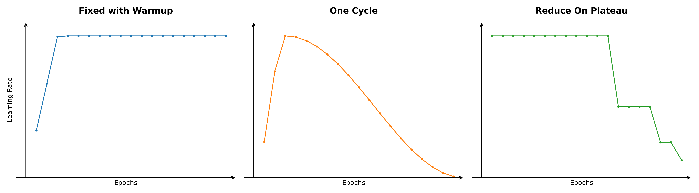
Comparison of learning-rate schedules. The curves were obtained from real training runs, with per-epoch logging, which explains the minor irregularities.
- Batch size: $\{16,\ 32,\ 64\}$.
We study how these widely used values influence convergence behaviour, with particular focus on their effect over gradient estimation and training stability.
- Dataset repetitions: $\{1,3,5\}$.
Repeating the dataset $r$ times multiplies the number of optimisation steps per epoch by $r$ while keeping the batch size fixed, yielding $r$ stochastically augmented views of each sample per epoch. This is related to batch augmentation [163]: whereas batch augmentation duplicates views within a mini-batch, repetitions distribute them across iterations, sometimes placing multiple views in the same batch due to shuffling, lengthening the epoch and (with epoch-based schedulers) altering the effect of the LR schedule. We include this factor to quantify how extra exposure and scheduler interactions affect convergence and generalisation in low-data regimes.
- Dropout: $\{0,\ 0.3,\ 0.5\}$.
The range spans from no regularisation to moderate standard values [164]. For non-zero values, dropout deactivates neurons during training, which can promote redundancy in representations and reduce co-adaptation, thus potentially improving model robustness.
Although incorporating cross-validation to improve the robustness of our results would be feasible, we simplify the procedure since this study is merely exploratory, fixing a randomly chosen fold as the validation set. Ultimately, our goal is to determine an effective set of hyperparameters for training, but we do not require fine-grained results to identify an adequate configuration. We recognize that noise and randomness inevitably affect outcomes, so we focus on general trends in the behaviour of individual factors or their combinations, rather than on exact values, and let our observations guide the analysis. Throughout this process, some of the factors may be deemed settled with appropriate justification, allowing their values to be fixed and omitted from further analysis.
As stated earlier, we will carry out a separate study for each of the training strategies defined in Subsection 3.3.1, considering the different stages within each case, as they might present distinct convergence patterns. To ensure a fair comparison, the rest of the experimental setup is fixed, assuming these factors have limited impact on training dynamics, particularly on the pace and stability of convergence across epochs. Alongside the default setup described in Section 3.2, we adopt ST-GCN++ [145] as the graph convolutional backbone, using the cross-entropy loss and feeding it directly with joint-level inputs (2D coordinates together with visibility indicators for each keypoint). Thus, for each strategy, the model will always be initialized from the same pretrained checkpoint, whose performance is shown in Table 5. No additional augmentations or transformations are applied. This setup serves as a neutral and representative baseline for comparing training strategies in isolation.
In Table 6, we present statistics from the grid search process, with results broken down by training strategy and stage. Notation for each stage is determined as follows: FT = finetune; LP = linear probing; subscripts indicate the dataset(s) used ($_{[1]}$ for Le2iActions, $_{[2]}$ for CCTVActions, and $_{[1,2]}$ for both). The first stage is identical for 2-FT and FT-LP (denoted FT$_{[1]}$), as both finetune on Le2iActions from the same pretrained checkpoint, so we run it once; all other stages are evaluated independently. FT$_{[2]}$ and $\mathrm{FT'}_{[2]}$ both finetune on CCTVActions but start from checkpoints that encode knowledge from Le2iActions differently, so their training dynamics are studied separately.
| 1-FT | 2-FT | LP-FT | FT-LP | ||||
|---|---|---|---|---|---|---|---|
| Metric | FT$_{[1,2]}$ | FT$_{[1]}$ | FT$_{[2]}$ | LP$_{[1]}$ | FT'$_{[2]}$ | FT$_{[1]}$ | LP$_{[2]}$ |
| # Factors | \(5\) | \(4\) | $4$ | \(4\) | \(4\) | \(4\) | \(4\) |
| Grid size | \(243\) | \(81\) | $81$ | \(81\) | \(81\) | \(81\) | \(81\) |
| Peak epoch – mean | \(14.12\) | $13.14$ | $9.70$ | $12.84$ | $11.12$ | $13.14$ | $9.01$ |
| Peak epoch – median | \(13\) | $13$ | $9$ | $14$ | $11$ | $13$ | $8$ |
| Peak epoch – std | $8.56$ | $5.70$ | $4.88$ | $5.83$ | $4.97$ | $5.70$ | $4.98$ |
| Runtime – mean | \(4m\,26s\) | \(3m\,37s\) | \(2m\,55s\) | \(3m\,13s\) | \(3m\,51s\) | \(3m\,37s\) | \(2m\,38s\) |
| Runtime – median | \(4m\,07s\) | \(3m\,36s\) | \(2m\,45s\) | \(3m\,20s\) | \(3m\,45s\) | \(3m\,36s\) | \(2m\,25s\) |
| Runtime — std | \(1m\,45s\) | \(1m\,06s\) | \(0m\,56s\) | \(1m\,01s\) | \(1m\,13s\) | \(1m\,06s\) | \(0m\,58s\) |
| Total compute time | \(17h\,59m\) | \(4h\,53m\) | \(3h\,57m\) | \(4h\,21m\) | \(5h\,12m\) | \(4h\,53m\) | \(3h\,33m\) |
Grid search statistics by training strategy (columns) and stage (subcolumns).
The total runtime for all experiments in this study is approximately 40 hours for 648 training runs, a remarkably reasonable figure attributed to the use of lightweight, compact skeleton-based data. We may also note that:
- Average runtimes per epoch in stages involving only a single dataset are shorter than in 1-FT, which processes both datasets jointly, owing to a lower mean number of parameter updates per epoch. However, considering the data volume in each case and the average runtimes, it can be inferred that run initializations are also a relatively time-consuming step.
- Linear probing is slightly faster than finetuning on average, as each epoch is shorter given that a large portion of the parameters remain unchanged.
- Thanks to stronger initialization, second-stage runs after initial finetuning converge in fewer epochs and finish faster than the rest.
- The large standard deviations in the peak epoch metric, representing the epochs at which the models achieved their best validation macro-F1 scores before early stopping was applied, reveal substantial variability in convergence across hyperparameter combinations.
We now discuss and select the hyperparameter configurations for each case. For a concise report of the decisions made, see Table 8.
1-FT
We begin by examining the trends in hyperparameters for the 1-FT strategy. An analysis of the boxplots for maximum validation macro-F1 scores, and the number of epochs required to reach them for each individual hyperparameter indicates that the learning rate (LR), when considered in isolation, is the most influential factor. As shown in Figure 26, a learning rate of $10^{-3}$ generally yields better results and tends to reach its peak earlier. In contrast, instability is observed in the form of outlier runs when using $10^{-2}$, likely due to divergence from excessively large updates, and especially with $10^{-4}$, which is consistent with slower training progress. These effects are illustrated on the left panel of Figure 27.
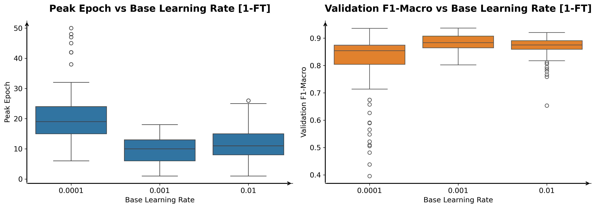
Effect of learning rate on peak epoch (left) and maximum validation macro-F1 score (right) for the 1-FT strategy, illustrating its strong influence on both convergence speed and final performance.
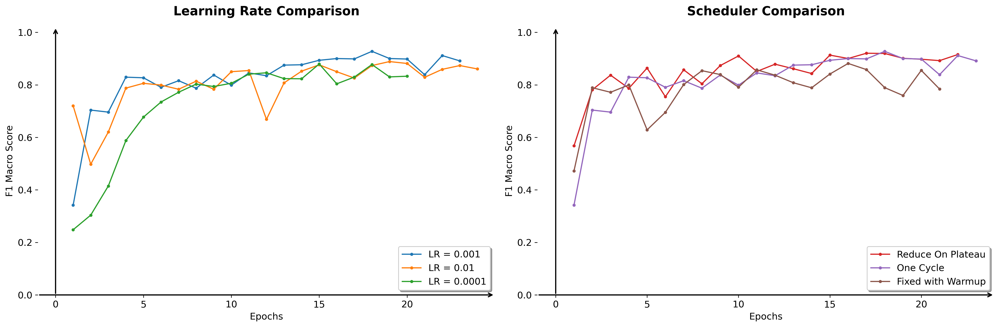
Per-epoch validation macro-F$_1$ score from independent comparisons of learning rates (left) and LR schedulers (right) using 1-FT strategy, with all other settings held constant in each case to ensure a fair evaluation. The highest learning rate tends to cause instability due to more aggressive updates, while the lowest rate leads to underfitting. Instability, and possibly underfitting, are also associated with the Fixed LR policy, whereas One Cycle provides a smoother adaptation.
Nevertheless, it is clear that factors such as the learning rate, the batch size and dataset repetitions strongly interact with each other, as they influence the number of times that the model is updated per epoch, and therefore the effective learning rate [165]. Let us consider the impact of these factors alltogether over the maximum validation macro-F1 score reached, as shown in Figure 28.
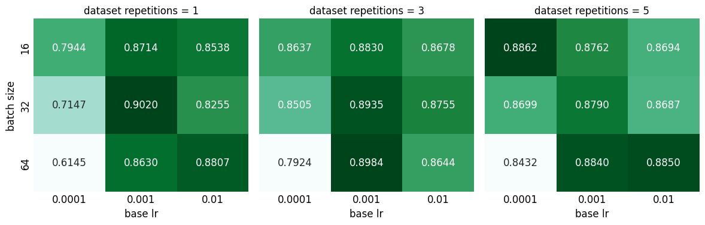
Mean validation macro-F$_1$ score for each combination of learning rate, batch size, and number of dataset repetitions, for 1-FT training strategy.
We observe that increasing the number of dataset repetitions generally improves performance, particularly at the lowest base learning rate, and leads to more robust runs, with reduced dispersion and fewer extreme outliers. In line with this trend, the number of repetitions shows the strongest correlation with validation macro-F1 (Pearson $r = 0.29$). Overall, a learning rate of $10^{-3}$ with a batch size of 32 proves consistently strong and stable. Notably, at higher repetition counts, a smaller base learning rate ($10^{-4}$) becomes competitive, especially with smaller batches, which is consistent with the higher effective LR induced by more updates per epoch. Nevertheless, we adopt a conservative configuration of 5 dataset repetitions with LR $10^{-3}$ and batch size 32 to balance accuracy and stability.
No clear trends were observed for dropout or the learning rate scheduler. We set the dropout rate to $0.5$ as a precaution to mitigate potential overfitting from the 5 repetitions. For the scheduler, we select the One Cycle policy, given its strong theoretical grounding. All three tested schedulers performed similarly overall; however, the Fixed scheduler, while simple, proved prone to erratic convergence. Reduce On Plateau, although generally practical, explicitly requires a validation set for monitoring. Given the minimal performance differences, we avoid using it to prevent undue reliance on validation-based criteria. The right panel of Figure 27 presents a comparison of convergence across schedulers. Based on the strength of this evidence, we retain the selected LR scheduler for all subsequent experiments, thereby removing this factor from further consideration.
Thus, the final configuration for this one-stage strategy is:
| FT$_{[1,2]}$ | LR: $10^{-3}$ | Batch size: 32 | Dataset rep.: 5 | Dropout: 0.5 | LR scheduler: One Cycle. |
The selected configuration ranked 14th in the grid search, as noted in Table 8. Although not the absolute best, our aim was to identify global trends and establish robust hyperparameter values, rather than select the single highest-scoring run, since differences in random seeds or the small validation set could introduce inconsistencies.
2-FT
From this point onward, only four factors are considered, as the One Cycle LR policy has already been established. In the first stage of 2-FT (referred to as FT$_{[1]}$), the relationship between learning rate and batch size, shown on the left side of Figure 29, highlights the consistently superior performance of the highest base LR ($10^{-2}$) across all batch sizes. All metrics are reported with respect to Le2iActions in FT$_{[1]}$ (and same for LP$_{[1]}$ later).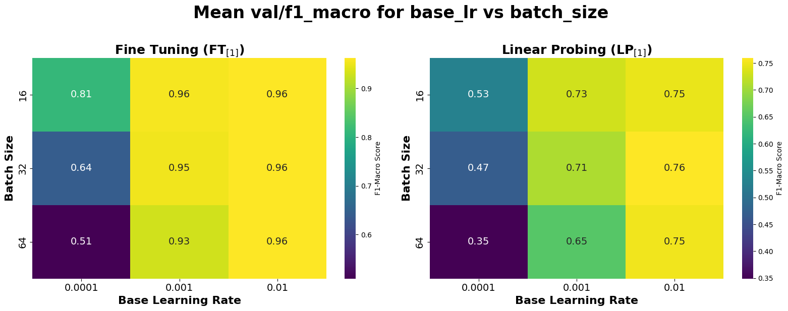
Mean peak validation macro-F$_1$ for FT$_{[1]}$ (left) and LP$_{[1]}$ (right), illustrating the trade-off between learning rate and batch size.
A similar analysis comparing LR and dropout likewise favored the highest LR, while revealing no substantial differences across dropout rates. Increasing the number of dataset repetitions generally yielded a modest gain and improved convergence stability, as shown in Figure 30. When the number of repetitions is sufficient, we observed that runs using this high LR are consistently more stable than in 1-FT. This can be explained by the fact that, when the training dataset is roughly half the size of that in 1-FT, the training dynamics change due to both the reduced number of updates per epoch and the resulting effective learning rate, as noted earlier.
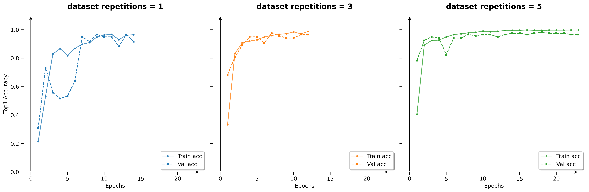
Comparison of train and validation top-1 accuracy for three different runs of FT$_{[1]}$ with varying numbers of dataset repetitions, while keeping the rest of the setup fixed.
Based on these observations, we adopt safe settings, resulting in the following configuration:
| FT$_{[1]}$ | LR: $10^{-2}$ | Batch size: 32 | Dataset rep.: 3 | Dropout: 0.3 | LR scheduler: One Cycle. |
We select the checkpoint with the highest validation macro-F$1$ score for the chosen configuration, with performance reported in Table 8, as a strong starting point for the next stage. This approach entails accepting that a good checkpoint for Le2iActions can still provide a reliable basis for subsequent training, even if the original pretrained knowledge may have been substantially overridden in the process.
For FT$_{[2]}$, we choose a learning rate of $10^{-3}$, following a similar analysis to previous stages. Table 7 summarizes the top-5 configurations in terms of validation macro-F1 within our FT$_{[2]}$ experiments. All of them share an LR of $10^{-3}$ and at least three dataset repetitions. In fact, 14 out of the top 20 configurations used this LR, 15 out of 20 included at least 3 dataset repetitions, and 10 out of 20 combined both features, indicating a clear trend.
| Base LR | Batch Size | Dataset Rep. | Dropout | Peak Epoch | Val. F1 | |
|---|---|---|---|---|---|---|
| $0.0010$ | $64$ | $5$ | $0.5$ | $7$ | $0.9149$ | |
| $0.0010$ | $64$ | $3$ | $0.3$ | $11$ | $0.9140$ | |
| $0.0010$ | $16$ | $5$ | $0.5$ | $9$ | $0.9082$ | |
| $0.0010$ | $32$ | $5$ | $0.5$ | $13$ | $0.9081$ | |
| $0.0010$ | $32$ | $3$ | $0.3$ | $11$ | $0.9071$ |
Top-5 configurations from the FT$_{[2]}$ grid search, ranked by validation macro-F1, with corresponding peak epochs.
For the final setup, we also select $5$ repetitions, a batch size of $64$ and a dropout rate of $0.5$, seeking a reduction on the effective learning rate and to mitigate overfitting:
| FT$_{[2]}$ | LR: $10^{-3}$ | Batch size: 64 | Dataset rep.: 5 | Dropout: 0.5 | LR scheduler: One Cycle. |
However, performance dispersion was low in the grid search: over 85% of runs reached a validation macro-F1 above $0.85$, and over 50% exceeded $0.89$. Given the strong initialization from FT$_{[1]}$, many configurations would have been viable. The left panel of Figure 31 shows the performance distribution across all runs of FT$_{[2]}$ stage.
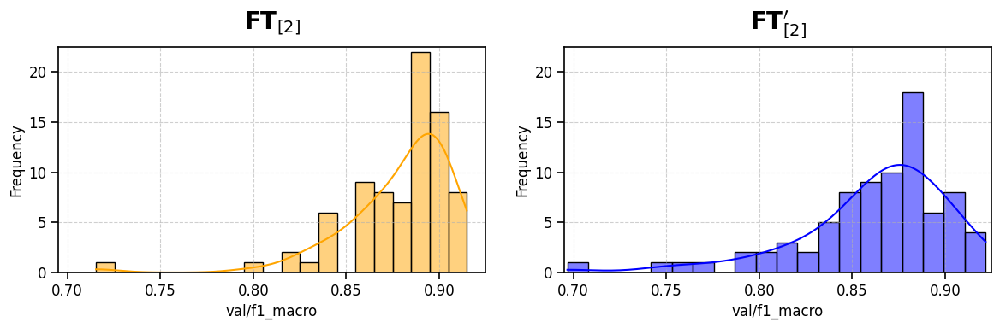
Distribution of validation macro-F1 scores across all grid search runs for the FT$_{[2]}$ stage (left) and the $\mathrm{FT'}_{[2]}$ stage (right).
LP-FT
Starting from LP$_{[1]}$, we observe a similar pattern regarding the relevance of the learning rate. Similarly to FT$_{[1]}$, $10^{-2}$ consistently yields the best average performance across all batch sizes, as shown in the right panel of Figure 29. The same holds for every dropout rate and dataset repetition count, so we maintain the same configuration:
| LP$_{[1]}$ | LR: $10^{-2}$ | Batch size: 32 | Dataset rep.: 3 | Dropout: 0.3 | LR scheduler: One Cycle. |
Following the idea that the linear layer benefits from higher learning rates [166], we conducted additional experiments with values $5 \times 10^{-2}$ and $10^{-1}$, keeping the rest of the setup fixed. These settings caused the model to peak too early, entering a noisy convergence regime, which is why we retained $10^{-2}$.
It is worth noting that the mean performance for Le2iActions drops slightly compared to FT$_{[1]}$. However, this is not a concern, as the sole objective at this stage is to provide an adapted linear layer for the next step.
For $\mathrm{FT'}_{[2]}$, we observe in Figure 31 (right panel) that the performance distribution remains similar to FT$_{[2]}$, although slightly shifted towards lower scores. This can be attributed to the lighter initialization, which requires more careful hyperparameter tuning to maximize performance. Even so, several configurations would have been acceptable; however, a learning rate of $10^{-3}$ consistently outperformed the others. Accordingly, we retain the same configuration as in FT$_{[2]}$, given its strong performance in this stage as well, and in line with the previous discussion:
| FT'$_{[2]}$ | LR: $10^{-3}$ | Batch size: 64 | Dataset rep.: 5 | Dropout: 0.5 | LR scheduler: One Cycle. |
FT-LP
FT$_{[1]}$ configuration was already set, so we analyze results for LP$_{[2]}$, starting from the corresponding checkpoint.
A thorough analysis of LP$_{[2]}$ runs highlighted the learning rate as the factor with the strongest impact, showing a Pearson correlation of $r = 0.53$ with the validation macro-F1 score. Consistent with previous observations, the highest LR ($10^{-2}$) outperformed the others, although $10^{-3}$ also proved competitive. The remaining configuration was chosen to mirror FT$_{[2]}$ and $\mathrm{FT'}_{[2]}$, ensuring that every augmentation is applied aggressively per epoch, while maintaining a balance between overfitting prevention and the updates-per-epoch trade-off:
| LP$_{[2]}$ | LR: $10^{-2}$ | Batch size: 64 | Dataset rep.: 5 | Dropout: 0.5 | LR scheduler: One Cycle. |
3.3.1.3 Selection of a Training Scheme
In summary, learning rate, batch size, and dataset repetitions showed the strongest association with performance, often interacting with each other. These observations provide a clearer understanding of the role of each stage and training strategy. We selected robust values for these hyperparameters through a systematic, data-driven analysis, documenting their effects and justifying the choices empirically rather than relying on rules of thumb. By contrast, dropout and the LR scheduler showed no consistent influence, so their final settings were primarily guided by theoretical considerations and simple heuristics. Table 8 summarizes the performance of the configurations retained in the grid search for each stage.
| Stage | LR | Batch | Rep. | Dropout | Rank | Epoch (peak) | Macro-F1 | Top-1 | Top-2 |
|---|---|---|---|---|---|---|---|---|---|
| FT$_{[1,2]}$ | $10^{-3}$ | 32 | 5 | 0.5 | 14 | 17 | $0.9143$ | $0.9142$ | $0.9642$ |
| FT$_{[1]}$ | $10^{-2}$ | 32 | 3 | 0.3 | 2 | 15 | $0.9875$ | $0.9916$ | $1.0000$ |
| FT$_{[2]}$ | $10^{-3}$ | 64 | 5 | 0.5 | 1 | 7 | $0.9149$ | $0.9142$ | $0.9857$ |
| LP$_{[1]}$ | $10^{-2}$ | 32 | 3 | 0.3 | 2 | 20 | $0.7787$ | $0.8083$ | $0.9333$ |
| FT'$_{[2]}$ | $10^{-3}$ | 64 | 5 | 0.5 | 9 | 6 | $0.9055$ | $0.9071$ | $0.9785$ |
| LP$_{[2]}$ | $10^{-2}$ | 64 | 5 | 0.5 | 28 | 5 | $0.7708$ | $0.7714$ | $0.9142$ |
Summary of the hyperparameters retained for each training stage in the experimental analysis of Subsection 3.3.1.2. All configurations include the One Cycle LR scheduler. The table reports the performance metrics, peak epoch, and rank obtained in that experiment for each configuration. Rows highlighted in gray indicate the configurations and results associated with the CCTVActions dataset.
Although some conclusions could already be drawn at this point, we proceed more rigorously by selecting the overall training scheme through stratified 5-fold cross-validation. For two-stage approaches, the procedure in each fold is as follows: the best checkpoint from the first stage is automatically used to initialize the second stage within the same fold, ensuring a consistent evaluation pipeline.
The number of training epochs per stage was determined from the peak epochs observed in the selected configurations, choosing values sufficient to ensure stable performance without incurring unnecessary computation. FT$_{[1,2]}$ converged within 17 epochs and FT$_{[1]}$ within 15, whereas LP$_{[1]}$ peaked at 20 despite its curve flattening much earlier; therefore, we retain 20 epochs as a safe margin for first-stage runs. In contrast, FT$_{[2]}$, $\mathrm{FT'}_{[2]}$, and LP$_{[2]}$ peaked at 7, 6, and 5 epochs, respectively; accordingly, we cap the second stage at 10 epochs. Consequently, two-stage strategies (2-FT, FT-LP, and LP-FT) are trained for a total of 30 epochs, whereas 1-FT requires only 20 epochs per fold.
After standardizing the comparison procedure, we analyze the different training schemes through their respective learning curves, as shown in Figure 32.
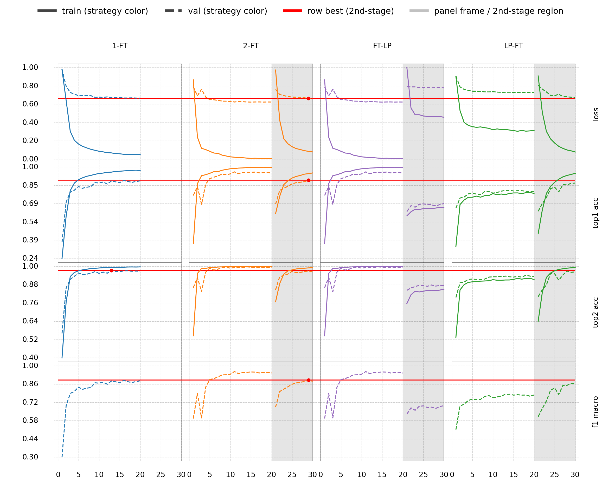
Comparison of training strategies across four scenarios (1-FT, 2-FT, FT-LP, LP-FT) and four metrics (loss, Top-1/Top-2 accuracy, macro-F1), evaluated on different datasets depending on the stage. Loss is shown in the range $[0,1]$, normalized by the global maximum across all strategies, phases, and splits, while the other metrics take the global minimum value as the lower bound and $1$ as the upper bound. Shaded regions indicate the second stage of a strategy, solid lines correspond to training and dashed lines to validation metrics. The red line marks the best performance achieved on CCTVActions for each metric across strategies, with a dot marking the corresponding epoch.
These cross-validated curves contain rich information that allows us to derive meaningful insights:
- The 2-FT strategy achieves the highest average macro-F1 across folds ($0.8910$), as well as the best top-1 accuracy on the CCTVActions validation set. Nonetheless, the peak performance of 1-FT is nearly identical ($0.8885$), while also attaining the maximum top-2 accuracy.
- Although LP$_{[1]}$ shows limited adaptation to Le2iActions, $\mathrm{FT'}_{[2]}$ compensates for this and makes LP-FT competitive with 1-FT and 2-FT, reaching a validation macro-F1 of $0.8640$. This is promising, as the backbone does not encode any information about Le2iActions but merely provides an initialization for the linear layer. Hence, this finding is consistent with what has been reported in the literature.
- FT-LP is the least effective strategy, with a peak validation macro-F1 of only $0.6946$. As expected, this approach produces backbone representations for Le2iActions that are not sufficiently general to be effectively leveraged by a linear layer for proper adaptation to CCTVActions. No meaningful validation or even training improvements are observed for FT-LP across the second-stage epochs.
- In terms of convergence stability, the comparison between training and validation metrics appears healthier for the 1-FT strategy. In contrast, two-stage approaches exhibit greater instability and, for both Le2iActions and CCTVActions validation sets, they tend to reach higher values earlier but show limited subsequent improvement.
- In particular, second-stage runs reach their peak values towards the end of training, although the curves already exhibit a clear plateau.
With all of this in mind, and considering the two best-performing strategies overall (1-FT and 2-FT), we select 1-FT as our final training scheme, since it is simpler, faster, and achieves nearly identical performance to 2-FT. Furthermore, we argue that the 2-FT strategy may override too much of the knowledge from Le2iActions during FT$_{[2]}$, reducing its capability and potentially leading to overfitting, given that the checkpoint from Le2iActions merely serves as an initialization before generating abstractions for CCTVActions. By contrast, 1-FT must balance both datasets from the beginning, which may encourage the learned abstractions to be more general and robust.
3.3.2 Architecture
Now, we turn to the choice of graph convolutional architecture while keeping the setup established so far fixed. We evaluate four representative models, characterized as follows:
- ST-GCN++ [145]: improved ST-GCN [24] with multi-scale temporal modules and residual connections, widely adopted as a strong baseline.
- CTR-GCN [132]: introduces channel-wise topology refinement, dynamically learning correlations per channel and sample, achieving state-of-the-art results on large benchmarks.
- AAGCN [113]: employs attention-based adaptive adjacency matrices to capture action-dependent correlations beyond fixed skeleton topology.
- ProtoGCN [41]: a very recent approach that leverages prototype-based representations to align skeleton embeddings with action prototypes, enhancing generalization in low-data or fine-grained scenarios, and clearly achieving the best results on NTU RGB+D (60/120) and Kinetics-Skeleton (see Table 1) to date.
| ST-GCN++ | CTR-GCN | AAGCN | ProtoGCN | |
|---|---|---|---|---|
| Parameters | 1,379,395 | 1,422,773 | 3,746,505 | 4,076,463 |
Number of parameters for each evaluated model. The model with the least parameters is highlighted in bold.
For this study, we present the cross-validation macro-F1 learning curves of the first three models, shown on the left-hand side of Figure 33. For ProtoGCN, however, despite being the most complex and carefully designed model, its results were initially rather poor with the default configuration. Since its pretrained checkpoint had been obtained from 3D joints, we hypothesized that it was suboptimal for 2D joint coordinates and therefore required further overriding. To address this, we slightly increased the learning rate, eventually raising it up to $5\times10^{-3}$, while noting that $10^{-2}$ would also constitute a safe choice, as guided by the macro-F1 curves in the right-hand side of Figure 33.
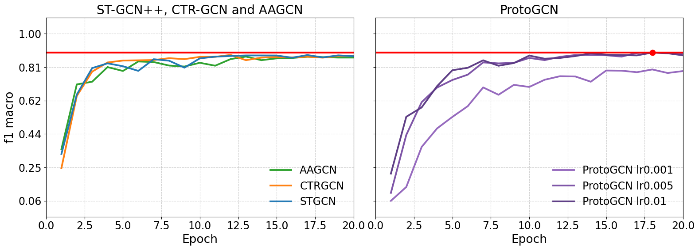
Average validation F1-macro vs. epoch. Left: ST-GCN++, CTR-GCN, AAGCN; right: ProtoGCN (LR=$10^{-3}$, $5\times10^{-3}$, $10^{-2}$). Red line and dot mark the global best.
Cross-validation results for ProtoGCN showed a slightly higher peak performance ($0.8950$) compared to the other models. However, CTR-GCN ranked second with a very competitive score of $0.8806$, while requiring only about one third of the parameters. The remaining models exhibited very similar convergence behaviours and attained comparable results. We are aware that, given a 2D joint-based checkpoint for ProtoGCN, its performance could achieve a substantial improvement. Nevertheless, under the current circumstances we choose to retain CTR-GCN as our final architecture, since it delivers strong performance while being considerably lighter, which is advantageous for real-time deployment.
3.3.3 Input Modality
The next step is to define the input modality, or feature representation, to be used. We compare the alternatives introduced in Subsection 2.4.6, namely joint, bone, joint motion, bone motion, and our own proposal, geometric bone. The corresponding checkpoints for CTR-GCN listed in Table 5 are utilized, while geometric bone relies on the bone-based checkpoint given their proximity.Once again, we only report in Figure 34 the cross-validation macro-F1 learning curves, as this is the most representative validation metric, and the trade-off with training remains the same across all cases and metrics.
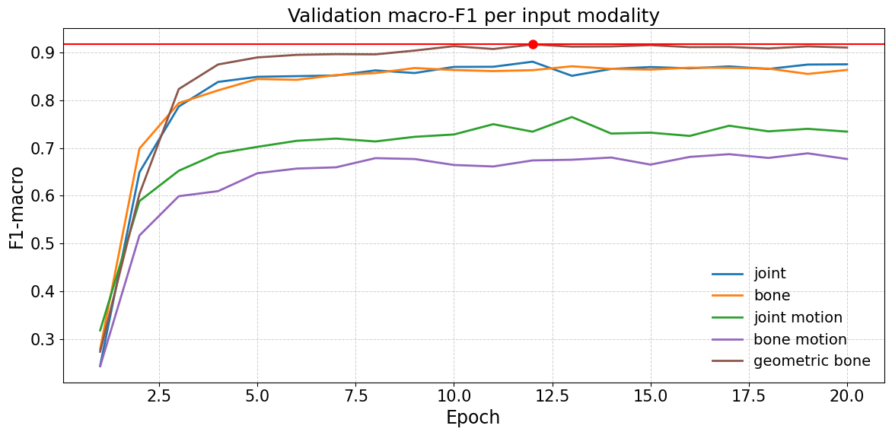
Cross-validation macro-F1 learning curves for the different input modalities. The red line indicates the top performance, obtained by geometric bone, and reached in epoch 12, as highlighted by the dot.
Clear differences can be observed across modalities, which can be organized into four tiers. Bone motion yields the weakest performance, followed by joint motion; joint and bone achieve similar results in the next tier; and geometric bone stands out as the best option, reaching a mean validation macro-F1 of $0.9167$, an improvement of about $4\%$ over the preceding tier.
In particular, representations that rely exclusively on temporal cues perform worse, as they lack discriminative power for static postures (sitting, getting up, and bending down), as shown in Table 10. All modalities perform reasonably well on non-static actions and consistently better than on static ones, yet geometric bone provides the best overall balance, mainly because it encodes angular information, which is crucial for distinguishing between such postures. Hence, our theoretical considerations on the strengths and weaknesses of each modality are fully aligned with the empirical results.
| Static | Non-static | |||||
|---|---|---|---|---|---|---|
| Modality | Precision | Recall | F1 | Precision | Recall | F1 |
| Joint | 0.8064 | 0.8146 | 0.8050 | 0.9736 | 0.9512 | 0.9615 |
| Bone | 0.8162 | 0.8508 | 0.8279 | 0.9536 | 0.9090 | 0.9277 |
| Joint motion | 0.5914 | 0.5306 | 0.5255 | 0.9606 | 0.9585 | 0.9585 |
| Bone motion | 0.5472 | 0.4516 | 0.4068 | 0.9429 | 0.9044 | 0.9216 |
| Geom. bones | 0.8984 | 0.9373 | 0.9153 | 0.9669 | 0.9286 | 0.9458 |
Average precision, recall, and F1-scores for static and non-static actions across the best checkpoints obtained for different input modalities. The highest value in each column is shown in bold.
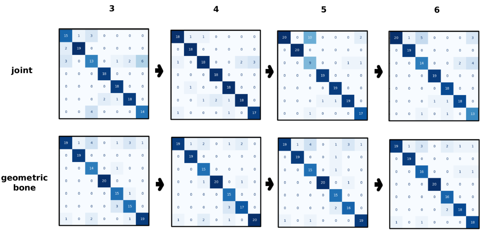
Evolution of the confusion matrices across epochs 3, 4, 5, and 6. The top row corresponds to a training run with the joint input modality, while the bottom row corresponds to geometric bone. A single partition is shown. Columns denote predicted classes and rows denote ground truth, ordered as standing, walking, sitting, falling, getting up, bending down, and lying down.
Overall, we conclude that geometric bone is the most suitable representation for our task. This representation effectively removes variability due to scale and translation, so the factors of variability illustrated in Figure 15 would not have been required for training, although they remain useful for evaluating invariance. Its clear superiority is particularly remarkable given that no pretrained checkpoint was specifically available for this modality: it was nevertheless able to leverage the bone checkpoint, which is virtually the same representation except for the use of Euclidean versus polar coordinates. Further improvements could likely be achieved by pretraining directly on this representation.
We could also have explored stacking multiple representations as different input channels. However, this would require either alternative architectures or substantial adaptations of the current one, in addition to the lack of closely related pretrained checkpoints for such a setting. Moreover, the existing literature predominantly relies on inference-time ensembles instead [40] [113].
3.3.4 Data Augmentation
Finally, we assess the impact of data augmentation. The training baseline already incorporates simple augmentations such as padding, truncation, and Gaussian noise. Scaling and translation variability are effectively eliminated by the geometric bone representation. Orientation, by contrast, is explicitly exploited by this representation, and artificially altering it may be detrimental, since global orientations are already implicitly encoded in the CCTVActions dataset, as the cameras record from an overhead, fixed-angle, CCTV-like perspective, which is inherent to our target application.Therefore, we focus on evaluating the effect of the Structured Joint Dropout transformation (see Subsection 2.4.5) under different settings, which encourages resilience to occlusions and pose estimation failures, and is expected to induce the network to genuinely learn the underlying motion patterns across different contexts. Four settings are considered, varying the parameters of infection decay $\delta$ (which controls the likelihood of larger zones being eliminated), skipping probability $p_{\text{skip}}$ (which determines the proportion of augmented samples per epoch), and temporal masking $p_{\text{frame}}$ (which specifies the probability of masking individual frames within each sequence):
- Low: $\delta=0.25$; $p_{\text{skip}}=0.7$; $p_{\text{frame}}=0.4$
- Medium: $\delta=0.5$; $p_{\text{skip}}=0.6$; $p_{\text{frame}}=0.6$
- High: $\delta=0.75$; $p_{\text{skip}}=0.5$; $p_{\text{frame}}=0.8$
- Very High: $\delta=1$; $p_{\text{skip}}=0.4$; $p_{\text{frame}}=1$
In this case, we present in Figure 36 the cross-validation top-1 accuracy learning curves, for the training (left) and validation (right) cross-validated sets.
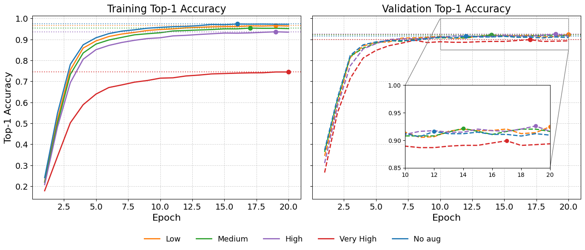
Training (left) and validation (right) top-1 accuracy learning curves under different Structured Joint Dropout settings. Dots and dotted horizontal lines indicate the maximum accuracy reached for each configuration. A zoom-in on the last epochs of the validation curves is included the performance attained in the last epochs.
On the validation side, the model appears to require slightly more epochs to converge as the intensity of joint elimination increases, although the values attained towards the final epochs are largely comparable across configurations. In the training curves, it is evident that higher levels of joint removal lead the metrics to reach a plateau earlier. This is a desirable effect: increased data variability makes the training process more challenging, rendering the model less prone to overfitting. This effect is particularly pronounced in the Very High setting. However, under this most aggressive configuration the model fails to reach the same performance on the validation set, due to the severity of the dropout, which is designed to eliminate larger zones and affects roughly $60\%$ of the samples. In addition, we argue that this setting may be suboptimal, as eliminating keypoints across all skeletons in each sample of each sample through $p_{\text{frame}}=1$ does not realistically capture the per-frame uncertainty of pose estimation, which in turn can lead to unnatural “blinking keypoints” in real scenarios.
Thus, we choose to retain the High Structured Joint Dropout configuration, as it provides a good balance while effectively reducing overfitting (even achieving the highest validation top-1 accuracy). It is also plausible that, given additional epochs in the final model training stage, this setting could achieve further performance gains. The relatively high number of dataset repetitions (5) further reinforces the effect of data augmentation, as it exposes the model to diverse augmented samples in every epoch, which in turn positively influences convergence.
3.4 Training a Final Model
After selecting the most suitable configuration for our problem through cross-validation, and justifying each design choice with both empirical and theoretical arguments, we proceed to the final training stage to obtain the best possible model instance.
For this purpose, we fix one of the partitions from CCTVActions previously used in cross-validation and designate it as the validation set for the final training. This results in approximately $67\%$ of the CCTVActions dataset being used for training, given the 85:15 train/test split combined with 5-fold partitioning; in the case of Le2iActions, $85\%$ of the dataset is used, since its entire training split is employed at this stage.
Other alternatives could have been considered, such as holding out a dedicated validation set from CCTVActions from the beginning (in addition to the test set), or using its entire 85% training split without any validation set. However, the safest strategy to avoid overfitting is to retain a validation set from the CCTVActions folds and apply early stopping based on validation macro-F1, selecting the model checkpoint that performs best on validation (provided its performance remains consistent with training metrics), even though this approach sacrifices the opportunity to fully exploit the data for learning.
3.4.1 Combined Datasets
Following the insights from the architecture selection stage (Subsection 3.3.2), where ProtoGCN delivered the best performance but required a higher learning rate due to the absence of a suitable pretrained checkpoint, we adopt the same strategy here. Although the geometric bone representation achieved the best overall results among the different input modalities, its initial checkpoint was not fully adequate. We therefore compare the selected configuration with learning rates of $10^{-2}$, $5 \times 10^{-3}$, and $10^{-3}$, as shown in Figure 37, reporting training and validation top-1 accuracy, to see if more learning capacity can be squeezed out of the model. Although top-1 accuracy was not the criterion for early stopping, it generally follows a similar trend to the macro-F1 metric.
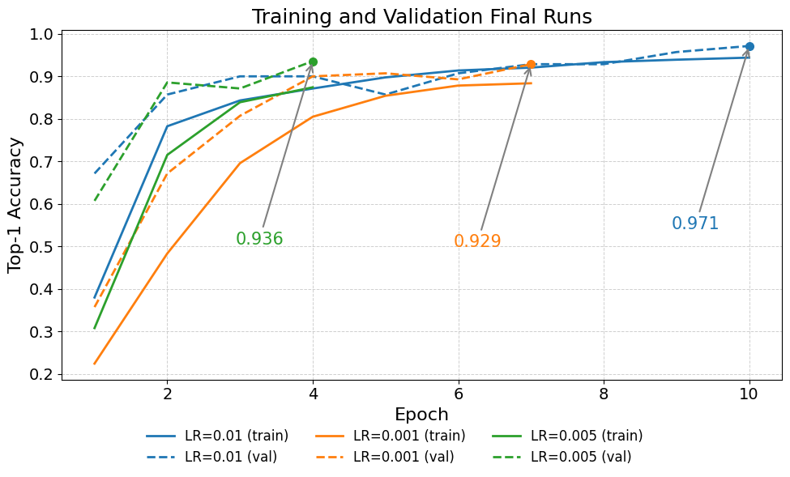
Training and validation top-1 accuracy curves for the final runs with different learning rates. The highest values attained are indicated, and the curves are truncated prior to early stopping.
Observe that the curves perform consistently better on the validation set compared to training, a consequence of data augmentation. With a learning rate of $10^{-2}$ , both training and validation top-1 accuracy curves show a clear improvement over the lower learning rates, exhibiting more stable and broader convergence and ultimately yielding the best final performance once the plateau is attained. To provide a comparison, in the initial grid search experiments described in Subsection 3.3.1.2, where the same fixed partition was used for validation, results barely exceeded $92\%$ top-1 accuracy, whereas in this case performance reaches $97.14\%$. What ultimately matters, however, is the relative improvement achieved with the refined configuration. We therefore adopt this setting as our final choice, retaining the checkpoint from epoch 10 to be used in the final evaluation stage.
3.4.2 Domain Shift Analysis
Although the CCTVActions dataset was included in training to maximize effectiveness in our target domain, the proposed transformations, particularly the geometric bone representation and Structured Joint Dropout, suggest that improved outcomes can be obtained for the selected CCTVActions validation set even when training solely on the Le2iActions split, thereby addressing the domain shift. In Figure 38, we present the validation macro-F1 curves for runs with and without these transformations, employing the hyperparameters defined for FT\(_{[1]}\) in Table 8, and a window size of $W=30$ to match the conditions of the CCTVActions dataset.
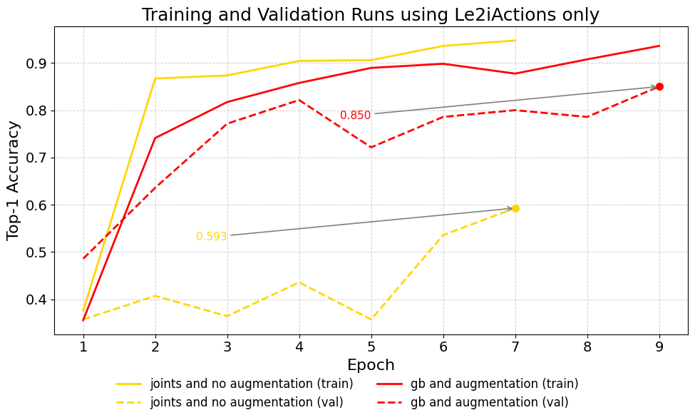
Training and validation top-1 accuracy curves on Le2iActions. One run uses the geometric bone representation with keypoint elimination, while the other uses the joint representation without this augmentation. The highest values reached are indicated, and curves are truncated before early stopping.
The results show that although the vanilla version fits the training set more closely, it performs poorly on validation. In contrast, the model trained with the defined transformations achieves a significantly higher validation top-1 accuracy of $0.85$, while exhibiting more coherent and closely aligned curves.
Therefore, we can state that a notable degree of domain adaptation has been achieved through online data preprocessing techniques. Nevertheless, we keep the checkpoint obtained with the combined datasets, as it yields the best performance due to reduced class imbalance and a larger number of samples that also capture additional edge cases. We further hypothesize that this improvement arises from variability sources that are difficult to fully model through transformations alone.
3.5 Final Evaluation
Finally, we evaluate the selected model on the CCTVActions test set, which has been kept aside until this point. We report all of the performance metrics in Table 11, and the corresponding confusion matrix in Figure 39.| Top-1 Accuracy | Top-2 Accuracy | Macro-F1 |
|---|---|---|
| 0.8889 | 0.9762 | 0.8906 |
Final evaluation metrics on the CCTVActions test set.
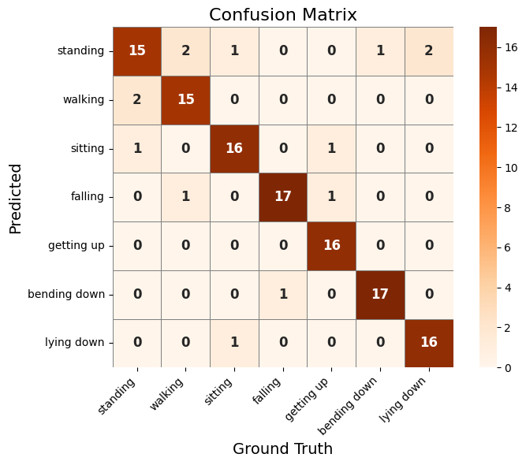
Confusion matrix on the CCTVActions test set.
We observe that there has been a drop in performance of about eight percentage points in top-1 accuracy (and macro-F1) with respect to the validation results for the selected checkpoint. Several factors contribute to this outcome: (a) the checkpoint was chosen based on validation performance, which inevitably introduces a degree of tuning to that specific set; (b) the data splits were generated randomly with only class stratification considered, so differences between train, validation, and test are expected given the limited size of the CCTVActions dataset; and (c) the selected validation set may simply have been easier, as we observed in some cross-validation folds where the reported metrics were lower.
This situation is sometimes referred to as optimistic bias, yet it is well-documented in the literature [167] [168] and should not be a cause for serious concern. In any case, the selected configuration demonstrated robustness through cross-validation, so the model is expected to generalize well, and it certainly does. The obtained results are objectively strong and reveal consistent performance across classes. We additionally report numerical results on the Le2iActions test set in Table 12 to support this argument. Although this dataset is comparatively easier, the model attains very high scores without having relied on it for validation or early stopping, which underscores the strength of the selected checkpoint.
| Top-1 Accuracy | Top-2 Accuracy | Macro-F1 |
|---|---|---|
| 0.9714 | 0.9905 | 0.9751 |
Final evaluation metrics on the Le2iActions test set.
Regarding per-class performance, the standing class accounts for the majority of confusions. In Figure 40, we illustrate a few test samples represented as skeleton sequences, in which standing was incorrectly predicted with a confidence exceeding $90\%$.
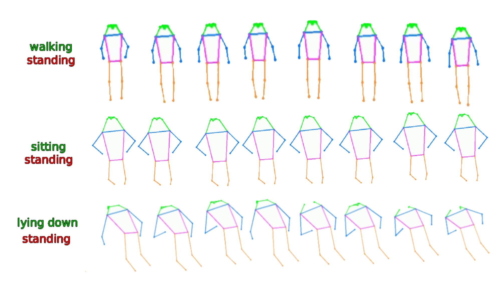
Examples of misclassified samples from the CCTVActions test set, where the model incorrectly predicted the label as standing. The ground-truth class is shown in green. For each sample, eight subsampled skeletons, centered on the middle of the clip, are displayed in temporal order from left to right.
Among these samples:
- The walking example (first row) exhibits no significant leg motion, primarily due to the frontal perspective and the distance of the subject within the frame, which hinders accurate pose interpretation. The ground-truth label could be inferred from the overall displacement in the scene. Such information, however, is not recoverable from the chosen data representation.
- The sitting example (second row) actually corresponds to a kneeling action, with the subject facing backwards, which may be underrepresented in the dataset. Moreover, this sample is ambiguous and could be challenging even for a human observer, as the skeleton sequence may resemble standing when viewed from a top-down perspective.
- The lying down example (third row) is also difficult to classify, as it may equally be interpreted as a standing position with a slight camera tilt or even as a kneeling posture.
As observed, these confusions typically arise from ambiguous poses under certain perspectives (an inherent limitation of 2D pose estimation), together with the absence of any global reference in the data representation. Additional cases include: a distant and slow falling instance misclassified as bending down; standing with pronounced weight shifts misclassified as walking; an abrupt getting up sequence predicted as falling; and walking captured by a $360^\circ$ camera (the only instance under such conditions in the dataset) with severe occlusion, and likewise confused with falling. Notably, some of these misclassifications were made with only modest confidence.
In summary, we conclude that the model's errors are reasonable and largely stem from intrinsic limitations of the approach and the way data is perceived by the classifier, given the absence of RGB or depth context. Throughout the development of this work, and particularly during additional experiments, some of which are reported in Chapter 4, we observed that it is generally intuitive to identify the edge cases in which the model fails, whereas the remaining situations are consistently recognized correctly. The model has undoubtedly learned robust patterns, exhibiting a level of predictability that we could, in turn, describe as explainable. This aspect will be further addressed in the following section.
3.6 Explainability Analysis
In classification tasks with graph neural networks (GCNs), such as our case of human action recognition from skeleton sequences, it is crucial to understand which parts of the graph (nodes, edges, or attributes) influence the network's predictions. Models like CTR-GCN learn spatial and temporal patterns in the skeleton graph to classify actions, but they initially operate as black boxes. Although one could argue that our final model is already somewhat interpretable, verifying this claim requires the application of dedicated explainability techniques. These methods make it possible to confirm that the model focuses on logically relevant aspects of the movement, thereby increasing trust in the system, and to extract insights into the motion dynamics that characterize each action class.
In this case, we apply two post-hoc, path-based feature attribution methods described in Section 1.5: Integrated Gradients (IG) [50] and its extension, Expected Gradients (EG) [57], implemented via [58]. We select these techniques because (a) they satisfy important integrity axioms that most other methods do not, (b) they are applicable to any differentiable function, including GCNs, and (c) they are computationally efficient and straightforward to implement, as they do not require additional training or architectural modifications to the already trained and evaluated model. Both methods operate on a spatio-temporal skeleton graph, assigning an importance score to each node (which in our case corresponds to a geometric bone) with respect to the model output (here taken as the post-softmax class probabilities).
For this study, we select a few representative samples from the CCTVActions test set across different classes and analyze their attribution maps in spatial, temporal, and spatio-temporal dimensions. For brevity, only a limited number of visualizations are included. We also discuss the baseline selection problem, which is critical for IG, as well as the stability of EG and a brief evaluation of sensitivity to feature elimination.
3.6.1 Baseline Selection
To use IG effectively, it is advisable to select a suitable general baseline. A common choice in the literature is a signal-free input (i.e., an input that generates close-to-zero outputs). Several alternatives can be considered:
- Zero baseline: A skeletal sequence with all input channels set to zero. Still, this is an out-of-distribution (OOD) sample [169], which may trigger unpredictable behaviours and spurious signals.
- Random baseline: Similarly, adopting a randomly generated skeleton sequence is problematic, as it is highly unlikely to correspond to the distribution of valid skeletal inputs.
- Particular baseline: Using a random sample from the training set as baseline is also inappropriate, since it will almost certainly lead to a strong activation of the corresponding class.
- Ambiguous baseline: Inferring a deliberately ambiguous pose sequence to produce low signals is not straightforward, as the class design is tailored to disambiguate almost any human action. Intuitively, most pose sequences can still be assigned, more or less confidently, to one of the classes.
- Average baseline: A more promising option is to construct an average posture sequence, obtained by averaging a subset of pose sequences from the training set. This approach aims to represent a compromise action across all classes, thereby avoiding the activation of any specific class.
In Table 13, we compare the probability scores obtained for each of these baselines. Note that it is impossible to drive all class outputs close to zero simultaneously, since the probability mass must be distributed across only seven classes. Therefore, the most reasonable strategy is to adopt a non-biased alternative.
| Baseline | Standing | Walking | Sitting | Falling | Getting up | Bending down | Lying down |
|---|---|---|---|---|---|---|---|
| Zero | 0.0494 | 0.0092 | 0.2316 | 0.0095 | 0.0191 | 0.0241 | 0.6572 |
| Random | 0.0000 | 0.0000 | 0.0000 | 1.0000 | 0.0000 | 0.0000 | 0.0000 |
| Particular | 0.0069 | 0.0022 | 0.9884 | 0.0001 | 0.0020 | 0.0002 | 0.0002 |
| Average | 0.1821 | 0.0862 | 0.1732 | 0.0984 | 0.0981 | 0.1703 | 0.1916 |
Probability scores obtained for different baselines across all classes. The particular baseline, as well as the subset of sequences used to compute the average baseline, were randomly selected.
The zero baseline shows a clear bias toward the sitting and lying down classes, which in some cases present lower visibility values due to missing keypoints in critical regions such as the face or legs, a limitation that stems from the dataset itself. Since joint dropout is applied uniformly across classes, the model seems to have learned this bias from the missing-information patterns. The random sample mostly consists of noise, which the model probably interprets as an anomalous motion resembling a falling action. Although we could draw some conclusions about the model's behaviour from this, we should not raise major concerns, as these are extremely OOD samples. The particular training sample is biased toward sitting simply because it is a sitting instance.
In our case, the average baseline was computed from a per-class stratified subsample of $256$ distinct sequences drawn from the training set. This average instance was the only tested baseline that did not exhibit a marked bias toward any class. Moreover, as shown in Figure 41, this sample arguably represents a plausible human skeleton sequence that the model interprets as among all classes. It cannot therefore be considered an OOD sample, as it preserves the human body structure over time and is thus expected to approximately yield kinematically valid poses along the integration paths for any instance in the dataset. Although not necessarily optimal, this baseline represents our most reliable choice for IG.
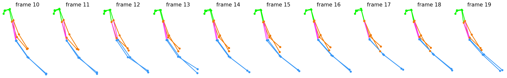
Illustration of the 10 central frames of the average skeletal sequence used as the baseline for IG. The sample was obtained by averaging a subsample of training sequences, with both stochastic and deterministic transformations applied. The visualization is therefore a reconstruction from the geometric bone representation, from which no absolute coordinates can be inferred.
For EG, we rely on the same subsampled instances as before; however, this time the method internally averages over these instances, treating each one as an individual baseline. This makes it inherently more robust than relying on a single baseline choice. We also conduct a stability check for EG by recomputing the attributions using different stratified subsamples of equal size drawn from the training set. Their similarity is then quantified through pairwise cosine correlations. In all cases, we obtained values above $0.9$, indicating that $256$ samples were sufficient to ensure stable attribution estimates.
3.6.2 Attribution Maps
All the following visualizations were generated using IG with $200$ integration steps and EG with $512$ random baseline–interpolation draws. These settings control the precision of the path integral approximation in each method. For every experiment, we also verified completeness, checking that the attributions summed to the difference between the model output at the input and at the baseline for IG, and to the difference between the model output at the input and the mean output over all baselines for EG. In each case, the relative error remained low, on the order of $10^{-2}$ or less.
In Figure 42, we present spatial attribution maps (obtained by collapsing the calculated attributions along the temporal dimension) for a few representative samples from the CCTVActions test set, including the classes walking, bending down, and lying down, which the network predicts with confidence levels of $1.000$, $0.974$, and $0.998$, respectively. Note that these attributions refer to child–parent vectors, which are the features actually fed to the model through the geometric bone representation.
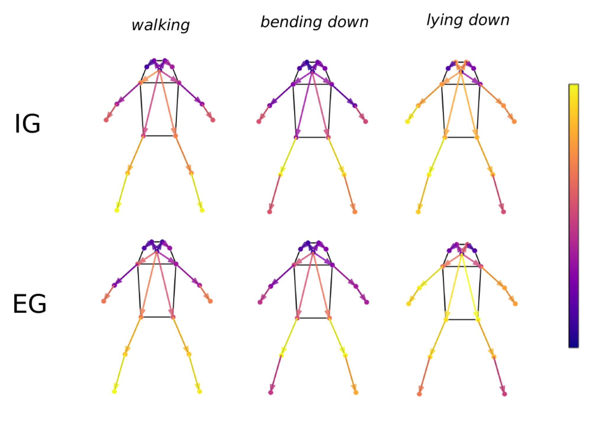
Visualization of the spatial attribution maps for EG and IG on three representative samples from the classes walking, bending down, and lying down. Attributions are overlaid on a plain front-facing skeleton. Color intensity reflects the magnitude of each one, with the corresponding scale displayed on the right. Arrows of matching color denote the child–parent vectors highlighted in each case.
Several observations can be drawn from these maps:
- Walking sequence: For both methods, it is observed that the model primarily focuses on the legs (especially the lower legs), as these body parts exhibit the strongest rotational patterns over time, which constitute the main information encoded by our node representation. The forearms are also considered, since walking sequences typically involve slight forearm swings, while upper-arm rotation is less pronounced. Finally, the nose–hip and nose–shoulder vectors also contribute, reflecting trunk tilting during a regular walking sequence.
- Bending down sequence: Here, both IG and EG show that the model strongly concentrates on the thighs, as they are essentially the only body parts that need to rotate to generate an action of this type.
- Lying down sequence: Several body connections are involved in discriminating this action. The nose–hip and hip–knee connections together encode the notion of contracted posture, which occurs in this particular lying down instance. The model also exploits the fact that the right arm is upright, which is more likely to appear when lying on the floor, and uses it as one of the discriminative features for the final decision.
Both IG and EG yield consistent results, although we may hypothesize that EG produces slightly cleaner outputs. This is evident, for example, in the lying down sequence, where IG also partially considers the nose–eye connections, which are arguably irrelevant in this scenario. This issue probably does not stem from the model or the attribution method itself, but rather from the arbitrary selection of the baseline.
We also present temporal attribution plots (collapsed along the spatial dimension) in Figure 43 for IG and EG, using the same three samples. We normalize the attributions to the $[0,1]$, since absolute values are not directly comparable due to the sensitivity axiom.
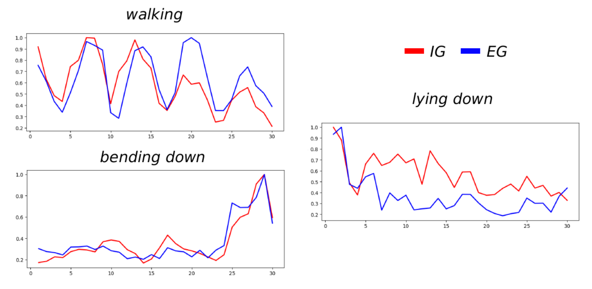
Temporal attribution plots with the frames on the $x$-axis and the normalized attributions on the $y$-axis, for IG and EG methods, and using samples from three distinct classes.
Temporal interpretations of the network are also coherent, as demonstrated by both methods:
- For walking, the model's attention is concentrated on frames where either leg at its maximum forward or backward position, as these frames best capture the contrasts needed to establish temporal motion patterns. This focus strongly decreases when the legs are nearly aligned vertically, as such frames could also correspond to a standing sequence.
- For bending down, the attributions are temporally concentrated on the final skeletons, which capture the critical last part of the motion, as this action instance begins at a slower pace. This single-peak behavior is also observed in most of the transitional action instances of getting up and falling.
-
For lying down, the attributions are the only ones
that differ substantially between the two methods. From the EG perspective,
with its sharper attributions, the action appears to be identified early by the unnatural position in the initial frames, while additional,
less relevant checks are performed over time to confirm it.
An interesting insight here is that, when comparing with other static actions such as standing or sitting, we observe a more well-distributed pattern of attributions, often with two prominent peaks near the beginning and the end of the sequence, allowing the model to verify whether the static posture was maintained throughout. In contrast, for lying down, there is only one major check at the start, which can be attributed to the underrepresentation of samples that begin in a lying position on the ground (e.g., getting up from the ground), aside from the actual lying down action samples, so the model may not thoroughly verify the posture over time.
Finally, we present the complete spatio-temporal attribution visualizations for one falling and one getting up sample in Figure 44. We just include the EG results in this case.
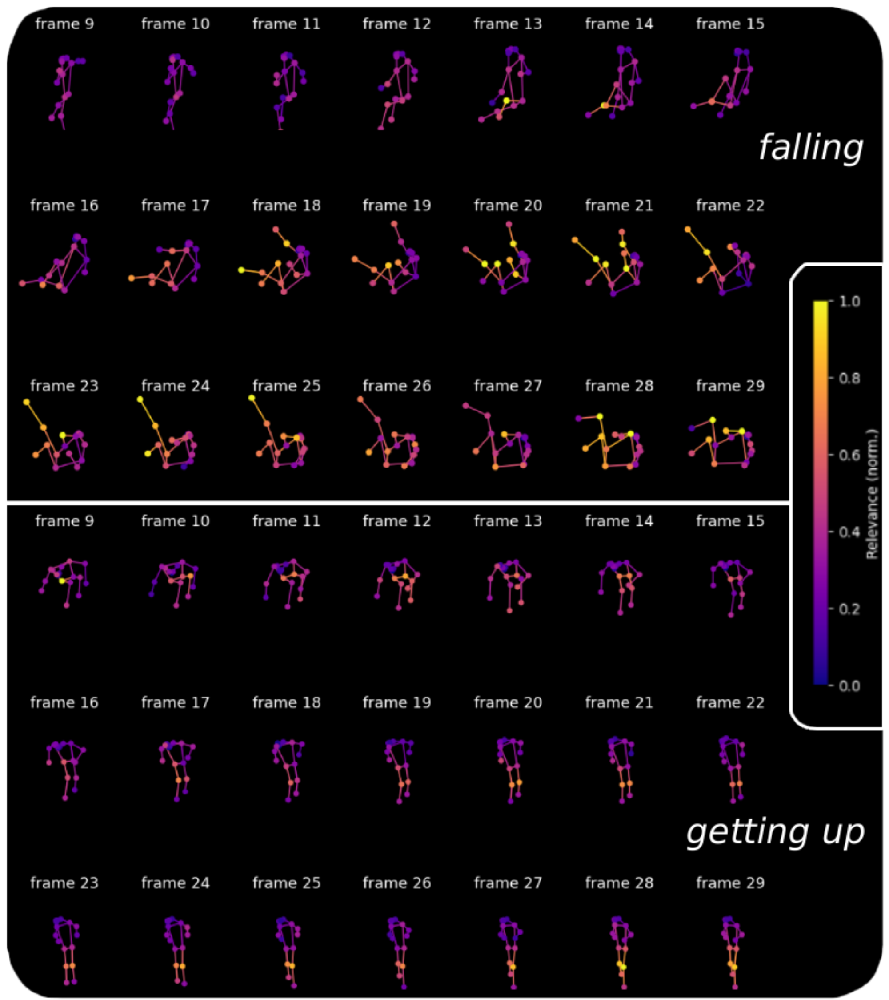
Spatio-temporal representation of the EG attributions generated for a falling and a getting up instance from the CCTVActions test set. Each skeleton is labeled with its corresponding frame within the sequence, and each sequence includes the last 20 frames. Color intensity reflects the magnitude of each node's attribution, with the scale displayed on the right. Note that each node corresponds to a vector as depicted in Figure 42; arrows are omitted here for clarity.
For the falling sequence, the unusual positions of the arms and legs, particularly on the right side of the subject's body, trigger the model's prediction with $100\%$ confidence. In contrast, the model’s understanding of the getting up sequence relies primarily on the thighs, as usual, and on the nose–hip connections, reflecting the initial forward-bent posture characteristic of sitting on the ground, which is then reversed, likewise reaching a $100\%$ confidence level.
3.6.3 Sensitivity to Feature Removal
Finally, we leverage the remaining action classes, standing and sitting, and generate deletion curves for one instance of each. Specifically, given the attribution scores computed by IG and EG, we progressively remove the same body element from the skeletal sequence by setting its features to zero across the entire temporal dimension, starting from the most important ones defined by the spatial attribution maps, and monitor how the model's confidence in the predicted class decreases. This procedure allows us to determine which attribution method provides more meaningful scores for these particular instances, based on quantitative evidence, while also evaluating the model’s robustness to missing information.
In Figure 45, we present the deletion curves for both methods and calculate the AUC (Area Under the Curve) as a summary statistic. Note that eliminating body elements in the geometric bone representation effectively corresponds to the absence of a specific child–parent vector, which is notably different from removing a keypoint in the original skeleton.
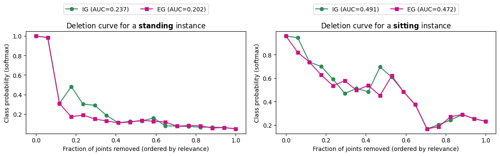
Deletion curves for the standing and sitting instances from the CCTVActions test set, showing the model's confidence as body components are progressively removed. The AUC (Area Under the Curve) is calculated for each method and each instance.
We observe that in both cases, EG yields lower AUC values, indicating that the bones identified as most important are indeed more relevant for the model's prediction. Overall, this trend holds across other instances as well, so even though both methods produce good results, the theoretical advantage of EG becomes apparent in this regard.
Another important aspect, already anticipated during the dataset analysis in Section 2.3 and when examining Table 13, is that the model may be biased toward classes such as sitting when zero values are present in the input features. This bias is also reflected in Figure 45: in both cases, the right and left thighs are identified by both methods as the most important body components for both samples, yet their simultaneous removal causes a larger drop in confidence for the standing instance than for the sitting one. In fact, even when more than $50\%$ of the bones are absent, the model still predicts sitting with a confidence above $0.5$ under both IG and EG removal orders. Although we were already aware of this situation from our previous review, the xAI analysis provided further insight into it.
In general terms, we can conclude that:
- The model has learned meaningful patterns that are largely consistent with human intuition. These patterns are easier to interpret thanks to the simplicity and denoising nature of the chosen data representation.
- Both IG and EG provide valuable insights into the model's behavior, although EG appears slightly more reliable.
- The most important aspects of the body for our problem are those that define the contraction of the human body (thighs and nose–hip connections), together with the arms in certain cases; the head is rarely considered relevant, suggesting that it could be disregarded from the input data representation without significant performance degradation.
- The model exhibits some biases due to the overrepresentation or underrepresentation of specific conditions for certain classes in the training set, which could be addressed by further improving and expanding the dataset in future iterations.
End-to-End Pipeline Deployment
In this chapter, we briefly introduce the implementation and evaluation of the complete processing pipeline for human action recognition in CCTV scenarios. A comprehensive description of this pipeline is provided in Section 2.5. The main focus here is to highlight the techniques employed to achieve real-time performance on edge-computing devices, along with a set of concise, preliminary validation experiments that showcase the system's capabilities and point to potential directions for future iterations. Our pipeline is already suitable for deployment in real-world scenarios, achieving real-time inference on an NVIDIA Jetson AGX Orin device when using an appropriate configuration.
4.1 Framework and Tools
For leveraging deployment on edge devices, we have utilized the NVIDIA DeepStream SDK [170],
which is specifically designed for building vision-based AI-powered applications and services.
DeepStream is conceived as a modular toolkit built on top of the GStreamer [171] multimedia framework,
enabling the construction of flexible streaming pipelines that integrate video acquisition, AI inference, and cloud connectivity,
while exploiting NVIDIA hardware acceleration in performance-critical stages.
A typical architecture of a DeepStream application is shown in Figure 46.
The SDK supports development in both C/C++ and Python,
offering a practical balance between rapid prototyping and deployment-ready solutions.
Although primarily a closed-source SDK, it provides a selection of open-source plugins,
reference applications, and an active community forum for support and discussion [172].
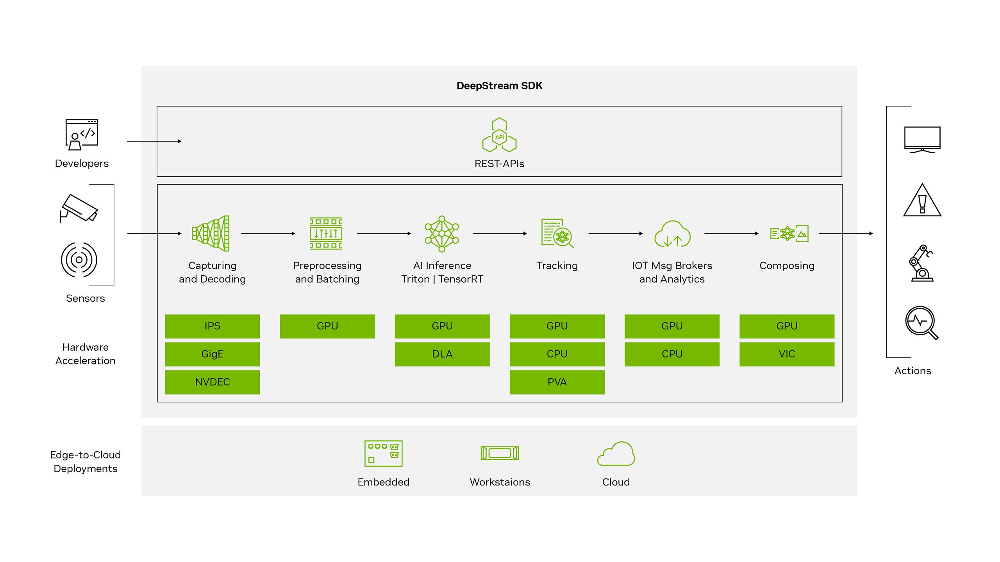
Typical architecture of the NVIDIA DeepStream SDK, showing the modular flow from video acquisition to inference and cloud integration, with support for both C/C++ and Python. Obtained from [170].
In practice, we deploy DeepStream 7.1 using two Docker containers
derived from the NVIDIA NGC catalog [173]:
one optimized for inference with the SDK, drivers, TensorRT, and runtime libraries,
and another for development, used to compile external libraries and custom plugins.
The pipeline itself is implemented mainly in Python for flexibility,
while C++ components provide efficient low-level integration.
This setup ensures consistency across devices, simplifies dependency management,
and facilitates reproducibility of experiments and deployments.
As anticipated, our target deployment device is the NVIDIA Jetson AGX Orin [174], a high-performance edge platform that combines an Arm-based CPU, Ampere GPU cores, and dedicated Deep Learning Accelerators (DLAs). These features make it particularly well-suited for real-time video analytics and fully compatible with the DeepStream and JetPack software stack. We selected this device as it is the most powerful of the Jetson family, capable of handling the high computational demands of the proposed pipeline, particularly in the detection and pose estimation stages. For additional testing and benchmarking, the pipeline could be easily deployed on other Jetson devices also available to us, or on the server described in Section 3.1.
Moreover, we embed this inference module within a docker-compose setup
that orchestrates multiple microservices, including a graphical interface,
messaging brokers, and databases.
This design allows us to integrate the complete system as a use case within the In4City smart city platform [175] developed by innovasur.
4.2 Key Components
The DeepStream framework is designed to build pipelines that ingest input from a wide range of sources, including real-time RTSP streams, video files, and USB cameras. To process the data from these sources, it provides a variety of built-in plugins that can be assembled as needed:
-
nvstreammux: combines multiple video input streams into a single batched buffer, synchronizing frames across sources and generating the core metadata structure, which organizes data hierarchically into batches, frames, and objects. -
nvinfer: executes neural network inference using NVIDIA TensorRT. It supports loading models in the Open Neural Network Exchange (ONNX) format [176], a widely adopted standard that enables interoperability across different frameworks (e.g.,PyTorch,TensorFlow). Models are optimized and compiled into TensorRT engines, which are platform-specific binaries tailored for efficient execution on NVIDIA hardware. These engines can use quantization, that is, the reduction of numerical precision from single-precision floating point (FP32, 32 bits) to half-precision (FP16, 16 bits) or even integer precision (INT8, 8 bits). This process significantly improves inference speed and reduces memory usage, while typically preserving model accuracy [177]. Thenvinfermodule also allows attaching a custom parser that stores the raw inference outputs into the metadata as required, making them available for successive modules in the pipeline. -
nvdspreprocess: a highly customizable plugin that performs preprocessing at different levels, including entire frames or selected regions within them. It can handle tasks such as scaling and format conversion, subsequently preparing raw tensors for downstream plugins.
Other modules provide utilities for object tracking (nvtracker),
real-time visualization (nvdsosd, nvtiler),
and hardware-accelerated video encoding/decoding, allowing the
construction of end-to-end systems that process visual information on the fly.
Moreover, probe functions can be inserted within these components
to interact with the metadata,
supporting tasks such as inspection or modification.
4.3 Implementation Design
We implement the complete processing pipeline in DeepStream, following the modular architecture illustrated in Figure 47. The design takes inspiration from [116].
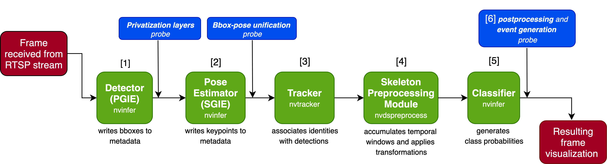
Design of the end-to-end processing pipeline implemented with the NVIDIA DeepStream SDK. Plugins are shown in green, probe functions are highlighted in blue, and inputs/outputs are depicted in red. Numbering corresponds to each of the subsections in Section 2.5.
This architecture takes video frames as input, typically from an RTSP stream, and can produce the same frames overlaid with bounding boxes, skeletons, track IDs, and action labels in real time. It comprises the following components:
- Detector (
nvinfer): It is implemented as a Primary GPU Inference Engine (PGIE), offering multiple detection for humans at the level of each frame. Frame skipping can be configured if required. The parsing stage integrates the outputs into the metadata, removing low-confidence detections, limiting the maximum number of persons, and suppressing redundant results through non-maximum suppression (NMS). A probe function is registered just after the detector component (i.e., on its source pad) so that detections within predefined regions (such as privacy-sensitive zones, confounding regions, or parts of the frame not of interest) are discarded from the metadata. - Pose Estimator (
nvinfer): It acts as a Secondary GPU Inference Engine (SGIE), extracting 2D keypoints and confidence scores from padded RGB crops around each detected person, generated from the bounding boxes of the previous stage. It supports parallel inference over multiple persons with a configurable upper limit, while optionally discarding predictions at a specified rate, or for detections below a minimum size. The model naturally outputs heatmaps, which are then parsed into skeletons relative to the original crop.A probe function is attached to the source pad of this plugin to unify bounding boxes and skeletons into a single object for subsequent tracking, while re-projecting keypoints to the original frame coordinates.
- Tracker (
nvtracker): It assigns a unique ID to each person and maintains it consistently across frames. Both motion-based and appearance-based trackers are supported, with several configuration parameters available. When frame skipping is enabled, bounding boxes are interpolated across skipped frames; however, since pose estimation has already been performed, these interpolated boxes are used only for visualization purposes. - Skeleton Preprocessing Module (
nvdspreprocess): Implemented through a customC++library, this module maintains a temporal buffer for each of the assigned track IDs. Incoming skeletons are sequentially appended to their corresponding buffer of length $W$, specified by the model configuration, which must be tuned to the input frame rate and pipeline throughput. It then applies visibility thresholding to each keypoint, normalizes coordinates to $[-1,1]$, and transforms every node into a feature representation (e.g., geometric bone), producing a tensor of shape $B \times W \times 17 \times 3$, with $B$ denoting the maximum number of action streams processed in parallel. - Classifier (
nvinfer): It serves as another SGIE, performing inference over the tensor generated by the previous module for each tracked identity at the frame being processed. It includes a parser to attach prediction probabilities to the metadata. - Postprocessing and Event Generation (probe function): A probe function is attached to the classifier’s source pad to apply temporal smoothing, averaging class probabilities over a sliding window of the same length $W$ as before. It then selects the most likely class and enforces confidence thresholds to filter out unreliable predictions. According to configurable persistence criteria, the probe generates events that include the cropped sequence, action label, confidence score, and timestamp for each valid prediction. Additionally, it can update the visualization metadata to render fully annotated output frames.
Low-level optimizations were applied to plugins, probe functions, and parse functions to minimize latency. In addition, certain operations of the target models had to be modified to ensure compatibility with ONNX and TensorRT.
4.4 Validation Experiments
In this section, we present a series of ad-hoc experiments designed to provide a partial assessment of the overall pipeline performance. The focus is placed on recall, that is, the ability of the system to be reliably triggered by the actions of interest. Ensuring high recall is critical so that all relevant actions are captured and can, for example, be compiled into reports transmitted to a monitoring center. A high precision is also desirable, although it is mainly relevant in relation to false alarms for the falling class, an aspect that will be addressed later.
Experiments were conducted on real-time video throughput using the selected edge device. A comprehensive analysis of system efficiency, which could be carried out with profiling tools such as [178], is beyond the scope of this work. Our aim here is rather to offer a preliminary view of the system’s behavior and avenues for improvement, as full benchmarking was not among the objectives of this study.
4.4.1 Experimental Setup
The experimental setup is structured around three main aspects: the data used, the system configuration, and the evaluation metrics.4.4.1.1 Dataset
For these experiments, we leverage a the subset of 20 clips from CCTVActions that we specifically created to simulate sequences of different actions in CCTV scenarios (see Subsection 2.3.4). This set includes multiple chained actions, and although several subjects may appear in the scene, temporal labeling is provided only for a single subject of interest, which is therefore the focus of our evaluation. Despite its limited size, the dataset encompasses a variety of highly challenging situations, particularly for the detector, arising from low resolution, large subject-to-camera distances (ranging from 5 to 50 meters), and severe occlusions staged on purpose. Regarding action recognition, it also reflects certain ambiguities (e.g., a person on the ground leaning back, which can be interpreted either as sitting or lying down), and even atypical frame rates.
4.4.1.2 System Configuration
We will set up the pipeline with a specific configuration, tailored to cover the reflected situations. However, all of these configurations can be easily modified as needed:
-
The detector is the lightweight pretrained version of RT-DETR [119] from
ultralytics[179] (RTDETR-L). It is configured in FP16 mode, with a confidence threshold of $0.3$ and a maximum of $16$ detections. The higher limit is chosen to guarantee that, after filtering, at least the most relevant $8$ subjects in the scene are preserved. Privatization layers are defined for each scenario ($7$ in total), covering mainly roads, houses, and vanishing points. No NMS is applied, since RT-DETR was specifically employed to retain occluded individuals. Inference is performed on every frame. -
The pose estimator is the smallest available version
of ViTPose [78],
namely
ViTPose-S, quantized to FP16. Inference is performed on each detected bounding box, with up to $8$ concurrent inferences and a minimum crop size of $0.1\%$ of the full frame area. - The tracker used is NvDCF [180], provided by DeepStream in its optimized version for balancing accuracy and efficiency. It relies on RGB-based discriminative correlation filters for Re-ID.
- Up to $W=30$ frames from each track are buffered for action recognition, with a keypoint visibility threshold of $0.2$, and geometric bone features.
- The trained CTR-GCN from Section 3.5 serves as the classifier in FP32 mode, with up to $8$ concurrent action streams, in line with the pose estimator configuration. A confidence threshold of $0.4$ is applied to confirm action predictions, while predictions over buffers shorter than $W=30$ frames are discarded. Post-processing is applied as described.
In Figure 48, we indicate the relative sizes of the main selected components of this configuration.
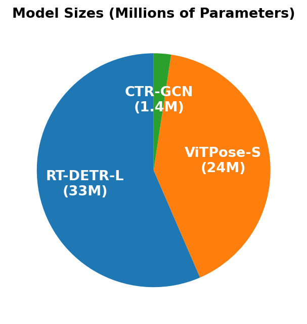
Relative sizes of the detector, the pose estimator, and the classifier models used in the deployment experiments, expressed in number of parameters (millions).
Modules such as the tracker, probe functions, skeleton preprocessing, and prediction postprocessing also introduce some overhead, although the neural network components dominate the computational cost. The pose estimator is undoubtedly the most expensive module, even though its parameter count is smaller than that of the detector, since it is executed for every detected person (up to a maximum of 8 per frame). Nevertheless, the specific operations of each architecture and the internal optimizations applied by TensorRT for GPU execution are crucial factors that ultimately determine the actual processing time [181]. Therefore, the relative size of the models does not necessarily reflect their impact on the overall system performance, and a thorough efficiency study would be needed to properly address these concerns.
4.4.1.3 Evaluation Metrics
System inferences will be compared to the single-subject ground truth for each clip according to the following considerations:- The action labels are expected to appear with a delay of about $W=30$ frames, mainly due to the sliding-window strategy.
- As the DeepStream system generates labels only up to the end of the stream, the last $30$ ground-truth frames are not considered.
- Ideally, the system's inference result would be evaluated on a single track corresponding to the subject of interest. However, under challenging conditions, redundant detections, missed detections, and ID switches may occur. A subject can therefore be represented by multiple tracks within a sequence, due to inaccuracies in both the detector and the tracker. We associate predictions with the track that best reflects the subject of interest at each moment. If a detection is redundant, we retain the longest track until it vanishes. If the subject is not detected in a frame, it is considered a missed prediction; the same applies when the subject is detected but has not yet accumulated sufficient evidence (i.e., fewer than $30$ frames linked to the corresponding track).
Following these guidelines, we now define our metric of interest, which resembles mean Average Recall (mAR) but relies on a frame-level recall criterion for thresholding before computing action segment recall. An action segment from the ground truth is considered correctly detected (true positive) for a given class if the system achieves a sufficient proportion of correct frame-level predictions within that segment (accounting for the $30$-frame delay), depending on the applied threshold. From this, we obtain a curve of mAR values per class as a function of the frame-level recall threshold. Averaging across both the class and threshold dimensions then yields a single consolidated mAR score. This idea is consistent with the persistence criteria defined in Subsection 2.5.6.
This approach avoids issues inherent to treating predictions as segments (IoU-based mAR). Although the sliding-window technique mitigates fluctuations, no further smoothing is applied since predictions are expected to be generated on the fly. As a result, phenomena such as flickering or fragmentation could otherwise break these segments and lead to misleading performance assessments.
Additionally, visualizations are provided to gain a qualitative understanding of the system's behavior.
4.4.2 Final Results
In Figure 49, we show two examples of frame-level segmentation provided by the pipeline at a real-time processing rate, following the considerations described above.
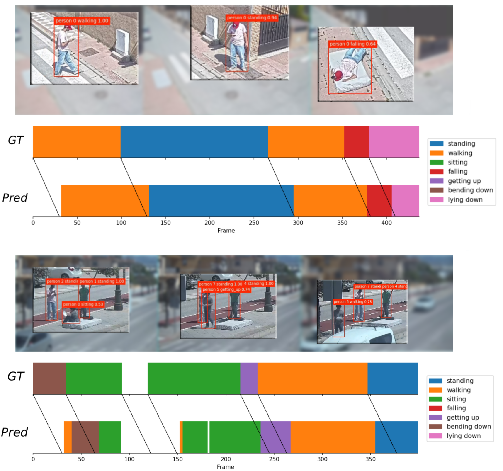
Visualization of frame-level segmentation produced by the system for two clips, compared against their ground truth, with action classes indicated by different colors. The diagonal lines illustrate the temporal offset. Blank segments in the ground truth mark the absence of annotated actions for the subject, while in the predictions they indicate missing outputs due to an insufficiently long window on that subject's track. In the bottom clip, the subject of interest is the one initially assigned track ID $0$.
For the top clip, the system delivers an almost perfect segmentation, despite the inherent ambiguity of temporal action labeling. The subject is consistently detected across all frames, yielding high-quality skeleton sequences (not illustrated for clarity), which are then accurately processed by our specifically trained classifier.
The bottom clip presents a more demanding scenario, with occlusions and a greater distance from the camera. In this case, we observe missed predictions and false negatives, mainly when insufficient temporal context is available for applying the sliding window, together with the lower quality of the skeletons obtained from blurrier crops. Temporal triggering, considering the offset, is also less precise. However, these results are still very positive.
The issues illustrated in the bottom clip, particularly the missed predictions caused by absent detections along the stream, become even more pronounced in other multi action instances of our dataset. We found that this limitation constitutes the primary bottleneck preventing the classifier from triggering actions reliably. In Figure 50, we present three segment-level mAR curves based on different frame-level recall thresholds: the first shows the overall mAR curves, both per-class and aggregated, the second excludes action segments where more than $\mathbf{90}$% of frames where missed predictions, and the third discards segments with over $\mathbf{10}$% missed frames. In all cases, a fixed offset of $30$ frames is applied for comparison, as explained.
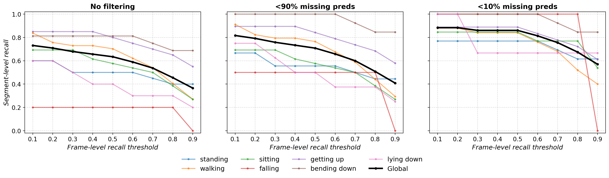
Segment-level recall curves as a function of frame-level recall for each action segment. From left to right: all segments included, only segments with less than $90\%$ empty predictions, and only segments with less than $10\%$ empty predictions. Curves for individual classes are shown in different colors, while the black curve represents the class-averaged mean in each case.
Observe that as we progressively filter out segments where the subject of interest was not detected, the overall mAR values increase markedly across all frame-level recall thresholds. In particular, when averaging mAR across classes and thresholds in the range $0.3$ to $0.8$ (to balance overlap and labeling uncertainty), we obtain values of $\mathbf{59.4}$%, $\mathbf{66.08}$%, and $\mathbf{80.4}$%, respectively.
This analysis confirms, as noted in Subsection 2.5.1, that the detector’s performance is critical to the overall system effectiveness. When the subject is consistently detected (fewer than 10% missed predictions), the classifier produces reliable action predictions, since the transformer-based ViTPose model is able to provide reasonably strong skeleton representations. Although these skeletons are not as accurate as those used for the classifier’s evaluation, which were manually reviewed and annotated, the strategies described in Section 2.4 support adaptation to deployment conditions and alleviate the performance drop. The tracker also seems to operate reliably when detections are provided, except in scenarios with severe occlusion. The influence of the detector is particularly evident for the falling and lying down classes: the classifier performs well at recognizing these sequences when provided, but the detector struggles due to the unusual postures involved. Overall, this highlights the detector as a key component and suggests clear directions for future improvements.
Moreover, we observe that actions such as getting up and bending down are consistently well detected across all scenarios, as the subjects are easier to distinguish in the RGB stream, and the classifier seldom confuses these actions. By contrast, confusions between classes such as walking and standing still occur, reflecting the limitations of the feature representations (Subsection 2.4.6), which were also evident during the final evaluation of the classifier (Section 3.5).
Additionally, we report that not a single frame-level prediction for the falling class was a false positive, underscoring the robustness of the system against spurious detections that could otherwise lead to false alarms.
4.4.3 System demonstration
The following video presents a qualitative demonstration of the proposed system, reflecting representative results obtained from the validation experiments. The video is composed of three different clips captured in distinct CCTV scenes. For security and privacy reasons, sensitive areas of the scenes have been anonymized, while the actors involved and the corresponding online action predictions remain visible throughout the sequences.
Final Considerations
To conclude, we summarize the main findings of this work, highlight the objectives achieved, discuss the challenges encountered and potential strategies to overcome them in the future, and close with a reflection on the experience of working as a machine learning engineer.5.1 Main Conclusions
After revising the state of the art in human action recognition (HAR), with a special focus on real-time systems, we observed that research is largely oriented towards neural networks, given their capacity to generalize complex patterns from data. In this context, we identified several CNN-based designs that address the problem by using inputs based on images or videos. However, considering the set of actions of interest, we noted that RGB data largely introduces unnecessary noise into the process, while also demanding high inference and training costs. In contrast, skeleton-based data discards such redundant information and preserves only the structured kinematic information of human bodies across scenes, providing a more compact, efficient, and interpretable representation that also preserves subject anonymity, a key aspect for privacy. Graph Convolutional Networks (GCNs) are particularly well-suited for processing spatio-temporal data of this kind.
To build an end-to-end HAR system under the specified constraints and leveraging the pose-based approach, we defined a complete pipeline comprising a multi-person detector, a pose estimator applied to the detected crops, a multi-object tracker to generate subject-specific sequences over time, a GCN-based classifier to recognize actions from the skeleton sequences, and prediction enhancement criteria to trigger reliable event alarms or logging. We later integrated this pipeline into DeepStream to enable real-time processing.
Our main focus was the classifier, which required suitable data for training. A review of the literature revealed that no existing dataset fully met our requirements, so we devised a strategy for acquiring and annotating data, resulting in two complementary datasets: Le2iActions , containing examples of the target actions, and CCTVActions , an ad-hoc dataset of real CCTV footage, also designed to address the shortcomings of the former, such as limited diversity in positions, scales, occlusions, frame rates, viewpoints, and action dynamics, as well as class distribution imbalance. In addition, we defined data transformations and augmentations tailored to mitigate data scarcity, reduce unnecessary sources of variability, overcome the well-documented limitations of our datasets, and reflect the pipeline's operational conditions.
The classifier development process involved tuning parameters from pretrained checkpoints. We conducted a progressive study of the key factors affecting training, leading to the following conclusions:
- As evaluation is focused on assessing the classifier’s performance on the CCTVActions dataset, we also studied how to combine both datasets during training to improve its accuracy and generalization. We observed that different training schemes exhibit distinct convergence patterns, each requiring specific hyperparameter tuning (e.g., learning rate, batch size). We found that joint fine-tuning on both datasets (1-FT) yielded strong results on CCTVActions while also being simple and favoring generalization.
- Lightweight GCN architectures achieve strong HAR performance when provided with high-quality skeleton sequences. We selected CTR-GCN as our final model, with only $1.4$ million parameters.
- The way information is encoded in the skeletal graph is crucial both for overall performance and for stable per-class convergence. For our particular set of actions, we found that the proposed geometric bone representation consistently performs better, as it effectively removes negligible sources of variability such as scale or position in the scene, while also highlighting the orientation of kinematic edges. This proved especially beneficial for recognizing static actions.
- We also argue that applying keypoint masking through Structured Joint Dropout can enable the model to learn more robust patterns.
These last two features proved particularly effective for enabling domain adaptation when relying solely on Le2iActions. Once the final classifier was trained, we evaluated the complete pipeline on the CCTVActions test set, obtaining reliable performance with errors mainly arising from ambiguous situations not well captured by the data representation. This dependable behaviour was further confirmed through an explainability analysis, which showed that the model focuses primarily on logical patterns while also making certain tendencies in our datasets evident.
Finally, we leveraged a highly challenging set of chained actions to validate the complete pipeline running in real time on DeepStream under a selected configuration. The results highlighted the critical role of certain components, particularly the person detector, and also illustrated the impact of elements such as the post-processing strategy. This analysis outlined clear directions for future work.
5.2 Response to Objectives
The initial objectives set out for this work have been successfully achieved:- We contextualized the problem of human action recognition through a state-of-the-art review, identifying the most relevant approaches together with their strengths and weaknesses. We effectively motivated the choice of a pose-based approach by highlighting its advantages over alternative methods, particularly in terms of efficiency, interpretability, and privacy. This review was complemented with the theoretical foundations of the neural architectures employed and some historical context.
- We designed a data acquisition process that leveraged existing public HAR datasets together with specifically collected CCTV data, some of which we simulated ourselves. These datasets covered seven classes of interest, ranging from typical situations to critical or less frequent events such as falls or lying-down scenarios. In particular, CCTVActions was conceived to be sufficiently diverse and tailored to our target deployment scenarios, providing a solid basis for training the classifier.
- We defined strategies to mitigate the complexity of domain shift under deployment conditions. For this purpose, we employed both deterministic and non-deterministic transformations of the data, including keypoint coordinate normalization for uniformity, smart padding and truncation, Gaussian noise addition, and two techniques specifically introduced in this work that proved particularly effective: geometric bone representation and structured joint dropout. The former reduces noise while emphasizing relevant information, whereas the latter addresses data scarcity to improve robustness.
- We defined specific metrics to validate our system depending on the stage: classification assessment or whole-pipeline evaluation. These experiments were carried out with an emphasis on methodological rigor. The classification study progressively analyzed several factors in the form of an ablation study, allowing us to determine their individual impact, identify the most suitable configuration, and finally evaluate performance on an independent test set. In particular, the pipeline evaluation was performed on an edge device using DeepStream under real-time conditions, resembling the deployment workflow of use cases in the smart city platform of Innovasur. The scenarios considered were in some cases even more challenging than those encountered in practice, thereby covering conditions beyond typical industrial requirements.
- Finally, we conducted an explainability analysis to understand the model's behavior. This study confirmed, both qualitatively and quantitatively, that the model focuses on logical patterns while also revealing certain expected biases in our datasets, which could be addressed in future work.
5.3 Limitations and Future Directions
Throughout this work, we critically examined the current state of the system and identified possible directions for its improvement. These considerations are not merely speculative: the project remains open to further refinement, and we intend to continue enhancing it in the future.
Action Set
The set of actions considered aims to cover the most common situations occurring in public spaces, while also including critical events such as falls. However, some situations (for instance, running or cycling) still need to be defined either as separate classes or as subclasses of broader categories (for example, as specific types of walking), and further refinement of the class definitions is required to avoid ambiguity. Further refinement could also incorporate actions involving interaction with objects (e.g., carrying luggage or using a phone), or with other people (e.g., fighting or hugging). Many GCN architectures are already designed to handle inputs involving multiple subjects, which opens the possibility of scaling both the system and the datasets accordingly.
Datasets
Further data collection would help address the limitations identified both in our datasets through exploratory analysis and in the classifier through the xAI study. These include class imbalance, the underrepresentation of certain subactions (e.g., getting up from a lying down position), the bias towards specific viewpoints, which limits generalization to non-overhead CCTV cameras (although less common, these also exist), and keypoint visibility patterns associated with classes such as sitting or lying down.
Data representation
The final evaluation of the classifier revealed inherent limitations of the skeleton-based representation. These include the absence of perspective information in some cases, which could be addressed by incorporating 3D pose estimators, and the lack of a global position reference within the scene for the geometric bone, which is relevant for distinguishing certain actions (e.g., walking vs. standing). Such issues could be mitigated by stacking input channels with additional features (e.g., joints or motion) or by employing ensemble architectures. This multi-stream approach could also be extended to incorporate other modalities, such as RGB data or additional sensors, which may prove beneficial in handling specific edge cases or when expanding the set of actions. Another way of enhancing data representation is by removing unnecessary keypoints that contribute little information, such as some head landmarks (e.g., ears or eyes), or by merging certain keypoints together.
Detector
The detector is a critical component of the pipeline, as it directly determines the quality of the skeleton sequences and, more importantly, their potential absence. Poor detector performance propagates downstream, degrading every subsequent module and ultimately leading to a significant drop in overall system performance, as observed in the pipeline validation experiments. Fortunately, this component is independent and can be replaced with a more powerful option if efficiency constraints permit. We can also explore retraining or fine-tuning on data more representative of deployment scenarios, with particular attention to small-scale pedestrians, occlusions, and especially unusual postures, which fall outside general-purpose detection and may therefore require dedicated adaptation. Ongoing work is focused on this aspect, which we identify as the main bottleneck of the system.
Frame rate management
Currently, we rely on a fixed window size determined by the frame rate of the dataset samples. The classifier is trained without explicitly encoding information about these conditions, under the assumption that it will generalize across different frame rates. Nevertheless, it would be worth exploring strategies for adapting models to specific frame rates, for example by adding interpolated skeletons to the samples according to the target frame rate during training, or alternatively by interpolating inputs according to the classifier's capabilities at inference time. In any case, it would be necessary to ensure that all cameras in the deployment scenario, processed through the same pipeline, operate at a consistent frame rate. In addition, the optimal size of the sliding window could also be empirically investigated.
Postprocessing techniques
Aspects such as confidence filtering, specific persistence criteria, and the use of logical constraints remain to be defined to align with the conditions of the target deployment scenario.
Efficiency
A comprehensive efficiency analysis remains to be carried out, aimed at clearly identifying the most demanding components of the DeepStream pipeline, exploring potential optimizations, and evaluating the trade-off between accuracy and speed. This study should also consider the feasibility of incorporating more action streams in parallel, particularly for handling highly crowded scenes, as well as the impact of supporting multiple input sources on a single device. In addition, the possibility of deploying the system on lighter hardware should be examined, as the NVIDIA Jetson AGX Orin represents a high-end edge platform that may exceed the requirements of typical deployment scenarios.
Open source
We intend to make certain resources publicly available as part of this research activity, including data samples and demonstrations of the system's functionality, to be uploaded to [182]. However, the code and model checkpoints will not be released due to their proprietary nature.5.4 The Job of the Machine Learning Engineer
This work constituted my entry into the professional world of machine learning engineering with Innovasur. What first started as an internship evolved into a full-time position that I have held since March 2025. This experience has been invaluable, and this project represents a significant milestone in my career so far.
This work has allowed me to apply the knowledge acquired during my
master's degree and previous studies in mathematics and computer science
to a practical setting, in contrast with my prior bachelor's dissertation [4], which was centered on theoretical aspects.
This practical perspective was something still missing in my academic path.
Moreover, I was able to address the problem in an end-to-end manner,
which gave me the opportunity to consolidate methodological aspects of the machine learning workflow,
as well as to work with many tools belonging to the MLOps cycle,
such as MLflow and DVC for experiment tracking and data/model traceability, PyTorch, TensorFlow or pandas for model development and data analysis, Docker and DeepStream for deployment,
and Grafana for monitoring.
The demands of this project required me to dedicate substantial time to a wide range of tasks. See Figure 51 for the overall project timeline.
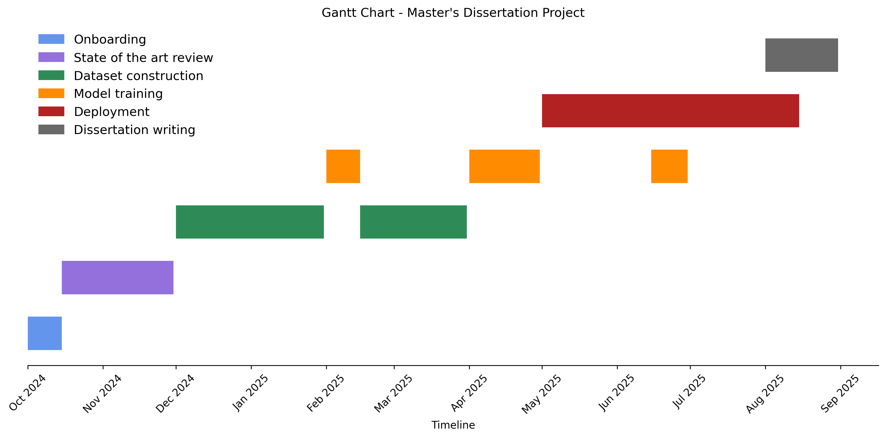
Gantt chart of the project timeline, with colors denoting the different phases of work.
This document was prepared in August 2025 using LaTeX, Python for generating visualizations, Photopea [183] for image editing, and the BibTeX format for managing references. Large Language Models (ChatGPT, Gemini) were used to check grammar and spelling, as well as to provide assistance with coding. We also acknowledge the availability of the Deep Research [184] assistant, a valuable tool for discovering relevant literature across the internet.
All the resources required for this project were provided by the company, including financial support as well as access to the necessary hardware, software, and data. Additional resources, such as software licenses or access to certain research papers, were made available through the University.
The job of a machine learning engineer can sometimes feel frustrating. Many imagine it as simply feeding data into models, pressing the training button, and hoping for valuable results. In reality, the process is far more complex, but also far more rewarding. Precisely because neural networks often behave as black boxes, it is essential to develop a deep understanding of the problem in order to uncover the true reasons why something is not working as expected. This demands constant learning, patience, perseverance, and creativity. At Innovasur, I have found a stimulating environment where teammates are always willing to help and share their knowledge, approaching challenges with both methodological rigor and an academic mindset. This experience has shown me that there is still plenty of room for meaningful innovation within the private sector.
Data Annotation Workflow
In order to build datasets with intensive annotations, including skeletons and action labels, from raw RGB frames, we follow a semi-automatic approach that avoids the need to manually annotate thousands of keypoints across many different frames. To this end, we leverage pretrained state-of-the-art human detectors, pose estimators, and trackers to automatically annotate the original clips, and then review and correct these annotations using the Computer Vision Annotation Tool (CVAT) [185].A.1 Automatic Annotation
The configuration of the automatic annotation pipeline must be flexible enough to handle different types of videos. The clarity of the RGB clips in the Le2iActions dataset (Subsection 2.3.3) allows us to rely on simpler models without extensive parameter tuning. In contrast, the CCTVActions dataset (Subsection 2.3.4) includes people at greater distances and in crowded scenes, requiring more careful model selection and parameter adjustment.
The resulting pipeline is as follows:
-
We first use a human detector to locate all people in each video frame using bounding boxes. We employ the YOLO v11 [186] model in its most powerful variant (
YOLO11x), implemented in theultralyticslibrary [179], which provides a pretrained checkpoint achieving high mAP on the COCO dataset [72].Detection parameters may be adjusted to balance precision and recall. For example, we use a low confidence threshold ($0.02$), a permissive NMS IoU ($0.2$), and cap detections at $10$ per frame to minimize false negatives while controlling noise.
When trying to detect particular individuals in crowded or occluded scenes, this cap can be increased to reduce the risk of missing true positives; if necessary, we resort to RT-DETR [119] (
RTDETR-Ximplementation inultralytics), which eliminates NMS and is more robust under heavy overlap. -
A tracker is required to link detected bounding boxes across video frames. We employ the BoT-SORT tracker [127], reported to be highly robust for multi-pedestrian tracking by combining both motion and appearance features. It is integrated within the
ultralyticsframework, and we rely on its optimized default configuration.Since tracking is performed offline, we can enforce ID continuity by interpolating bounding box trajectories when a track is temporarily lost, thus accounting for missed detections. Furthermore, track IDs facilitate the manual review stage, allowing entire trajectories of non-relevant subjects to be quickly removed.
-
A top-down pose estimator is applied over the detected bounding boxes to extract skeletons. We use ViTPose-H [78], a state-of-the-art model for pose estimation that reports strong results on COCO [72], AI Challenger [77], MPII [74], and CrowdPose [76]. The architecture, implemented via the
MMPoselibrary [187], outputs 17 2D keypoints in the COCO Keypoints format [73] for each detected person, with a confidence score assigned to every keypoint.Instead of retaining these scores in the final annotations, we apply a visibility threshold to derive a visibility flag for each keypoint. This threshold can be adjusted, typically ranging between $0.2$ and $0.4$. If the flag is not triggered, the keypoint coordinates are set to $(0,0)$, effectively discarding the keypoint.
The pose estimator could be merged with the detector in a single stage using alternatives such as YOLO-Pose [79]. However, we argue that separating detection and pose estimation is advantageous, as it provides greater flexibility in model selection and typically yields better results, especially for distant subjects. In fact, when supplied with a well-localized bounding box, the ViTPose pose estimation model produces remarkably accurate keypoints.
-
Once this process is completed for an RGB clip, the results are exported into a CVAT
for video 1.1 [188]
.xmlfile, which contains the bounding boxes, skeletons, and tracking IDs for each of its frames. Although these annotations are typically stored in.jsonformat, CVAT natively supports only this.xmlschema.
We can batch entire directories containing video clips to be processed automatically using the same pipeline configuration. Since annotation time is not a constraint, our priority is accuracy rather than speed. The pipeline is therefore not designed for real-time operation, even though some of its state-of-the-art components are capable of running in such settings.
The pipeline has also been designed with extensibility in mind: it can be adapted to handle different detection categories, alternative skeleton configurations, and multiple input clips presented in various forms.
A.2 Annotation review using CVAT
Videos with their corresponding .xml annotation
files can be easily uploaded to a CVAT server instance using
the CVAT Python SDK. Each video is defined as a task and assigned to a project that includes two labels:
one for person bounding boxes and another for person skeletons, where the available keypoints are specified.
In CVAT, bounding boxes and skeletons of the same subject receive different sequential track IDs,
but are linked through the concept of grouped shapes.
We will review and correct the annotations frame by frame using the CVAT interface (see Figure 52 for an example). The review criterion is to ensure that every body part of the annotated person(s) is correctly captured, within a certain margin of spatial imprecision. If a body part is occluded such that its relative position with respect to the body cannot be determined, it should be ignored.
CVAT interface showing a frame from a Le2iActions clip, with bounding boxes and skeletons automatically annotated.
These are some of the crucial tasks to ensure high-quality annotations:
- Delete bounding boxes and skeletons that do not correspond to any person, or to individuals not relevant for annotation. This postprocessing step is straightforward, as deletions can be performed by track ID. For this reason, we emphasized recall in the detection stage for crowded scenes: it is easier to remove false positives than to recover missed detections.
- If ID switches occur, there is an option to merge tracks, which may involve interpolation of bounding boxes and skeletons. Tracks can also be split when necessary.
- Correct bounding box or keypoint positions as needed, and set their visibility mask to zero if the original prediction was assigned excessive confidence.
- Most errors in automatic annotation stem from the detector failing to capture certain people, an inherently challenging task. If a person is missed and their track is lost across frames (thus preventing ID continuity), pose estimation cannot be applied. In such cases, we may either rerun the automatic stage for that video with a different configuration (e.g., lower confidence threshold, alternative model), or manually add bounding boxes and tracks through the CVAT interface, after which only pose estimation needs to be applied.
Once the task is completed, we can download the ground-truth annotations through the CVAT SDK,
this time exporting them to .json format for further processing, as it is more standard.
As a final step, some checks can be performed to ensure the integrity of the annotations, such as verifying that,
while multiple tracks may be annotated per clip,
only one is retained for classifier training,
and that the number of frames in the original RGB clip matches the annotated frames.
A.3 Clip Segmentation and Structuring
Finally, the annotated clips are trimmed to include only the
frames in which the actions of interest occur.
This is achieved by specifying timestamps in the form of frame indices,
which can be inspected through the CVAT interface,
and then applying exact cuts to both the original RGB video
(using the precise video manipulation tool ffmpeg [189])
and the corresponding annotation files.
The resulting segments may map to
to a single action label (for training the classifier),
multiple sequential labels for the same subject,
or even different labels across multiple subjects.
Of course,
this trimming process should adhere to the guidelines established
in Section 2.1, yet determining the exact frame boundaries
is inherently subjective and often requires human judgment.
Although RGB data are not considered in the development
of our action recognition system, retaining them is valuable
for potential future use. Additionally, joint visualizations of
RGB frames together with their associated skeletons provide an effective
tool for qualitative analysis. For consistency, videos are stored in .mp4 format using the H.264 codec.
This entire data annotation workflow not only enabled the construction of the datasets, but also provided valuable experience and insights that informed the design of the overall system pipeline.
Bibliography
[1] . "Deep Learning: Foundations and Concepts" . Springer International Publishing. 2024.
[2] . "Approximation by superpositions of a sigmoidal function" . Mathematics of Control, Signals, and Systems. 1989.
[3] . "Approximation capabilities of multilayer feedforward networks" . Neural Networks. 1991.
[4] . "Análisis de la eficiencia de redes neuronales a través de la anchura de sus capas" . Universidad de Granada. 2024.
[5] . "Neural Network Tutorial – Multi Layer Perceptron" .
[6] . "The perceptron: A probabilistic model for information storage and organization in the brain." . Psychological Review. 1958.
[7] . "(1969) Marvin Minsky and Seymour Papert, Perceptrons, Cambridge, MA: MIT Press, Introduction, pp. 1-20, and p. 73 (figure 5.1)" . Neurocomputing, Volume 1. 1988.
[8] . "Learning representations by back-propagating errors" . Nature. 1986.
[9] . "Pattern Recognition and Machine Learning (Information Science and Statistics)" . Springer-Verlag. 2006.
[11] . "From Convolution to Neural Network" .
[12] . "Gradient-based learning applied to document recognition" . Proceedings of the IEEE. 1998.
[13] . "ImageNet Classification with Deep Convolutional Neural Networks" . Advances in Neural Information Processing Systems. 2012.
[14] . "You Only Look Once: Unified, Real-Time Object Detection" . arXiv. 2015.
[15] . "Faster R-CNN: Towards Real-Time Object Detection with Region Proposal Networks" . arXiv. 2015.
[16] . "OpenPose: Realtime Multi-Person 2D Pose Estimation using Part Affinity Fields" . arXiv. 2018.
[17] . "Attention Is All You Need" . arXiv. 2017.
[18] . "Learning Spatiotemporal Features with 3D Convolutional Networks" . arXiv. 2014.
[19] . "Quo Vadis, Action Recognition? A New Model and the Kinetics Dataset" . arXiv. 2017.
[20] . "A Comprehensive Survey on Graph Neural Networks" . arXiv. 2019.
[21] . "Spectral Networks and Locally Connected Networks on Graphs" . arXiv. 2013.
[22] . "Convolutional Neural Networks on Graphs with Fast Localized Spectral Filtering" . arXiv. 2016.
[23] . "Structured Sequence Modeling with Graph Convolutional Recurrent Networks" . arXiv. 2016.
[24] . "Spatial Temporal Graph Convolutional Networks for Skeleton-Based Action Recognition" . arXiv. 2018.
[25] . "Human Action Recognition and Prediction: A Survey" . arXiv. 2018.
[26] . "A Survey of Video Action Recognition Based on Deep Learning" . Knowledge-Based Systems. 2025.
[27] . "Vision-based human fall detection systems using deep learning: A review" . Computers in Biology and Medicine. 2022.
[28] . "Online human action detection and anticipation in videos: A survey" . Neurocomputing. 2022.
[29] . "Two-Stream Convolutional Networks for Action Recognition in Videos" . arXiv. 2014.
[30] . "UCF101: A Dataset of 101 Human Actions Classes From Videos in The Wild" . arXiv. 2012.
[31] . "HMDB: a large video database for human motion recognition" . Proceedings of the International Conference on Computer Vision (ICCV). 2011.
[32] . "Temporal Segment Networks: Towards Good Practices for Deep Action Recognition" . arXiv. 2016.
[33] . "The Kinetics Human Action Video Dataset" . arXiv. 2017.
[34] . "SlowFast Networks for Video Recognition" . arXiv. 2018.
[35] . "Long-term Recurrent Convolutional Networks for Visual Recognition and Description" . arXiv. 2014.
[36] . "Is Space-Time Attention All You Need for Video Understanding?" . arXiv. 2021.
[37] . "ViViT: A Video Vision Transformer" . arXiv. 2021.
[38] . "Video Swin Transformer" . Proceedings of the IEEE/CVF Conference on Computer Vision and Pattern Recognition (CVPR). 2022.
[39] . "Hierarchical recurrent neural network for skeleton based action recognition" . 2015 IEEE Conference on Computer Vision and Pattern Recognition (CVPR). 2015.
[40] . "Two-Stream Adaptive Graph Convolutional Networks for Skeleton-Based Action Recognition" . arXiv. 2018.
[41] . "Revealing key details to see differences: A novel prototypical perspective for skeleton-based action recognition" . Proceedings of the Computer Vision and Pattern Recognition Conference. 2025.
[42] . "Video Based Fall Detection Using Human Poses" . arXiv. 2021.
[43] . "NTU RGB+D: A Large Scale Dataset for 3D Human Activity Analysis" . arXiv. 2016.
[44] . "Human fall-down event detection based on 2D skeletons and deep learning approach" . 2018 International Workshop on Advanced Image Technology (IWAIT). 2018.
[45] . "An enhanced real-time human pose estimation method based on modified YOLOv8 framework" . Scientific Reports. 2024.
[46] . "Regulation (EU) 2024/1689 of the European Parliament and of the Council of 13 June 2024 laying down harmonised rules on artificial intelligence (Artificial Intelligence Act)" . 2024.
[47] . "ISO/IEC 42001:2023" . 2023.
[48] . "A Survey of Post-Hoc XAI Methods From a Visualization Perspective: Challenges and Opportunities" . IEEE Access. 2025.
[49] . "Explainable Artificial Intelligence (XAI): Concepts, Taxonomies, Opportunities and Challenges toward Responsible AI" . arXiv. 2019.
[50] . "Axiomatic Attribution for Deep Networks" . arXiv. 2017.
[51] . "Enhanced Integrated Gradients: improving interpretability of deep learning models using splicing codes as a case study" . Genome Biology. 2020.
[52] . ""Why Should I Trust You?": Explaining the Predictions of Any Classifier" . arXiv. 2016.
[53] . "Understanding Black-box Predictions via Influence Functions" . arXiv. 2017.
[54] . "Deep Inside Convolutional Networks: Visualising Image Classification Models and Saliency Maps" . arXiv. 2013.
[55] . "Striving for Simplicity: The All Convolutional Net" . arXiv. 2014.
[56] . "Learning Important Features Through Propagating Activation Differences" . arXiv. 2017.
[57] . "Improving performance of deep learning models with axiomatic attribution priors and expected gradients" . arXiv. 2019.
[58] . "A Model Interpretability Library for PyTorch" .
[59] . "A Unified Approach to Interpreting Model Predictions" . arXiv. 2017.
[60] . "Learning Deep Features for Discriminative Localization" . arXiv. 2015.
[61] . "Grad-CAM: Visual Explanations from Deep Networks via Gradient-Based Localization" . International Journal of Computer Vision. 2019.
[62] . "From Movements to Metrics: Evaluating Explainable AI Methods in Skeleton-Based Human Activity Recognition" . arXiv. 2024.
[63] . "Choose Your Explanation: A Comparison of SHAP and GradCAM in Human Activity Recognition" . arXiv. 2024.
[64] . "GNNExplainer: Generating Explanations for Graph Neural Networks" . arXiv. 2019.
[65] . "Parameterized Explainer for Graph Neural Network" . arXiv. 2020.
[66] . "GraphLIME: Local Interpretable Model Explanations for Graph Neural Networks" . arXiv. 2020.
[67] . "GraphSVX: Shapley Value Explanations for Graph Neural Networks" . arXiv. 2021.
[68] . "A Survey on Explainability of Graph Neural Networks" . arXiv. 2023.
[69] . "Mimetics: Towards Understanding Human Actions Out of Context" . arXiv. 2019.
[70] . "Skeleton Graph-Neural-Network-Based Human Action Recognition: A Survey" . Sensors. 2022.
[71] . "Action recognition based on RGB and skeleton data sets: A survey" . Neurocomputing. 2022.
[72] . "Microsoft COCO: Common Objects in Context" . arXiv. 2014.
[74] . "2D Human Pose Estimation: New Benchmark and State of the Art Analysis" . IEEE Conference on Computer Vision and Pattern Recognition (CVPR). 2014.
[75] . "TRB: A Novel Triplet Representation for Understanding 2D Human Body" . arXiv. 2019.
[76] . "CrowdPose: Efficient Crowded Scenes Pose Estimation and A New Benchmark" . arXiv. 2018.
[77] . "Large-Scale Datasets for Going Deeper in Image Understanding" . 2019 IEEE International Conference on Multimedia and Expo (ICME). 2019.
[78] . "ViTPose: Simple Vision Transformer Baselines for Human Pose Estimation" . Advances in Neural Information Processing Systems. 2022.
[79] . "YOLO-Pose: Enhancing YOLO for Multi Person Pose Estimation Using Object Keypoint Similarity Loss" . arXiv. 2022.
[80] . "Deep High-Resolution Representation Learning for Human Pose Estimation" . arXiv. 2019.
[81] . "15 Keypoints Is All You Need" . arXiv. 2019.
[82] . "Revisiting Skeleton-based Action Recognition" . arXiv. 2021.
[83] . "Leveraging Two Kinect Sensors for Accurate Full-Body Motion Capture" . Sensors. 2015.
[84] . "SelfPose3d: Self-Supervised Multi-Person Multi-View 3d Pose Estimation" . arXiv. 2024.
[85] . "3D Human Pose Estimation = 2D Pose Estimation + Matching" . arXiv. 2016.
[86] . "Quality of Data in Machine Learning" . arXiv. 2021.
[87] . "Quantity vs Quality: Investigating the Trade-Off between Sample Size and Label Reliability" . arXiv. 2022.
[88] . "A Short Note about Kinetics-600" . arXiv. 2018.
[89] . "A Short Note on the Kinetics-700 Human Action Dataset" . arXiv. 2019.
[90] . "Kinetics Skeleton 400" .
[91] . "NTU RGB+D 120: A Large-Scale Benchmark for 3D Human Activity Understanding" . IEEE Transactions on Pattern Analysis and Machine Intelligence. 2020.
[92] . "Towards understanding action recognition" . IEEE International Conference on Computer Vision (ICCV). 2013.
[93] . "STAIR Actions: A Video Dataset of Everyday Home Actions" . arXiv. 2018.
[94] . "Hollywood in Homes: Crowdsourcing Data Collection for Activity Understanding" . arXiv. 2016.
[95] . "UR Fall Detection Dataset" .
[96] . "Optimized spatio-temporal descriptors for real-time fall detection: comparison of support vector machine and Adaboost-based classification" . Journal of Electronic Imaging. 2013.
[97] . "UP-Fall Detection Dataset: A Multimodal Approach" . Sensors. 2019.
[98] . "FallVision: A benchmark video dataset for fall detection" . Data in Brief. 2025.
[99] . "Multiple cameras fall data set" . 2011.
[100] . "Elevating urban surveillance: A deep CCTV monitoring system for detection of anomalous events via human action recognition" . Sustainable Cities and Society. 2024.
[101] . "The IKEA ASM Dataset: Understanding People Assembling Furniture through Actions, Objects and Pose" . arXiv. 2020.
[102] . "Human in Events: A Large-Scale Benchmark for Human-centric Video Analysis in Complex Events" . arXiv. 2020.
[103] . "Synthda: Exploiting existing real-world data for usable and accessible synthetic data generation" . SIG-GRAPH Asia 2023 Technical Communications. 2023.
[104] . "Synthda: Pose-Level Synthetic Data Augmentation for Action Recognition" . GitHub. 2025.
[105] . "End-to-End Security Solutions" .
[106] . "Enhancing Skeleton-Based Action Recognition in Real-World Scenarios Through Realistic Data Augmentation" . Proceedings of the IEEE/CVF Winter Conference on Applications of Computer Vision (WACV) Workshops. 2024.
[107] . "Delving Deep into One-Shot Skeleton-based Action Recognition with Diverse Occlusions" . arXiv. 2022.
[108] . "Leveraging Artificial Occluded Samples for Data Augmentation in Human Activity Recognition" . Sensors. 2025.
[109] . "Exploring Self-supervised Skeleton-based Action Recognition in Occluded Environments" . arXiv. 2023.
[110] . "Graph Edge Convolutional Neural Networks for Skeleton Based Action Recognition" . arXiv. 2018.
[111] . "Skeleton-Based Action Recognition With Shift Graph Convolutional Network" . 2020 IEEE/CVF Conference on Computer Vision and Pattern Recognition (CVPR). 2020.
[112] . "InfoGCN: Representation Learning for Human Skeleton-based Action Recognition" . 2022 IEEE/CVF Conference on Computer Vision and Pattern Recognition (CVPR). 2022.
[113] . "Skeleton-based action recognition with multi-stream adaptive graph convolutional networks" . arXiv. 2020.
[114] . "Unsupervised Feature Learning of Human Actions as Trajectories in Pose Embedding Manifold" . arXiv. 2018.
[115] . "Angle information assisting skeleton-based actions recognition" . PeerJ Computer Science. 2024.
[116] . "PoseClassificationNet" .
[117] . "Behaviour recognition of housed sheep based on spatio-temporal information" . Journal of Applied Animal Research. 2024.
[118] . "You Only Look Once: Unified, Real-Time Object Detection" . arXiv. 2015.
[119] . "DETRs Beat YOLOs on Real-time Object Detection" . 2023.
[120] . "Simple and Lightweight Human Pose Estimation" . arXiv. 2019.
[121] . "An Image is Worth 16x16 Words: Transformers for Image Recognition at Scale" . arXiv. 2020.
[122] . "RTMO: Towards High-Performance One-Stage Real-Time Multi-Person Pose Estimation" . arXiv. 2023.
[123] . "Simple online and realtime tracking" . 2016 IEEE International Conference on Image Processing (ICIP). 2016.
[124] . "An elementary introduction to Kalman filtering" . Communications of the ACM. 2019.
[125] . "ByteTrack: Multi-Object Tracking by Associating Every Detection Box" . arXiv. 2021.
[126] . "Simple Online and Realtime Tracking with a Deep Association Metric" . arXiv. 2017.
[127] . "BoT-SORT: Robust Associations Multi-Pedestrian Tracking" . arXiv. 2022.
[128] . "Discriminative Correlation Filter Tracker with Channel and Spatial Reliability" . International Journal of Computer Vision. 2018.
[129] . "LightTrack: A Generic Framework for Online Top-Down Human Pose Tracking" . arXiv. 2019.
[130] . "OFPI: Optical Flow Pose Image for Action Recognition" . Mathematics. 2023.
[131] . "Simple yet efficient real-time pose-based action recognition" . arXiv. 2019.
[132] . "Channel-wise Topology Refinement Graph Convolution for Skeleton-Based Action Recognition" . arXiv. 2021.
[133] . "DeepGRU: Deep Gesture Recognition Utility" . arXiv. 2018.
[134] . "Skeleton-Based Action Recognition Using Spatio-Temporal LSTM Network with Trust Gates" . arXiv. 2017.
[135] . "Co-occurrence Feature Learning for Skeleton based Action Recognition using Regularized Deep LSTM Networks" . arXiv. 2016.
[136] . "Skeleton Focused Human Activity Recognition in RGB Video" . arXiv. 2020.
[137] . "MMNet: A Model-Based Multimodal Network for Human Action Recognition in RGB-D Videos" . IEEE Transactions on Pattern Analysis and Machine Intelligence. 2023.
[138] . "Chained Multi-stream Networks Exploiting Pose, Motion, and Appearance for Action Classification and Detection" . arXiv. 2017.
[139] . "A Sliding Window Based Approach With Majority Voting for Online Human Action Recognition using Spatial Temporal Graph Convolutional Neural Networks" . 2022 7th International Conference on Machine Learning Technologies (ICMLT). 2022.
[140] . "Improved Sliding Window Smoothing for Video Temporal Action Segmentation and Recognition" . 2023 China Automation Congress (CAC). 2023.
[141] . "A Sliding Window Scheme for Online Temporal Action Localization" . Computer Vision – ECCV 2022. 2022.
[142] . "MMCV: A Foundational Library for Computer Vision" . GitHub. 2018.
[143] . "PyTorch: An Imperative Style, High-Performance Deep Learning Library" . arXiv. 2019.
[144] . "MMAction2: OpenMMLab's Next Generation Video Understanding Toolbox and Benchmark" . GitHub. 2020.
[145] . "Pyskl: Towards good practices for skeleton action recognition" . Proceedings of the 30th ACM International Conference on Multimedia. 2022.
[146] . "Accelerating the Machine Learning Lifecycle with MLflow" . IEEE Data Eng. Bull.. 2018.
[147] . "Data Version Control: Git for Data and Models" . GitHub. 2023.
[148] . "Captum: A unified and generic model interpretability library for PyTorch" . arXiv. 2020.
[149] . "Very Deep Convolutional Networks for Large-Scale Image Recognition" . arXiv. 2014.
[150] . "DG-STGCN: Dynamic Spatial-Temporal Modeling for Skeleton-based Action Recognition" . arXiv. 2022.
[151] . "Understanding Linear Probing then Fine-tuning Language Models from NTK Perspective" . arXiv. 2024.
[152] . "Augmentations vs Algorithms: What Works in Self-Supervised Learning" . arXiv. 2024.
[153] . "RandAugment: Practical automated data augmentation with a reduced search space" . arXiv. 2019.
[154] . "Random Search for Hyper-Parameter Optimization" . Journal of Machine Learning Research. 2012.
[155] . "Progressive Transfer Learning" . IEEE Transactions on Image Processing. 2022.
[156] . "TL-med: A Two-stage transfer learning recognition model for medical images of COVID-19" . Biocybernetics and Biomedical Engineering. 2022.
[157] . "Fine-Tuning can Distort Pretrained Features and Underperform Out-of-Distribution" . arXiv. 2022.
[158] . "On the Convergence of Differentially-Private Fine-tuning: To Linearly Probe or to Fully Fine-tune?" . arXiv. 2024.
[159] . "Domain-Aware Fine-Tuning: Enhancing Neural Network Adaptability" . arXiv. 2023.
[160] . "Surgical Fine-Tuning Improves Adaptation to Distribution Shifts" . arXiv. 2022.
[161] . "Why Warmup the Learning Rate? Underlying Mechanisms and Improvements" . arXiv. 2024.
[162] . "Super-Convergence: Very Fast Training of Neural Networks Using Large Learning Rates" . arXiv. 2017.
[163] . "Augment your batch: better training with larger batches" . arXiv. 2019.
[164] . "Dropout: A Simple Way to Prevent Neural Networks from Overfitting" . Journal of Machine Learning Research. 2014.
[165] . "Don't Decay the Learning Rate, Increase the Batch Size" . arXiv. 2017.
[166] . "SENTRY: Selective Entropy Optimization via Committee Consistency for Unsupervised Domain Adaptation" . arXiv. 2020.
[167] . "On Splitting Training and Validation Set: A Comparative Study of Cross-Validation, Bootstrap and Systematic Sampling for Estimating the Generalization Performance of Supervised Learning" . Journal of Analysis and Testing. 2018.
[168] . "Why Comparing Single Performance Scores Does Not Allow to Draw Conclusions About Machine Learning Approaches" . arXiv. 2018.
[169] . "Generalized Out-of-Distribution Detection: A Survey" . arXiv. 2021.
[170] . "NVIDIA DeepStream SDK: Real-time Streaming Analytics Toolkit" .
[171] . "GStreamer Documentation" .
[172] . "NVIDIA DeepStream SDK Forums" .
[173] . "NVIDIA NGC Catalog" .
[174] . "NVIDIA Jetson AGX Orin" .
[175] . "Web oficial de In4City" .
[176] . "ONNX: Open Neural Network Exchange" .
[177] . "A White Paper on Neural Network Quantization" . arXiv. 2021.
[178] . "NVIDIA Nsight Systems" .
[179] . "Ultralytics YOLO" . GitHub. 2024.
[180] . "Gst-nvtracker Documentation" .
[181] . "Benchmarking NLP and Computer Vision Models on Domain-Specific Architectures: Standard vs. TensorRT-Optimized Performance" . Journal of Electrical Systems. 2024.
[182] . "AR-CCTV Sources" . Google Drive. 2025.
[183] . "Photopea: Online Photo Editor" .
[184] . "Introducing Deep Research" .
[185] . "opencv/cvat: v1.1.0" . Zenodo. 2020.
[186] . "YOLOv11: An Overview of the Key Architectural Enhancements" . arXiv. 2024.
[187] . "MMPose: Pose Estimation Toolbox and Benchmark" . GitHub. 2020.
[188] . "CVAT XML annotation format" .
[189] . "Converting video formats with FFmpeg" . Linux Journal. 2006.